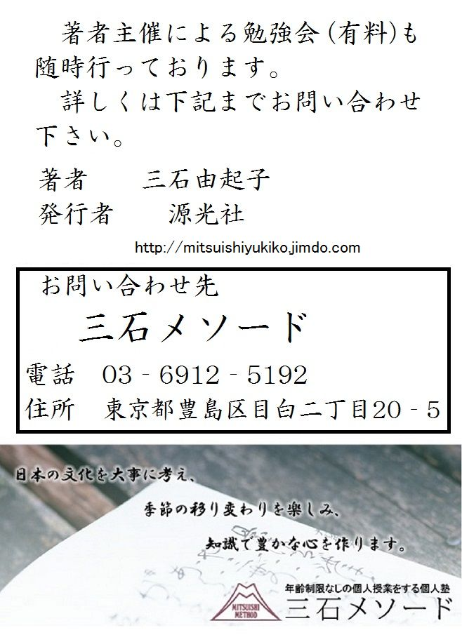

| これで読破！ 蜻蛉日記 中 | |
| 三石由起子 | |
| genkosha (2014) | |
かくはかなながら、年たちかへる朝にはなりにけり。年ごろ、あやしく、世の人のする言忌などもせぬところなればや、かうはあらんと、疾く起きてゐざり出づるまゝに、「いづら、こゝに人〳〵今年だにいかで言忌などして世の中こゝろみん」と言ふをきゝて、はらからとおぼしき人、まだ臥しながら「物きこゆ。あめつちを袋に縫ひて」と誦ずるに、いとをかしくなりて、「さらに身には、三十日三十夜は我もとに、と言はむ」と言へば、前なる人〳〵笑ひて、「いと思ふやうなることにも侍るかな。おなじくはこれを書かせたまひて、殿にやはたてまつらせ給はぬ」と言ふに、臥したりつる人も起きて、「いとよきことなり。天下の吉方にもまさらん」など笑ふ〳〵言へば、さながら書きて、ちひさき人してたてまつれたれば、このごろ時の世の中人にて、人はいみじくおほくまゐりこみたり。内裏へも疾くとて、いとさわがしげなりけれど、かくぞある。今年は五月二あればなるべし。
年ごとに余れば恋ふる君がため
うるふ月をば置くにやあるらん
とあれば、祝ひそしつと思ふ。
このように頼りなく儚い身のままで、年の改まる朝となった。長年の間、世間の人がするように、不吉な言葉を慎んだり、縁起の良いことを心がけるような真似をして来なかったので、それが原因でこのような身の上なのだろうかと、今年は早くに起きて、床から出たそのまますぐに、
「さあ、みんな。今年は縁起の祝いをして、どうなるものか試してみようと思っているのですよ。」
と、言うと、それを聞いた妹が、まだ臥したままで、
「神様に申し上げます。「あめつちを袋に縫いて」」
と、唱えたのでとてもおかしくて、
「そうして個人的な願いとしては、「三十日三十夜はわが許に」通って来るようにと唱えましょう。」
と言うと、前にいた女房が笑って、
「まあ、あからさまなご希望ですね。同じことならそれをお書きになって、殿に直接奉ったらいかがでしょう。」
と、言う。臥していた人も起き出して来て、
「それはいいわね。天下の吉方（＝万事が吉であること）よりも効果がありそうですわ。」
などと笑いながら言うので、本当にそのままを書き、女童を使ってそれを持たせてやると、相手は近頃では、権勢のただ中にいる人であったから、新年の挨拶に大勢が参上しているのであった。宮中へも早く参内しなければと大騒ぎしているようだったが、次のような歌を返して寄越した。
今年は五月が閏月で二度あるからであろう。
年ごとに余れば恋ふる君がため
うるふ月をば置くにやあるらん
（毎月、三十日、三十夜、私が通えば、年ごとに数日ずつ余る。それで恋しがるあなたのために閏月というものがあるのでしょう）
とあった。いささか、大袈裟な言祝いをし過ぎたと思った。
「あめつちを袋に縫いて」は、年頭の言寿歌の断片である。「天地を袋に縫ひて幸をいれてもたれば思ふことなし」と、歌われた。この場面では「天地を袋に縫って、そこに幸福を入れて持っているから物思いはない」という歌詞に続けて「我が身には三十日三十夜はわがもとにいれてもたれば思ふことなし」ともじって歌ったのだと思われる。
またの日、こなたあなた、下衆のなかより事いできて、いみじきことどもあるを、人はこなたざまに心よせて、いとほしげなるけしきにあれど、我はすべて近きがすることなり、くやしくなどおもふほどに、家移りとかせらるゝことありて、我はすこし離れたる所に渡りぬれば、わざときら〳〵しくて、日まぜなどにうち通ひたれば、はかな心ちには、なほかくてぞあるべかりけるを、錦を着てとこそいへ、ふるさとへも帰りなんと思ふ。
その翌日、この家の下人達と時姫方の下人達との間に諍い事があって、大騒ぎになった。兼家はこちらに同情を寄せているようだが、これは邸が近過ぎることからおきたのだと口惜しい思いであった。そのうちに本宅では家を移ることになって、少し離れた場所に自分も移った。すると、兼家はことさらに立派ななりをして、一日置きくらいに通って来るのである。頼りない思いをしていた心には、何とか慰められるような気もしたのだが、「錦を着て帰る」ではないが、ふるさとへ帰りたいような思いである。
三月三日、節供など物したるを、人なくてさう〴〵しとて、こゝの人〳〵、かしこの侍に、かう書きてやるめり。たはぶれに、
桃の花すき物どもを西王が
そのわたりまでたづねにぞやる
すなはちかい連れて来たり。おろし出だし、酒のみなどして暮らしつ。
三月三日、節供を祝ったが、ここでは人が少なくて寂しいからと、女房達が本宅の侍を招待する。こんなことを戯れに書いてやったようである。
桃の花すき物どもを西王が
そのわたりまでたづねにぞやる
（西王母の園ではないが、桃の花を浮かべて節句の酒を飲む風流人を捜しにそちらまで人を遣わす）
するとすぐに連れ立ってやって来た。お供物を下げて出し、酒を飲んで一日を暮らす。
中の十日のほどに、この人〳〵、方わきて、小弓のことせんとす。かたみに出居などぞしさわぐ。しりへの方のかぎり、こゝにあつまりて馴らす日、女方に賭物乞ひたれば、さるべき物やたちまちにおぼえざりけむ、わびざれに、あをき紙を柳の枝にむすびつけたり。
山風のまへより吹けばこの春の
柳の糸はしりへにぞ寄る
かへし、口〴〵したれど、忘るゝほどおしはからなむ。一つはかくぞある。
かず〳〵に君かたよりてひくなれば
柳の眉も今ぞひらくる
「つごもりがたにせん」と定むるほどに、世の中に、いかなる咎まさりたりけむ、天下人〳〵ながるゝと、のゝしること出で来て、紛れにけり。
二十日頃、兼家方の侍達が、前方と後方の二組に分かれて小弓の競技をしようということになった。その予行演習をするというので大騒ぎである。後方の者だけがこの邸に集まって練習をする日、女房達に賭けの賞品を出して欲しいと言って来た。すぐには何も思い付かなかったので、困った挙句、青紙を柳の枝に結び付けて、こんな歌を詠んだ。
山風のまへより吹けばこの春の
柳の糸はしりへにぞ寄る
（山形から風が吹いて柳葉が後ろに靡くように、私達も後方組の味方ですよ）
「山形」とは、的の後ろに張る幕のことである。その返歌は、口々に色々あったのだが、忘れてしまった。一つは、こうであった。
かず〳〵に君かたよりてひくなれば
柳の眉も今ぞひらくる
（心を込めて応援して下さるので、やっと安心して愁眉を開きます）
「本試合は月末頃に。」
と決めてあったのだが、世の中にどんな咎があったのか、配流者が出るような事件が起きて、試合はそのままに紛れてしまった。
これはいわゆる「安和の変」である。左大臣・源高明（＝醍醐天皇の皇子）が謀叛に加担したとされて、太宰員外権帥に左遷されたのである。康保四年に冷泉天皇が即位された。それに伴って東宮を決める。候補となったのは村上天皇と皇后・安子との皇子である為平親王と守平親王であった。安子は師輔の娘であり、兼家の姉である。為平は兄であり、人物についても人望があった。当然のこととして東宮になることが期待されていたが、実際には守平親王であった。この背景には政治が関与している。為平は、当時の右大臣であった源高明の婿になっていた。左大臣は藤原実頼（＝師輔の兄、兼家の伯父）であった。実頼は、為平親王が東宮になれば、源高明の権力が強くなるだろうと恐れたのであった。高明もまた人望の厚い大臣であった。実頼は、帝の許可を得て守平親王を東宮に据える。後の円融天皇である。やがて実頼が太政大臣となり、高明は左大臣となる。右大臣には実頼の弟・師尹が就任した。その辺りから藤原氏は源氏の高明に圧力を加え始める。特に冷泉天皇が物の怪に悩むと、譲位の噂が盛んに流された。その噂が「高明が為平親王を擁して天皇を退位させようとしている」として広まって行ったのであった。藤原氏の捏造であったが、高明が不満を抱えていたのも事実である。高明は学問を好み、『西宮記』を表わすほど、朝儀や有職故実に練達した人物であった。政治的な野心があったとは思われない。だが、当時、安和二年にちょうど源連、橘繁延、藤原千春らが私紛を起こした小さな事件があり、その背景には高明の存在があるとされたのであった。私紛は公的なものにされて、高明の失脚が意図されたのである。無実の罪であるから、高明は髪を剃り、法師になってでも京にとどまろうとしたが許されなかった。太宰権帥に落とされ、都から追放される。『日本紀略』には「禁中の騒動、殆ど天慶の大乱の如し（宮中の騒動は、将門の乱、純友の乱のようであった）」と、書かれている。七十年前に起きた菅原道真の事件と似たような経過であった。藤原氏が他氏を排斥して行く過程で起きた事件だったのである。最後まで拮抗しながら、高貴な血筋であるために扱いの難しかった源氏の勢力をそぐのが、事件の本筋であった。だが、その中でも藤原氏の内部での権力闘争があった。兼家の父・師輔は既になかったが、兼家の兄弟達は対立を始めていた。兼家、その兄である伊尹、兼通は九条家、実頼は小野宮家、右大臣・師尹は小一条家である。
廿五六日のほどに西の宮の左大臣、流されたまふ。見たてまつらんとて、天の下ゆすりて、西の宮へ人走りまどふ。いといみじきことかなと聞くほどに、人にも見え給はで、逃げ出でたまひにけり。「愛宕になん」「清水に」などゆすりて、つひに尋ね出でて、流したてまつると聞くに、あいなしと思ふまでいみじうかなしく、心もとなき身だにかく思ひ知りたる人は、袖を濡らさぬといふたぐひなし。あまたの御子どもも、あやしき国〴〵の空になりつゝ行くへも知らず散り〴〵別れたまふ。あるは御髪おろしなど、すべて、言へばおろかにいみじ。大臣も法師になりたまひにけれど、しひて帥になしたてまつりて追ひ下したてまつる。そのころほひ、たゞこの事にてすぎぬ。身の上をのみする日記には入るまじきことなれども、悲しと思ひ入りしも誰ならねば、しるし置くなり。
三月二十五、六日頃、西の宮の左大臣（＝源高明）が、配流に処せられた。お姿を拝見しようと京の街中は大騒ぎとなり、西の宮（＝高明の邸）に人々は馳せ参じる。大変な事になったと聞いているうちに、人にも見られないようにして、邸を逃げ出されたのだった。「愛宕山におられる」「いや、清水寺に」などとあちこちを尋ねて、捜し出して配流になさったと聞く。どうしようもないと思うがとても悲しく思います。高明一家をよく存じ上げず、事情の分からない私でもこうなのだから、人情の機微に長けた方々は皆、袖を濡らしたのである。大勢おられた御子方も、どことも知れぬ辺鄙な国々に行かれて、行く方も知らず散り散りにお別れになったのだった。ある方は御髪を下ろして法師になられ、言葉に言い尽せぬ痛ましさである。大臣御自身も法師におなりになったが、それでも強引に太宰権帥にして追放申し上げた。その当時は、ただこの事件のことでもちきりであった。これは我が身の上を書く日記だから、こうした社会的事件を入れるべきではないのだが、悲しいと思ったのは他ならぬ私であるから書いて置くのである。
文献によれば、高明の長男・忠賢は、出家をしたが左遷される。致賢も出家。推賢は不明だがどこかに遷されている。俊賢は、幼かったので父と共に大宰府に赴いている。高明は成人した息子達を同行させなかったが、末の息子だけは、父から離れずに泣き惑ったので連れて下向したと『狭衣日記』には書かれている。
作者はなぜ、この事件を取り上げたのだろうか。この事件に兼家が何らかの関わりを持っていたのは確かである。この状況を巧みに利用して政治的な工作をしたと思われる。だが、その兼家の行動を作者は全く書いていない。政治的な思惑の埒外に作者は身を置いていたのであり、兼家も政治的な事情を語る事はなかったのである。作者は世人の心を受けて高明に同情を寄せている。ただ、世人との違いは、高明への共感であり、その心への連帯であった。その後、作者は高明の妻の一人である愛宮（＝兼家の妹）に見舞いの手紙を送ってもいる。
その前の五月雨の廿よ日のほど、物忌もあり、長き精進も始めたる人、山寺にこもれり。雨いたく降りて、ながむるに、「いとあやしく心ぼそき所になん」などもあるべし。返りごとに、
時しもあれかくさみだれの水まさり
遠方人の日をもこそふれ
と物したるかへし、
ましみづのましてほどふる物ならば
おなじ濡れにて下りもたちなむ
と言ふほどに、うるふ五月にもなりぬ。
閏五月の前の五月二十日すぎに物忌があって、長い精進を開始した兼家が山寺に籠った。雨がひどく降って物が思われたのか、「とてもひどい場所で心細いことだ」と手紙が来た。返事に、
時しもあれかくさみだれの水まさり
遠方人の日をもこそふれ
（よりによって参籠中の五月雨で水嵩が増してしまいました。遠くにおられるあなたが何日も帰京できないのではないかと心配しております）
と詠むと、その返歌に、
ましみづのましてほどふる物ならば
おなじ濡れにて下りもたちなむ
（増水でこれ以上足止めされるなら、雨に濡れて山を下りようと思う）
などと詠み交わしているうちに、閏五月になった。
つごもりより、何心ちにかあらん、そこはかとなくいと苦しけれど、さはれとのみ思ふ。命惜しむと人に見えずもありにしがなとのみ念ずれど、見聞く人たゞならで、芥子焼きのやうなるわざすれど、なほしるしなくてほどふるに、人は、かくきよまはるほどとて、例のやうにも通はず、あたらしき所つくるとて通ふたよりにぞ、立ちながらなどものして、「いかにぞ」などもある。心ちよわくおぼゆるに、惜しからでかなしくおぼゆる夕ぐれに、例の所より帰るとて、蓮の実一本を、人して入れたり。「暗くなりぬれば、まゐらぬなり。これ、かしこのなり。み給へ」となん言ふ。返りごとには、たゞ「生きて生けらぬ、ときこえよ」と言はせて、思ひ臥したれば、あはれ、げにいとをかしかなる所を、命もしらず、人の心もしらねば、「いつしか見せん」とありしも、さもあらばれ、止みなんかしと思ふもあはれなり。
花にさき実になりかはる世をすてゝ
うきはの露と我ぞ消ぬべき
など思ふまで、日をへておなじやうなれば、心ぼそし。よからずはとのみ思ふ身なれば、つゆばかり惜しとにはあらぬを、たゞ、この一人ある人いかにせんとばかり思ひつゞくるにぞ、涙せきあへぬ。
閏五月の月末から、何という心地だろうか、どうもひどく苦しいのだが、ままよ、と思っていた。命を惜しんでいるのだと兼家には思われたくないと思ってじっと我慢をしていたが、周囲の人が黙っておらず、加持祈祷の芥子焼きのようなことをした。それでも効果もなく時が経つ。兼家は、こちらが精進潔斎しているので、いつもよりずっと訪問が少なくなった。新しい邸（＝東三条邸の修復）を作ろうと、そこに通う途中で立ったまま、
「どんな具合か。」
と、声をかけたりする。
気も弱くなっている。我が身などは惜しくもないのに、なぜか悲しくてならない夕暮れであった。いつもの東三条邸からの帰りに、蓮根を一本持って来て、
「もう暗くなったのでお寄りしません。これは東三条邸の蓮根です。御覧ください。」
などと言うのだった。返事には、ただ、
「死んだも同然に生きております、と申し上げて下さい。」
と言わせ、沈んだ気分で寝ていたのだった。
ああ、たいそうご立派な御殿だというが、私の命ももう分からないし、夫の心も分からないので、「いつか見せたい」と言ったけれども、そんな事もなくて、終わってしまうのだろうなと思うと、しみじみとしてしまった。
花にさき実になりかはる世をすてゝ
うきはの露と我ぞ消ぬべき
（花が咲き、身を結ぶ（兼家の）栄達に背を向けて、蓮の葉の上の露のように儚く消える命なのでありましょう）
そんな気になるまで、何日経っても同じような状態なので、心細いのであった。兼家との仲がうまくいかないこの身であるから、少しも惜しい命ではないのだが、一人息子の道綱の将来をどうしようかと思い続けられて涙があふれるばかりであった。
東三条邸は、藤原良房が創設した邸である。摂関家嫡流に伝領されるもので、忠平から実頼を経て、兼家に伝わった。兼家の娘である詮子は、一条天皇の母として初めて女院号を与えられて東三条院と名乗る。この邸は、内裏の焼失によって、一条天皇の里内裏として使用されたこともあるが、仁安元年（１１６６年）に焼失した。
本文の「立ちながらなどものして」に見える「立ちながら」は、正式な訪問とならないので、病気や死の穢れなどに触れないとされていた。また、「惜しからでかなしくおぼゆる」は、紀貫之に「惜しからで悲しきものは身なりけり 人の心のゆくへ知らねば」があり、それを引き歌としている。
木村雅則の講義を引く。
「蓮根を差し出して「御覧になって下さい」と言う兼家に対して、「生きて生けらぬ」では、応えることになっていない。ここは、蓮や露を踏まえた「花にさき実になりかはる世をすてゝうきはの露と我ぞ消ぬべき」が返歌であり、その時に言い添えた言葉が「生きて生けらぬ」であったと解釈したい。「花にさき」の歌は、「など思ふまで」と独詠歌のように書かれているが、そうではなかったように思う。記録として正確に書くのではなく、作者の心情として東三条邸に入れなかった深刻な思いを優先させたかったのだろう。この前後には、作者が東三条邸に入れるのではないかという期待があったのである。実際に東三条邸に入って兼家と同居したのは時姫であった。だが、それを作者は『蜻蛉日記』に書かないのである。」
なほあやしく、例の心ちにたがひておぼゆるけしきも見ゆべければ、やむごとなき僧などよびおこせなどしつゝ、心みるに、さらにいかにもあらねば、かうしつゝ死にもこそすれ、にはかにては思しきことも言はれぬ物にこそあなれ、かくて果てなば、いと口惜しかるべし、あるほどにだにあらば、思ひあらむにしたがひても語らひつべきを、と思ひて、脇息におしかゝりて、書きけることは、
命ながらふべしとのみのたまへば、見果てたてまつりてむとのみ思ひつゝありつるを、限りにもやなりぬらん、あやしく心ぼそき心ちのすればなん。つねにきこゆるやうに、世に久しきことのいと思はずなれば、塵ばかり惜しきにはあらで、たゞこのをさなき人の上なん、いみじくおぼえ侍るものはありける。たはぶれにも御けしきの物しきをば、いとわびしと思ひてはんべめるを、いとおほきなることなくて侍らんには、御けしきなど見せ給ふな。いと罪ふかき身にはべるは、
風だにも思はぬかたに寄せざらば
この世のことはかの世にも見む
はべらざらん世にさへ、うと〳〵しくもてなし給人あらば、つらくなんおぼゆべき。としごろ御覧じ果つまじくおぼえながら、かはりも果てざりける御心を見たまふれば、それ、いとよくかへりみさせ給へ。ゆづり置きてなど思ひたまへつるもしるく、かくなりぬべかめれば、いと長くなん思ひきこゆる。人にも言はぬことの、をかしなどきこえつるも、忘れずやあらんとすらん。折しもあれ、対面にきこゆべきほどにもあらざりければ、
露しげき道とかいとゞ死出の山
かつ〴〵濡るゝ袖いかにせん
と書きて、はしに、「あとには、とひなども、塵のことをなむ誤たざなるさへよくならへとなん、きこえおきたる、とのたまはせよ」と書きて、封じて、上に、「忌など果てなんに、御覧ぜさすべし」と書きて、かたはらなる唐櫃に、ゐざりよりて入れつ。見る人あやしと思ふべけれど、久しくしならば、かくだにものせざらんことの、いと胸いたかるべければなむ。
なおもはっきりしない、体調の優れぬ私の様子は周囲の者達にも分かるらしいので、霊験あらたかな尊い僧などを呼んで試してみるが、それでも変わりはなかった。こんな状態で死ぬのだろうか、急に死ぬようなことになったら、言い置きたいことも言えぬままになる。このまま死んだらどんなに無念だろうか。せめて命のあるうちに兼家が訪ねて来てくれれば、兼家の心の程度によって頼んでおきたいこともあるのだが、と思い、脇息に寄りかかって、書いた内容はこうであった。
まだ命は大丈夫だろうとお思いでしょうが、あなたに添いとげようとして生きて参りましたが、これが限りでございましょう。不思議に心細い気がしております。いつも申し上げておりましたように、長生きをすれば思いがけず口惜しい思いをするものですから、塵ほども惜しい命ではございません。ただ、この小さな子の身の上だけをひどく気にかけているばかりです。冗談にでもあなたが機嫌の悪い顔をされると、この子（＝道綱）は大いに辛がっているのです。特別なことがない限りは、不機嫌なご様子を見せずにいてやって下さい。我が身は罪の深い女の身でございますから、
風だにも思はぬかたに寄せざらば
この世のことはかの世にも見む
（あなたが他の方に愛情を移さないでいて下されば、あの世でも（道綱）の心配だけをしていられましょうが）
さもなければ、我が子のことも忘れて愛執に苦しむのでしょう。私の死後、道綱を粗略にお扱いになれば、辛く思います。最後までお世話していただけないのではないかと思っていた一方で、変わらずに妻として扱って下さった御心を拝見しておりましたので、道綱のこともよくよくお世話を下さいませ。道綱の将来をあなたに託して先立つのだろうと思っておりました通りに、このような事になりました。末永くお願い申し上げます。他には漏らさずに、感興深いことを詠んで来ましたこと、お忘れにはなるまいと存じます。折も折で、私が病気、あなたが御精進の時期ですから、お目にかかることもできませんでしょうから、
露しげき道とかいとゞ死出の山
かつ〴〵濡るゝ袖いかにせん
（死出の山道は露の多い道と聞いておりますが、早くも涙に濡れるわが袖をどういたしましょう）
と書いて、端に、「後は、塵ほどの誤ちもないように、よく学問をするように遺言したと、道綱にお伝え下さいませ。」と書き足し、封をして上に、「私が死んだ後で開封して下さい。」と書き、傍にあった唐櫃まで膝行して行って入れたのだった。見る人はおかしなことだと思うかもしれないが、病が長引けばこのように書くことさえできなくなるだろうと思って、書き置いたのである。
かくて、なほおなじやうなれば、祭、祓などいふわざ、こと〴〵しうはあらで、やう〳〵などしつゝ、六月のつごもりがたに、いさゝか物おぼゆる心ちなどするほどに聞けば、帥殿の北の方、尼になり給ひにけりと聞くにも、いとあはれに思うたてまつる。西の宮は、流されたまひて三日といふに、かき払ひ焼けにしかば、北の方、我御殿の桃園なるにわたりて、いみじげにながめ給と聞くにも、いみじう悲しく、我心ちのさはやかにもならねば、つく〴〵づくと臥して思ひ集むることぞ、あいなきまでおほかるを、書き出だしたれば、いと見ぐるしけれど、
あはれいまは かくいふかひも なけれども おもひしことは 春の末 花なん散ると さわぎしを あはれあはれと きゝしまに 西の宮まの うぐひすは かぎりのこゑを ふりたてゝ 君がむかしの あたごやま さしていりぬと きゝしかど 人ごとしげく ありしかば 道なきことゝ なげきわび 谷隠れなる 山水の つひに流ると さわぐまに よをう月にも なりしかば 山ほとゝぎす たちかはり 君をしのぶの 声たえず いづれの里か なかざりし ましてながめの さみだれは うきよの中に ふるかぎり 誰がたもとか たゞならん たえずぞうるふ さ月さへ 重ねたりつる ころもでは 上下わかず 朽たしてき ましてこひぢに おりたてる あまたの田子は おのがよゝ いかばかりかは そぼちけむ 四つに別るゝ 群鳥の おのがちり〴〵 巣離れて わづかにとまる 巣守にも 何かはかひの あるべきと 砕けてものを おもふらん いへばさらなり 九重の うちをのみこそ ならしけめ おなじ数とや 九国 島二をば ながむらん かつは夢かと いひながら 逢ふべき期なく なりぬとや 君もなげきを 樵り積みて 塩焼くあまと なりぬらん 舟をながして いかばかり うらさびしかる 世の中を ながめよるらん ゆきかへる かりの別れに あらばこそ 君がとこよも 荒れざらめ 塵のみおくは むなしくて 枕のゆくへも しらじかし いまは涙も みな月の 木陰にわぶる 空蝉も 胸裂けてこそ なげくらめ ましてや秋の 風吹けば 籬の荻の なか〳〵に そよとこたへん 折ごとに いとゞ目さへや 合はざらば 夢にも君が 君を見で 長き夜すがら なく虫の おなじ声にや たへざらんと おもふこゝろは 大荒木の 森の下なる 草のみも おなじく濡ると 知るらめや露
また、奥に、
宿みれば蓬の門もさしながら
あるべき物と思ひけんやぞ
と書きて、うちおきたるを、前なる人見つけて、「いみじうあはれなることかな。これをかの北の方に見せたてまつらばや」など言ひなりて「げに、そこよりと言はゞこそ、かたくなはしく、みぐるしからめ」とて、紙屋紙に書かせて、立文にて、削り木につけたり。「「いづこより」とあらば、「多武の峯より」と言へ」と教ふるは、この御はらからの入道の君の御もとよりと言はせよとてなりけり。人とりて入りぬるほどに、使はかへりにけり。かしこに、いかやうにか定めおぼしけむは知らず。
こうして病状は一向に好転せず、神官や陰陽師による祈祷やお祓いを大袈裟ではなく、やっとやっとしてもらいながら過ごしていると、六月末になって少しばかり物心がついて、世間の様子も耳に入った。帥殿（＝源高明）の北の方（＝愛宮）は、尼におなりだと聞いて、とても悲しくしみじみと思った。西の宮のお邸は、配流になってから三日で、焼失したそうである。北の方は、母・雅子内親王から伝領した桃園の御殿にお移りになり、大層な物思いをしておられると聞くも、ひどく悲しくて、心は潰れるばかりだったので、横になりながらあれこれと思う多くのことを、無闇にたくさん書き出した。とても見苦しいものだったが、
ああ、今は言っても仕方のないことですが、思う事は春の末に花が散ると騒いで、哀れだ、何だと聞いているうちに西の宮ま（＝深山）の鶯は、声を限りに振り絞って、君が昔おられた愛宕山をさして入って行ったと聞きました。人の出入りも多かったのに、道理もないことと嘆いて谷に隠れるようにして、山水が流れるように流されたのです。大騒ぎのうちに卯月となって、山の時鳥は鶯に変わり、あなたを恋しがる声は絶えません。どの里に泣かない者がおりましょうか。まして物思いに眺め（長雨）やられる五月雨です。憂き世は日数が経り、雨も降ります。誰の袂が濡れずにいるものでしょうか。閏五月も重なって衣は上着も下着も涙で朽ちてしまいました。まして泥沼に下り立つ多くの農夫は、どれほど濡れておりますでしょう。四つに別れて行った群鳥のそれぞれは、散り散りになって巣を離れました。ただ一人留まった巣守の身の上にも、何の甲斐があるものかと、身も心も砕けるように悲しんでいることでしょう。言うのも愚かしいことです。九重（＝宮中）をならして歩いておられた同じ数の九国に行かれ、壱岐、対馬を眺めて物思いをされておられるでしょう。夢だろうかと思い、お逢いする機会もなくなって、あなたの積もった悲しみを思い、尼になられた方もおります。舟を流して配流となって、いかばかり寂しい思いでおられるか、必ず帰って来るかりそめの別れであればいいけれど、そうではないお別れにあなたの床も荒れてしまって、塵だけが積もることになるのでしょう。空しく枕の行方も分かりません。今は涙もみな、水無月の木陰にいる空蝉も、胸が裂けるように嘆いているでしょう。まして秋の風が吹けば、籬の荻が揺れてかえって寂しくなります。折あるごとに目も冴えて、眠ることもできません。夢にもあなたに逢うこともなく、長い夜の間中、鳴き通す虫と同じ声で、私も泣きます。心は森にある大荒木の草のように、露に濡れているとご存知でしょうか。
そう詠んで、その奥に、
宿みれば蓬の門もさしながら
あるべき物と思ひけんやぞ
（西の宮のお邸は、蓬の生える門も閉ざされたままです。こんな荒廃を誰が想像したことでしょうか）
と書き、そこに置いておいたのを、侍女が見つけて、
「何という哀れな文章でしょうか。これをあの北の方にお見せ申し上げたいものです。」
などと言うのだった。
「実際に、どこからの手紙だと言えば、野暮くさくて決まりの悪いことでしょうから。」
と、紙屋紙に清書させて、立文に仕立て、削り木に付ける。
「「どこからのお手紙か」と訊かれたら「多武の峯より」と言いなさい」
と、指示をした。この愛宮の兄君・入道の君からの手紙だと言わせたのである。
出て来た人が手紙を持って、そのまま奥に入ってしまったところで使いが帰って来た。あちらでは、何をどうお思いになったかは知らない。
かくあるほどに、心ちはいさゝか人ごゝちすれど、二十よ日のほどに、「御嶽に」とていそぎ立つ。をさなき人も「御供に」とてものすれば、とかく出だし立ててぞ、その日の暮にぞ、我ももとの所など修理しはてつればわたる。供なるべき人など、さし置きてければ、さてわたりぬ。それより、さばかりうしろめたき人をさへ添へてしかば、いかに〳〵と念じつゝ、七月一日の日のあか月に来て、「たゞ今なん帰りたまへる」など語る。こゝは、ほどいと遠くなりにたれば、しばしはありきなども難かりなんかしなど思ふに、昼つ方、なへぐ〳〵と見えたりしは、なにとにかありけむ。
そうこうするうちに気分は多少良くなったが、二十日過ぎになって、兼家は、「御嶽に」と、急いで出発して行った。息子も「御供に」付いていくので、ともかく出立させて、その日の暮れに、自分も元の邸の修理が終わったのでそちらに越して行く。引っ越しの供にする人を、兼家が手配しておいたので、遷る。それから、心に掛かっている道綱が、どのように連れられて行ったろうと心配をし続けていた。七月一日の暁に、
「ただ今京にお帰りになりました。」
と、報告があった。
こちらの邸は、本宅と離れているので、暫くの間は訪問も難しいだろうと思っていると、昼頃、足を引き摺るような格好でやって来たのはどうしたことだったろう。
さて、そのころ、帥殿の北の方、いかでにかありけん、さゝの所よりなりけりと聞きたまひて、この六月所とおぼしけるを、使、持てたがへて、いま一所へ持ていたりけり。取り入れて、はたあやしともや思はずありけん、返りごとなどきこえてけり、と伝へ聞きて、かの返りごとを聞きて、所たがへてけり、いふかひなきことを、またおなじことをもものしたらば、伝へても聞くらむに、いとねぢけたるべし、いかにこゝろもなく思ふらんとなんさわがるゝ、と聞くがをかしければ、かくては止まじと思ひて、前の手して、
山彦のこたへありとは聞きながら
あとなき空を尋ねわびぬる
と浅縹なる紙に書きて、いと葉繁う付きたる枝に、立文にして、つけたり。また、さし置きて消え失せにければ、前のやうにやあらんとて、つゝみ給にやありけん、なほおぼつかなし。あやしくのみもあるに、など思ふ。ほどへて、たしかなるべき便りをたづねて、かくのたまへる、
吹風につけて物おもふあまのたく
塩の煙はたづねいでずや
とていときなき手して、うす鈍の紙にて、松の枝につけたまへり。御かへりには、
あるゝ浦に塩の煙は立ちけれど
こなたにかへす風ぞなかりし
とて胡桃色の紙に書きて、色かはりたる松につけたり。
さて、その頃のことである。帥殿（＝高明）の北の方（＝愛宮）は、どうしたことだったろうか、先日の長歌が私からの物だとお聞きになって、六月まで住んでいた邸に使いを出され、間違って時姫の所に手紙を渡してしまったのだった。時姫は、その手紙を不思議だとも思わずにご返事したそうである。その時姫からの返事を見て、愛宮は間違いに気付かれたが、また同じことを書くわけにもいかなかった。この経緯を伝え聞くこともあろうから、それでは変なことになると思われたらしい。ご自分が鈍い女だと思われると、愛宮が心配しておられると聞いておかしかったが、このままで済ますわけにはいかなかった。そこで、前と同じ筆跡で、
山彦のこたへありとは聞きながら
あとなき空を尋ねわびぬる
（返事があったと聞きましたが、まだ拝見しておりません）
と、浅縹の紙に書いて、葉のよく繁った枝に、立文にして付けて出した。
愛宮は、名乗らずに手紙だけ置けば、また前と同じ結果になると用心されたのか、依然として返事が来なかった。不思議なことだと思っていたが、暫くしてから、確実な手立てを使って、このように詠んで来られた。
吹風につけて物おもふあまのたく
塩の煙はたづねいでずや
（お便りを頂きましたが、物思いに沈む尼の返事はまだ御覧になっていらっしゃらないのでしょうか）
と、素晴らしい筆跡であった。薄鈍色の紙を使い、松の枝に付けて来られた。その御返事には、
あるゝ浦に塩の煙は立ちけれど
こなたにかへす風ぞなかりし
（ご返事を下さったそうですが、私の許には届かなかったのです）
と詠んで、胡桃色の紙に書き、変色した松に付けてやった。
八月になりぬ。そのころ、小一条の左大臣の御とて、世にのゝしる。左衞門督の、御屏風のことせらるゝとて、え避るまじきたよりをはからひて、責めらるゝことあり。絵のところ〴〵書き出だしたるなり。いとしら〴〵しきこととて、あまたたび返すを、せめてわりなくあれば、よひのほど、月見るあひだなどに、一つ二など思ひてものしけり。
人の家に賀したるところあり。
おほぞらをめぐる月日のいくかへり
今日ゆくすゑにあはんとすらん
旅ゆく人の、浜づらに馬とめて、千鳥のこゑ聞く所あり。
一声にやがて千鳥ときゝつれば
世ゝをつくさん数もしられず
粟田山より駒ひく。そのわたりなる人の家に、引き入れて見るところあり。
あまた年こゆる山べに家ゐして
綱ひく駒もおもなれにけり
人の家のまへちかき泉に、八月十五夜、月のかげ映りたるを、女ども見るほどに、垣の外より大路に笛ふきてゆく人あり。
雲ゐよりこちくの声を聞くなへに
さしくむばかりみゆる月かげ
ゐ中の家のまへの浜づらに松原あり。鶴群れてあそぶ。「二つ歌あるべし」とあり。
浪かけの見やりに立てる小松原
こゝろをよすることぞあるらし
松のかげ真砂のなかとたづぬるは
なにの飽かぬぞ鶴の群鳥
網代のかたあるところあり。
網代木に心をよせて日をふれば
あまたのよこそ旅寝してけれ
浜辺に、漁火ともし、釣舟などあるところあり。
いさり火も海人の小舟ものどけかれ
生けるかひある浦にきにけり
女ぐるま、もみぢ見けるついでに、また、もみぢおほかりける人の家にきたり。
よろづよをのべのあたりにすむ人は
めぐる〳〵や秋をまつらん
など、あぢきなくあまたにさへ強ひなされて、これらが中に、漁火と群鳥とはとまりにけりと聞くに、ものし。
八月になった。その頃、小一条の左大臣（＝藤原師尹、兼家の叔父）御（＝五十の賀）があって、大いに賑やかであった。左衞門督が、五十賀御屏風を贈られることになり、断りきれない伝手で私にも歌を詠むようにと言われた。絵の場面場面が書き出されている。とても馬鹿馬鹿しいので何度もお断りしたのだが、仕方がない。宵の月を見て、一つ二つ詠む。
貴族の家で賀宴をしている場面では、
おほぞらをめぐる月日のいくかへり
今日ゆくすゑにあはんとすらん
（これから先、何度今日のような賀宴を張ることになるだろう）
旅人が浜に馬を止めて、千鳥の声を聞いている場面では、
一声にやがて千鳥ときゝつれば
世ゝをつくさん数もしられず
（一声であっても千鳥とわかるように、あなたの千代万代は限りなく続くでしょう）
粟田山から馬を引いて、その辺りの人家に引き入れる場面では、
あまた年こゆる山べに家ゐして
綱ひく駒もおもなれにけり
（長年、馬子が越える栗田山に住んでいるので、東国の荒馬も懐いてしまいました）
貴族の邸の前の泉に、八月十五夜の月が映っているのを女達が見ていると、垣の外の大路に笛を吹いている人がある場面では、
雲ゐよりこちくの声を聞くなへに
さしくむばかりみゆる月かげ
（空から響く胡竹の笛の音を聞くと、泉の水に映る月が一段とくっきり見えることだ）
田舎家の前の浜に松原があって、鶴が群れ遊んでいる場面では、「二首必要である」との指示であったので、
浪かけの見やりに立てる小松原
こゝろをよすることぞあるらし
（波打ち際の小松原は（千代の友として）群舞する鶴に心を寄せているようだ）
松のかげ真砂のなかとたづぬるは
なにの飽かぬぞ鶴の群鳥
（鶴が群れ、松かげ真砂を尋ねあさる。この上に何の不足がありましょうか）
網代の絵を描いた場面では、
網代木に心をよせて日をふれば
あまたのよこそ旅寝してけれ
（網代を愛でて日を送ったので、幾日も旅寝を重ねてしまったよ）
浜辺に漁火を灯して、釣舟が描かれた場面では、
いさり火も海人の小舟ものどけかれ
生けるかひある浦にきにけり
（漁火も海人の小舟ものどかである。生き甲斐のある浦にやって来たことだ）
女車に乗って紅葉見物に来た女房達が、また紅葉の見事な邸に来ている絵では、
よろづよをのべのあたりにすむ人は
めぐる〳〵や秋をまつらん
（末長くこの野辺近くに住む人は、毎年紅葉の美しい秋を待っていることでしょう）
など、つまらない物を沢山詠むように強いられて、この中の漁火と群鳥とが屏風歌として採用になったと聞いて、恥ずかしいことだった。
依頼を受けた作者が「いとしら〴〵しきこと」として、乗り気でなかったのは、当時の屏風歌は地下歌人や女房歌人の詠むものだったからである。作者は、登子などとの交渉を通じて、専門歌人としての扱いを受けるようになっていたのであろう。「一声に」の歌は、「千鳥」に「千」を響かせて長寿を寿いでいる。本文の「粟田山より駒ひく。」は、東国の御牧の馬を逢坂の関を越えて貢進する情景である。「雲ゐより」の歌は、「こちく」に「胡竹の笛」と「此方来」を掛けている。「網代木に」の歌は「日を」に「氷魚」、「夜」に「世」を響かせている。「いさり火を」では「効」と「貝」を掛けている。「よろづよを」では「野辺」と「延べ」をかけ、「めぐる」は車の縁語である。
かうなどしゐたるほどに、秋は暮れ、冬になりぬれば、なにごとにあらねど、ことさわがしき心ちしてありふる中に、十一月に、雪いと深くつもりて、いかなるにかありけん、わりなく、身こゝろうく、人つらく、かなしくおぼゆる日あり。つく〴〵とながむるに、思ふやう、
ふる雪につもる年をばよそへつゝ
消えむ期もなき身をぞうらむる
など思ふほどに、つごもりの日、春のなかばにもなりにけり。
こうして過ごすうちに秋は暮れて冬になった。何ということもないが、落ち着かない気持ちでいる間に十一月になって、雪がひどく深く積もった。どうしたことか、意味もなく身体も心もだるくて、夫が辛く悲しく思われた日であった。つくづくと物思いをしながら、
ふる雪につもる年をばよそへつゝ
消えむ期もなき身をぞうらむる
（降り積もる雪を年をとって行く我が身に準えながら、雪のように消えることもできないのがうらめしいことだ）
などと思っていると、年末となり、新年が来て、二月になったのである。
人は、めでたく造りかゞやかしつる所に、あすなむ、こよひなむ、とのゝしるなれど、我は思ひしもしるく、かくてもあれかしになりにたるなめり。されば、げに懲りにしかばなど、思ひのべてあるほどに、三月十日のほどに、内裏の賭弓のことありて、いみじくいとなむなり。をさなき人、後の方にとられて出でにたり。「方勝つ物ならば、その方の舞もすべし」とあれば、このごろはよろづ忘れて、このことをいそぐ。舞ひ馴らすとて、日々に楽をしのゝしる。出居につきて、賭物とりてまかでたり。いとゆゝしとぞうち見る。
十日の日になりぬ。今日ぞこゝにて試楽のやうなることする。舞の師、多好茂、女方よりあまたの物かづく。男方もありとあるかぎり脱ぐ。「殿は御物忌なり」とて、男どもはさながら来たり。こと果て方になる夕ぐれに、好茂、胡蝶楽舞ひて出て来たるに、黄なる単衣ぬぎてかづけたる人あり。折にあひたる心ちす。また十二日、「後の方人さながらあつまりて舞はすべし。こゝには弓場なくてあしかりぬべし」とて、かしこにのゝしる。「殿上人、数をおほくつくしてあつまりて、好茂、埋もれてなむ」と聞く。我は、いかに〳〵とうしろめたく思ふに、夜ふけて、送り人あまたなどして物したり。さて、とばかりありて、人〳〵あやしと思ふに、はひ入りて、「これがいとらうたく舞ひつること語りになむものしつる。みな人の泣きあはれがりつること。あすあさて物忌、いかにおぼつかなからん。五日の日、まだしきにわたりて、事どもはすべし」など言ひて帰られぬれば、常はゆかぬ心ちも、あはれにうれしうおぼゆること限りなし。
その日になりて、まだしきに物して、舞の裝束のことなど、人いとおほくあつまりて、しさわぎ、出だし立てゝ、また弓のことを念ずるに、かねてより言ふやう、「後はさしもの負け物ぞ。射手いとあやしう取りたり」など言ふに、舞をかひなくやなしてん、いかならん〳〵と思ふに、夜に入りぬ。月いとあかければ、格子なども下ろさで、念じ思ふほどに、これかれはしり来つゝ、まづこの物語をす。「いくつなむ射つる」「敵には右近源中将なむある。おほな〳〵射伏せられぬ」とて、さゝとの心に、うれしうかなしきこと、ものに似ず。「負け物とさだめし方の、この矢ともにかゝりてなん、持になりぬる」と、また告げおこする人もあり。持になりにければ、まづ陵王舞ひけり。それもおなじほどの童にて、我が甥なり。馴らしつるほど、こゝにて見、かしこにて見など、かたみにしつ。されば、次に舞ひて、おぼえによりてにや、御衣賜りたり。
内よりは、やがて車の後に陵王も乗せて、まかでられたり。ありつるやう語り、「わが面を起こしつること。上達部どもの皆泣きらうたがりつること」など、かへす〴〵も泣く〳〵語らる。弓の師よびにやる。さてまたこゝにてなにくれとて物かづくれば、憂き身かともおぼえず、うれしきことぞものに似ぬ。その夜も、後の二三日まで、知りと知りたる人、法師にいたるまで、「若君の御よろこびきこえに、〳〵」と、おこせ言ふを聞くにも、あやしきまでうれし。
兼家は、立派に修繕の成った邸に明日越すか、今夜越すかという状況で騒いでいるが、私は予想通りにこのままで暮らせということになったようである。実際、兼家の近くに住むのはもう懲り懲りだと気持ちを切り替えて過ごしていると、三月十日頃、内裏で賭弓があって盛大な催しであった。息子・道綱が後方に選ばれて出る。「後方が勝ったなら、勝ち方として舞もせよ」とのことだったので、近頃では他のことを忘れて、これだけを準備している。舞いの稽古だといって、毎日音楽が奏でられる。その連中が出居にいて、褒美の賭物を貰って退出する。大層な騒ぎであった。
十日になった。今日はここで試楽（＝予行演習）をする。舞の師である多好茂には、女座敷の方から多くの纏頭が出された。男方もありとあるかぎり着物を脱いで褒美に出す。
「殿（＝兼家）は御物忌であるから見物ができない。」
というので、その家臣たちが総出で来ていた。全てが終わった夕暮れに、好茂が蝶の羽を模した衣装に山吹の花を持って舞う「胡蝶楽」を舞って登場すると、その色に合わせた黄色の単衣を脱いで差し出す人があった。時宜を得た風流であった。十二日、
「後方の者は集まって舞の練習をするが良いが、ここには弓場がないので不都合だから。」
と、本邸の方で賑やかに行なわれる。
「殿上人が大勢集まってきたので、好茂は纏頭で埋もれてしまった」
と、聞いた。
私は、どうなったことかと不安だったが、夜が更けてから従者達を大勢引き連れて兼家の訪問があった。侍女たちがあれよ、あれよと言う間に、こちらの部屋に入って来て、
「これ（＝道綱）がとても可愛らしく舞ったのを報告に来たのだよ。見物人はみな、泣いて感動していた。明日と明後日は物忌みだからここには来られない。どんなに心細いかと思う。十五日には早朝に来て準備をしよう。」
と、言い置いて帰ったので、いつもは物足らなく思っていたが、しみじみと嬉しく思われた。
当日は、早朝から準備で、舞の裝束のことなどを大勢で騒いで整える。道綱のことを祈っていると、前評判で、
「後方は負けだ。射手の選び方がまずかった。」
などと聞こえて来た。
それではせっかくの舞の稽古が甲斐のないものとなってしまう。どうなったか、どうなったかと思って夜になった。月がとても明るかったので、格子も下ろさずに祈っていると、誰彼と走って来て、早速この話題となる。
「いくつ、いくつ射ました。」
「敵には右近の源中将がいました。それがすっかり（道綱に）射伏せられてしまいまして。」
と、心配していた心に、それがどれほど嬉しく、また愛しく思ったか、譬えようもないほどだった。
「負けが決まりかけていた時に、（道綱の）射た二本の矢のお陰で、引き分けになったのです。」
と、報告に来た人もあった。
引き分けだったので、まずは前方の「陵王」が舞われたのであった。それを舞ったのは年齢も我が子・道綱と同じくらいの童で、私の甥であった。稽古していた間は、この邸で見たり、あちらの家で見たりと、お互いに見ていたのである。そうして、次に舞ったのが道綱であったが、上手く行ったのか、帝から御衣を賜ったのだった。
内裏からそのまま、車の後ろに陵王の甥も乗せて、兼家が退出して来た。どうだったかを語ると、
「面目を施したよ。上達部達は、皆、泣いて感心していたのだよ。」
と、何度も何度も泣きながら語った。
弓の師を呼びにやる。そうしてまたここで何くれとなく褒美を出す。辛い我が身とも思われず、嬉しいことは言いようもなかった。その夜だけではなく、二、三日も後まで、あらゆる知人が、法師に至るまで、
「若君のこと、伺いましたよ。御よろこびを申し上げます。」
と、言って来るのも、不思議な気持ちになるほど嬉しいことだった。
かくて四月になりぬ。十日よりしも、また五月十日許まで、「いとあやしくなやましき心ちになんある」とて、例のやうにもあらで、七八日おほとのにて、「念じてなん、おぼつかなさに」などいひて、「夜のほどにてもあれば。かくくるしうてなん、内裏へもまゐらねば、かくありきけりと見えんも、便なかるべし」とて帰りなどせし人、おこたりてと聞くに、待つほど過ぐる心ちす。あやしと、人知れずこよひをこゝろみんと思ふほどに、はては消息だになくて久しくなりぬ。
めづらかにあやしと思へど、つれなしをつくりわたるに、夜は世界の車の声に胸うちつぶれつゝ、とき〴〵は寝入りて、明けにけるはと思ふにぞ、ましてあさましき。をさなき人かよひつゝ聞けど、さるはなでふこともなかなり。いかにぞとだに問ひふれざなり。ましてこれよりは、なにせんにかはあやしともものせんと思ひつゝ暮らし明かして、格子など上ぐるに、見出だしたれば、夜、雨の降りけるけしきにて、木ども露かゝりたり。見るまゝにおぼゆるやう。
夜のうちは松にも露はかゝりけり
明くれば消ゆるものをこそ思へ
こうして四月になった。十日から五月十日ほどまで、
「ひどく気分が悪い。」
と、兼家は普段とは違う様子であった。
七、八日おきに訪問があって、
「加持祈祷をしてもらっていたのだよ。」
などと言い、
「夜であれば人目にもつかないだろう。このように苦しいので内裏へも参上しないでいるのだ。それがこんな歩きをしているのだと知られれば不都合だろうからね。」
と、帰るのであった。
病が治ったと聞いたので、しびれを切らすように待っていたが来ない。不思議なことだと、今晩はどうだろうかと様子をみているうちに、結局は手紙さえも来なくなって長い時間が経っていた。
こんなことはかつてなかったと思い、素知らぬ顔をしていたけれども、夜は牛車の音に胸をつぶし、うつらうつらとしながら夜明けを迎えるのである。情けないことであった。道綱は兼家邸に出向いて尋ねるが、これといったこともないようであった。こちらの様子はどうか、とも訊かれないらしい。まして、こちらからどうこうすることでもないと思いながら、暮らし明かしている。格子を上げて外を見る夜、雨が降っているようで木に露がかかっていた。私の心のような風景であった。
夜のうちは松にも露はかゝりけり
明くれば消ゆるものをこそ思へ
（夜の間は待つことで露の命を長らえましたが、朝になればその露も消えてしまいそうな心です）
かくて経るほどに、その月のつごもりに、「小野宮の大臣かくれ給ひぬ」とて、世はさわぐ。ありありて、「世の中いとさわがしかなれば、つゝしむとて、え物せぬなり。服になりぬるを、これら疾くして」とはある物か。いとあさましければ、「このごろ、物する物ども、里にてなん」とて、返しつ。これにまして心やましきさまにて、たえて言づてもなし。さながら六月になりぬ。
このように過ごしたその月末に、
「小野宮の大臣（＝藤原実頼、兼家の伯父）が亡くなられた」
と、世は騒々しかった。ご無沙汰続きの挙句に、
「世の状況が騒々しく、謹慎するので行かれない。伯父の喪であるから、喪服を早急に準備してください。」
とは、何事か。ひどく面白くないので、
「裁縫をする侍女たちが、このところ里帰りをしておりますので。」
と、返事をした。
これに一層機嫌を悪くしたのか、言伝もないのであった。そうしてそのまま六月になった。
かくて数ふれば、夜見ぬことは三十よ日、昼見ぬことは四十よ日になりにけり。いとにはかに、あやしと言へばおろかなり。心もゆかぬ世とはいひながら、まだいとかゝる目は見ざりつれば、見る人〳〵もあやしうめづらかなりと思ひたり。物しおぼえねば、ながめのみぞせらるゝ。人目もいとはづかしうおぼえて、落つる泪おしかへしつゝ臥して聞けば、鶯ぞをりはえて鳴くにつけて、おぼゆるやう、
鶯も期もなきものや思ふらん
みな月はてぬ音をぞ鳴くなる
こんな状況で数えてみれば、兼家を夜に見なくなって三十日余り、昼に見なくなって四十日余りが過ぎていたのである。この期に及んで奇妙なことだというのも愚かしいことだった。思い通りにならぬ夫婦の仲だとは言え、まだこのような目は見たことがなかった。侍女たちもおかしな、かつてないことと思っているのである。物もおぼえぬほどぼんやりとしてしまう。他人はどう思うだろうかと人目も恥ずかしく、落ちる涙を堪えて横になって耳をすますと、鶯がちょうど鳴いたのであった。
鶯も期もなきものや思ふらん
みな月はてぬ音をぞ鳴くなる
（鶯も終わりのない嘆きを抱えているのか。六月になっても悲しみの声で鳴くのが聞こえる）
この歌は、「みな月（＝水無月）」に「皆尽き」を掛けたものである。『海人手古良集』には「しげりあひて乱るる萩の上葉すら なびくは夏もみなつきぬらん」がある。
一
かくながら廿よ日になりぬる心ち、せん方しらずあやしく置きどころなきを、いかで涼しき方もやあると、心も延べがてら浜づらの方に祓へもせんと思ひて、唐崎へとてものす。寅の時ばかりに出で立つに、月いと明かし。我おなじやうなる人、また供に人ひとりばかりぞあれば、たゞ三人のりて、馬にのりたる男ども七八人ばかりぞある。賀茂川のほどにて、ほの〴〵と明く。うち過ぎて山路になりて京にたがひたるさまを見るにも、このごろの心ちなればにやあらん、いとあはれなり、いはんや関にいたりて、しばし車とゞめて牛飼ひなどするに、空車ひきつゞけてあやしき木こり下ろして、いと小暗き中より来るも、心ちひきかへたるやうにおぼえて、いとをかし。
兼家が訪れて来なくなってから二十日あまり経った頃の気持ちは、どうにも身の置き所もなく、何とかして涼しい所で心を伸ばしたいと、水のある所でお祓いでもしよう思い、唐崎へ旅立った。寅の時（＝午前四時）くらいに出ると、月がとても明るかった。同居の妹、またお供に一人を連れてただ三人で車に乗る。馬に乗った男が七、八人同行するだけであった。賀茂川の辺りで、ほのぼのと明けた。それを過ぎると山路になる。京とは違う様子を見ると、近頃の心境のためか、ひどくしみじみとした。関所で暫く車を止めて、牛を休ませたり、交代させたりしていると、空の荷車が続いてやって来る。見慣れぬ木材を切り下ろし、ひどく小暗い場所から出て来る様子を見ると、気分が変わったようで、とても趣きがあった。
二
関の山路、あはれ〳〵とおぼえて、行くさきを見やりたれば、ゆくへも知らず見えわたりて、鳥の二三ゐたると見ゆるものを、しひて思へば釣舟なるべし、そこにてぞ、え涙はとゞめずなりぬる。いふかひなき心だにかく思へば、ましてこと人はあはれと泣くなり。はしたなきまでおぼゆれば、目も見合はせられず。行くさきおほかるに、大津のいとものむづかしき屋どもの中に引き入りにけり。それもめづらかなる心ちして行きすぐれば、はる〴〵と浜に出でぬ。来しかたを見やれば、湖づらにならびて集まりたる屋どものまへに、舟どもを岸にならべ寄せつゝあるぞいとをかしき。漕ぎ行きちがふ船どもゝあり。
関の山路を、折々にしみじみと感じながら進んで行くと、遠くの景色が見えて来た。最初は、鳥が二、三羽いると見えていたのは、釣舟であった。そこで涙が止まらなくなった。言っても仕方のない心境を感じ入っていると、同行の妹が同情して泣く。みっともないと思われて目も合わせられない。これから先の道中が長いので、大津のひどく汚い休憩所に車を引き入れて休む。それさえも珍しく感じながら通り過ぎると、広々とした浜に出た。来た方向を見やると、琵琶湖の前に並んだ集落の前岸には、舟が並んでいて、趣き深かった。行き違いながら漕いで行く船がある。
三
いきもて行くほどに、巳の時はてになりにたり。しばし馬ども休めんとて、清水といふところに、かれと見やられたるほどに、おほきなる楝の木たゞひとつ立てる蔭に車かきおろして、馬ども浦にひきおろして冷しなどして、「こゝにて御破籠待ちつけん、かの崎はまだいと遠かめり」と言ふほどに、をさなき人ひとり、疲れたる顔にて寄りゐたれば、餌袋なる物とり出でて食ひなどするほどに、破籠もて来ぬれば、さま〴〵あかちなどして、かたへはこれより帰りて、「清水に来つる」と、おこなひやりなどすなり。
さらに進んで午前十一時頃になった。清水という場所でしばらく馬を休めようと止まる。遠くから見えるほどの大きな楝の木が一本あったその木蔭に車を据え、馬達を浦に連れて行って冷やす。
「ここでお弁当が届くのを待ちましょう。目的の唐崎はまだ遠いようですから。」
と言っているうちに、道綱が疲れた顔で寄って来て座る。
食料袋を取り出して、何か食べさせていると、ほどなく後から京を出たお弁当が届けられたので、みんなで分けて食べる。男達の一部はここから引き返して、「清水まで到着しました」と、京に報告をするようである。
四
さて車かけてその崎にさしいたり、車ひきかへて祓しにゆくまゝに見れば、風うち吹きつゝ波たかくなる。ゆきかふ舟ども帆ひき上げつゝ行く。浜づらに男どもあつまり居て、「歌つかうまつりてまかれ」と言へば、いふかひなき声ひき出でて、うたひて行く。祓のほどに懈怠になりぬべくながら来る。
いとほど狭き崎にて、下のかたは水際に車たてたり。網おろしたれば、頻波に寄せて、なごりにはなしと言ひ古したる貝もありけり。後なる人々は落ちぬばかりのぞきて、うちあらはすほどに、天下見えぬものども取り上げまぜてさわぐめり。若き男も、ほどさしはなれて並みゐて「さゞなみや、志賀の唐崎」など、例のかみごゑふり出だしたるも、いとをかしう聞こえたり。風はいみじう吹けども、木蔭なければいと暑し。いつしか清水にと思ふ。未のをはりばかり、果てぬれば帰る。
さて、再び車に牛を付けて唐崎に向かう。車の向きを変えて坂本道より先の路へとお祓いする場所を目指して辺りを見ると、湖上の風が吹き渡って波が高くなっていた。行き交う舟は、帆を巻き上げて進んでいる。浜辺に男達が集まって、舟人に、
「歌を歌いながら行け。」
と言うと、何とも言えぬ声を出して、歌いながら進んで行く。
お祓いに遅れそうな時刻になっていたが、舟が近付いて来るのを見る。
唐崎は狭い岬で、祓いの段を上の方に設えると、下の方は水際ぎりぎりに牛車を立てるほどである。網を下ろすと、波が頻りに寄せて来て、淡水であるから琵琶湖の浜にはないと言われて来た貝もあった。車の後部に乗る人々は、落ちそうになって覗く。網を引き寄せて中身を取り出すと、世にも珍しい魚や貝が混じっていて大騒ぎであった。馬で供をして来た若い男達も、離れて並び座して、
「さゞなみや、志賀の唐崎」
などと、いつものから声で歌うのも、とても趣きをもって聞こえた。
風は強く吹くのだが、木蔭がないのでとても暑かった。早く走井の清水に着かないかと思った。午後三時前くらいに儀式が終わったので帰る。
本文の「網おろしたれば」は、『拾遺集』にある神楽歌「みそぎする今日唐崎におろす網は 神のうけひくしるしなりけり」を踏まえた行為である。この漁は、神慮にかなうものであったらしい。「さゞなみや、志賀の唐崎」は、神楽歌「ささ波」の詞章で「ささ波や 志賀の唐崎や御稲づく女のよささや それもかれも かれもがな愛子夫に真愛子夫にせむや」と歌われた。
五
ふりがたくあはれと見つゝ行きすぎて、山口にいたりかゝれば、申のはてばかりになりにたり。蜩さかりと鳴きみちたり。聞けばかくぞおぼえける。
なきかへる声ぞきほひてきこゆなる
待ちやしつらん関のひぐらし
とのみ言へる、人には言はず。走井にはこれかれ馬うちはやして先立つもありて、いたり着きたれば、先立ちし人〳〵いとよく休みすゞみて心ちよげにて、車かきおろすところに寄り来たれば、後なる人、
うらやまし駒の足疾く走井の
と言ひたれば、
清水に影はよどむものかは
ちかく車よせて、奥なる方に幕などひきおろして、みな下りぬ。手足も浸したれば、心ち物思ひ晴るくるやうにぞおぼゆる。石どもにおしかゝりて、水遣りたる樋のうへに折敷どもすゑて、もの食ひて手づから水飯などする心ち、いと立ちうきまであれど、日暮れぬなどそゝのかす。かゝる所にては、物などいふ人もあらじと思へども、日の暮るればわりなくて立ちぬ。
唐崎、御津の浜、清水の棟、大津の家並など振り捨てがたく見ながら行き過ぎて、逢坂山の入り口にかかると、午後五時ごろになっていた。蜩が盛んに鳴いている。それを聞いて、
なきかへる声ぞきほひてきこゆなる
待ちやしつらん関のひぐらし
（激しく鳴く蜩の声が、泣き泣き帰る我が泣き声に劣らない。私を待っていてくれたのか、逢坂の関の蜩よ）
と思ったが、人には言わなかった。馬で供をしていた若者の中には、近くの走井の泉に、足を速めて先行する者もあり、私が到着した時には、すでに涼んで心地良さそうに休んでいた。牛を車から外すところに寄って、後部に乗っていた侍女が、
「 うらやまし駒の足疾く走井の」
と、上の句を言ったので、
「 清水に影はよどむものかは」
と、下の句を付ける。
清水の近くに車を寄せて、奥の方に幕を引いて、皆が下りた。手足を浸して涼むと、物思いの心までが晴れて行くように思われた。石に寄りかかって、水を通す懸樋の上にお膳を置いて、自分で水飯（＝乾飯を冷水に浸して食べる夏の食事）してものを食べる気持ちは、立ち去り難い思いがするほどだったが、もう日暮れになると急かされた。こんな場所には煩く文句を言う者もいまいとは思うが、日が暮れてはどうしようもないので出立した。
侍女の「うらやまし駒の足疾く走井の」は、「馬を疾走させて先に泉に到着している」の意味に「走井」の地名を響かせたものであり、道綱母の「清水に影はよどむものかは」は、「勢いよく流れる走井の水には影は映らない」に「俊足の馬は走井で急速などしない」の意味を持たせたものである。「影」には馬の毛色である「鹿毛」を響かせている。
六
行きもてゆけば、粟田山といふ所にぞ、京より松明もちて人来たる。「この昼、殿おはしましたりつ」と言ふを聞く。いとぞあやしき、なき間をうかゞはれけるとまでぞおぼゆる。「さて」など、これかれ問ふなり。我はいとあさましうのみおぼえて、来着きぬ。下りたれば、心ちいとせんかたなく苦しきに、とまりたりつる人〳〵「おはしまして問はせたまひつれば、ありのまゝになん聞こえさせつる。「何とか、この心ありつる。悪しうも来にけるかな」となむありつる」などあるを聞くにも、夢のやうにぞおぼゆる。
さらに進むと、粟田山に京から松明を持って迎えが来ていた。
「この昼に、殿（＝兼家）がいらっしゃいました。」
との報告を聞く。
おかしなことだ。私の不在を狙っての訪問かとまで思われた。
「それで、どうしたのか。」
と、あれこれと質問する。
非常に情けない思いで邸に到着した。車を下りると、どうしようもなく苦しくなっていると、留守をしていた者達が、
「（兼家の）ご訪問がありましたので、（道綱母の）状況をありのままにご報告いたしました。「何で唐崎になど行く気になったのか。折り悪しく、こんな時に訪問したものだな」とおっしゃいました。」
などと聞くのも夢心地であった。
またの日はこうじ暮らして、あくる日、をさなき人「殿へ」と出で立つ。あやしかりけることもや問はましと思ふも物憂けれど、ありし浜辺を思ひ出る心ちのしのびがたきに負けて、
うき世をばかばかりみつの浜辺にて
涙になごりありやとぞみし
と書きて、「これ見給はざらんほどに、さし置きてやがて物しね」と教へたれば、「さしつ」とて帰りたり。もし見たるけしきもやと、した待たれけむかし、されどつれなくて、つごもりころになりぬ。
その翌日は、終日疲れが取れずにいたが、その次の日には道綱が、
「殿へ」
と、出て行った。
兼家が唐崎行きを不審に思って尋ねるかもしれないと考えるのも憂鬱であったが、あの日の浜辺を思い出すと我慢できずに、
うき世をばかばかりみつの浜辺にて
涙になごりありやとぞみし
（さんざん辛い目に合って来た私に、まだ残る涙があるだろうかと見るために御津の浜に行ったのです）
と書いて、
「これを父上が御覧にならない時に、そっと置いてそのまま帰って来なさい。」
と指示すると、
「そうして参りました。」
と、帰って来た。
ひょっとすれば、それを見て返事をよこすのではないかと暫く待つ気もあったのだが、何もないままに月末になった。
先つ頃、つれ〴〵なるまゝに草どもつくろはせなどせしに、あまた若苗の生ひたりしを取り集めさせて、屋の軒にあてゝ植ゑさせしが、いとをかしうはらみて、水まかせなどせさせしかど、色づける葉のなづみて立てるを見れば、いとかなしくて、
いなづまの光だに来ぬ屋隠れは
軒ばの苗も物おもふらし
と見えたる。
先頃、退屈を持てあまして庭の草々の手入れをさせた。多くの若苗を取り集めさせ、邸の軒に植えさせたのである。それが面白い風情で膨らんで来たので、水を撒かせたりしたのだが、色づいた葉が弱々しく立っているのを見ると、とても愛おしい気持ちになった。
いなづまの光だに来ぬ屋隠れは
軒ばの苗も物おもふらし
（稲妻の光さえ届かぬ家の蔭（＝夫の訪れのない我が家）では、軒下の苗も物思いに沈んでいるらしい）
貞觀殿の御方は、おとゝし尚侍になりたまひにき。あやしく、かゝる世をも問ひたまはぬは、このさるまじき御中の違ひにたれば、こゝをもけ疎くおぼすにやあらん、かくことのほかなるをも知り給はでと思ひて、御文たてまつるついでに、
さゝがにの今はとかぎる筋にても
かくてはしばし絶えじとぞ思ふ
ときこえたり。返りごと、なにくれといとあはれにおほくのたまひて、
絶えきとも聞くぞかなしき年月を
いかにかきこし蜘蛛ならなくに
これを見るにも、見聞きたまひしかばなど思ふに、いみじく心ちまさりてながめ暮らすほどに、文あり。「文物すれど、返りごともなくはしたなげにのみあめれば、つゝましくてなん。今日もと思へども」などぞあめる。これかれそゝのかせば、返りごと書くほどに、日暮れぬ。まだ行きも着かじかしと思ふほどに、見えたる。人〳〵「なほあるやうあらん、つれなくてけしきを見よ」など言へば、思ひかへしてのみあり。「慎むことのみあればこそあれ、さらに来ずとなん我は思はぬ。人のけしきばみくせ〴〵しきをなん、あやしと思ふ」など、うらなくけしきもなければ、け疎くおぼゆ。
つとめては「ものすべきことのあればなむ。今、あすあさてのほどにも」などあるに、まこととは思はねど、思ひ直るにやあらんと思ふべし、もし、はたこのたびばかりにやあらんと心みるに、やう〳〵また日かず過ぎゆく。さればよと思ふに、ありしよりもけに物ぞかなしき。
貞觀殿の御方（＝兼家の妹・登子）は、一昨年（＝安和二年）に尚侍におなりになった。このように不仲の私達夫婦についてのお尋ねがないのは、逃れられない不仲（＝藤原兼通と兼家の不仲）の余波で、この邸についても疎ましくお思いなのであろう。こちらの家庭の不仲などはご存知ないのだろうとお手紙を書く序に、
さゝがにの今はとかぎる筋にても
かくてはしばし絶えじとぞ思ふ
（夫とは不仲であろうともあなたとの仲は絶えずにいたいものです）
と、詠んだ。ご返事は、何やかやと多くのことを書いて来られて、
絶えきとも聞くぞかなしき年月を
いかにかきこし蜘蛛ならなくに
（不仲とは悲しいことです。長年あなたを思い続けて来た兄・兼家であったのに）
と、あった。
このご返事を見ると、すでに私達の不仲をご存知だったのかと思い、嬉しく思いながらも過ごしていると、兼家からの手紙が来たのだった。
「手紙をやっても返事もないので気兼ねであった。今日も返事をくれぬとは思ったが」
などと書いてある。
誰彼となく、返事を書くように進めるので、書いていると日が暮れた。返事がまだ先方に着いてはいまいと思っている頃、本人の訪問があった。侍女たちは、
「殿の御訪問が絶えたのは何か理由があるのでしょう。素知らぬふりをして探ってみては。」
などと言うので、考え直して我慢する。
「物忌みや方違えなどがあって、こちらに来るまいと思っていたのではない。あなたの方で、気色ばんで素直でないのが腑に落ちぬ気がしている。」
などと、単純に機嫌が良いので、かえって疎ましくて嫌な気がした。
翌朝は、
「用事があるので帰る。明日か、明後日にはまた来よう。」
と、帰ろうとするのを、本心だとは思わないが、私の機嫌がなおるとでも思うのだろうか、これが今回限りの方便なのか、その心底を見極めようと思っているうちに、また何日もが過ぎて行ったのだった。やはりそうであったかと思うと、以前にもまして哀しい。
最後の「ありしよりもけに物ぞかなしき」もまた、非常に和歌的な表現である。『伊勢物語』に「忘るらんと思ふ心の疑ひに ありしよりけに物ぞかなしき（見捨てられるのだろうと思う疑いで、今まで以上にもの悲しい）」がある。
この歌は、上の句を色々に変えながら「ありしよりけに物ぞかなしき」を付けて様々な状況で詠まれる歌となった。
つく〴〵と思ひつゞくることは、なほいかで心ととく死にもしにしがなと思ふよりほかのこともなきを、たゞこの一人ある人を思ふにぞ、いとかなしき。人となして、うしろやすからん妻などにあづけてこそ、死にも心やすからんとは思ひしか、いかなる心ちしてさすらへんずらんと思ふに、なほいと死にがたし。「いかゞはせん、かたちをかへて、世を思ひ離るやと心みん」と語らへば、まだ深くもあらぬなれど、いみじうさくりもよゝと泣きて、「さなりたまはゞ、まろも法師になりてこそあらめ、なにせんにかは世にもまじろはん」とて、いみじくよゝと泣けば、我もえせきあへねど、いみじさにたはぶれに言ひなさんとて、「さて鷹飼はでは、いかゞし給はむずる」と言ひたれば、やをら立ちはしりて、し据ゑたる鷹をにぎり放ちつ。見る人も涙せきあへず、まして日暮らしかなし。心ちにおぼゆるやう、
あらそへば思ひにわぶるあまくもに
まづそる鷹ぞかなしかりける
とぞ。
日暮るゝほどに、文みえたり。天下そらごとならんと思へば、「たゞいまこ心ちあしくて、え今は」とてやりつ。
つくづく思うのは、何とかして死んでしまいたいということばかりであったが、ただ道綱がいるので、それだけが愛しくてたまらないのである。立派に成人させて、安心な妻と結婚させてから安らかに死にたいと思う。自分が今死んでは、道綱はどんなことになるだろうかと考えれば、死ぬに死ねないのである。
そこで、
「どうしましょうか。尼にでもなって現世を離れてしまいましょうか。」
と、道綱に向かって言ってみると、まだ思慮深くは考えられない年齢なのに、しゃくりあげて泣いて、
「そうなれば、まろも法師になって暮らします。どうして世間に混じって宮仕えして暮らせましょうか。」
と、言うのであった。
私もまた涙が止まらないが、余りの辛さに冗談にしてしまおうと、
「法師になってしまっては大好きな鷹も飼えませんが、それはどうなさるのですか。」
と、訊くと、やおら立って走って行き、鷹屋で飼っている鷹を握ったかと思うと直ちに放してしまった。
その突然の意外な行動に、見ている侍女たちも涙が止まらなかった。私は一日中悲しい思いに沈んで過ごす。その心境を、
あらそへば思ひにわぶるあまくもに
まづそる鷹ぞかなしかりける
（夫との確執で尼になろうとする私より先に、鷹を放してしまった道綱が不憫であることよ）
と、詠む。
日暮れ頃に兼家から手紙が来る。きっとでまかせが書いてあると思ったので、
「今、気分が悪くてご返事ができません。」
と、伝えさせた。
道綱母の「あらそへば」の歌は、「天雲」に「尼」、「逸る」に「剃る」を掛けたものである。
七月十よ日にもなりぬれば、世の人のさわぐまゝに、盆のこと、年ごろは政所にものしつるも、離れやしぬらんと、あはれ、亡き人もかなしうおぼすらんかし、しばし心みて、こゝに斎もせんかし、と思ひつゞくるに、涙のみ垂り暮らすに、例のごと調じて文添ひてあり。「亡き人をこそおぼし忘れざりけれど、惜しからでかなしき物になん」と書きてものしけり。
七月の十日過ぎにもなれば、世間の人同様に、盂蘭盆の供物の用意をする。何年もの間、政所（＝兼家邸の事務所）がしてくれていたが、今年はないのだろうか。亡き母も悲しがっておいでだろうと、しばらくは様子を見て、兼家がしてくれぬのなら、こちらで用意をしようと思っていると、涙だけがこぼれる毎日であった。そうこうするうちに政所から供物が届き、送り状も付けられていた。
「亡き母のことは忘れずに覚えていて下さったのですね。でも私のことは。哀しい気持ちです。」
と、返事を出す。
作者の返事「惜しからでかなしき物になん」は、『西本願寺本貫之集』にある「をしからでかなしき物は身なりけり 人の心のゆくへしらねば」を踏まえたものである。
かくてのみ思ふに、なほいとあやし。めづらしき人に移りてなどもなし、にはかにかゝることを思ふに、心ばへ知りたる人の、「うせ給ひぬる小野宮の大臣の御召人どもあり、これらをぞ思ひかくらん。近江ぞあやしきことなどありて、色めく物なめれば、それらにこゝに通ふと知らせじと、かねて断ちおかむとならん」と言へば、聞く人「いでや、さらずとも、かれらいと心やすしときく人なれば、なにか、さわざ〳〵しう構へたまはずともありなん」などぞ言ふ。「もしさらずは、先帝の皇女たちがならん」と疑ふ。
こうして物思いをしているのだが、やはりどうもおかしい。特に珍しい女に心を移したとも思えないが、とにかく変だと言う気が急にして来たのだった。事情を知っている人が、
「お亡くなりになった小野宮の大臣にお仕えしている人達がいます。その中の女に思いを掛けているのではと思われます。近江の女があやしい。好き好きしく色めいた女だそうですから、こちらに通うことを知らせまいとして、お通いが途絶えたのでしょう。」
と、言うのであった。すると、聞いていた人が、
「いや、そんなことをしなくても、あの手の女たちなら手軽に遊べますから、そうまで大袈裟なことをなさる必要はありませんでしょう。」
などと言う。
「そうでないとすれば、先帝の皇女達がお相手でしょうか。」
と疑いが起きる。
『栄華物語』には、先帝（＝村上天皇）の皇女、女三宮と兼家との関係が明記されている。
一
ともあれかくもあれ、たゞいとあやしきを、「入る日を見るやうにてのみやはおはしますべき。こゝかしこに詣でなどもし給へかし」など、たゞこのころは異事なく、明くれば言ひ暮るれば嘆きて、さらばいと暑きほどなりとも、げにさ言ひてのみやはと思ひたちて、石山に十日ばかりと思ひ立つ。
しのびてと思へば、はらからといふばかりの人にもしらせず、心ひとつに思ひ立ちて、明けぬらんと思ふほどに出で走りて、賀茂川のほどばかりなどにぞ、いかで聞きあへつらん、追ひて物したる人もあり。有明の月はいと明かけれど、あふ人もなし。川原には死人も臥せりと見聞けど、おそろしくもあらず。
粟田山といふほどに行きさりて、いと苦しきを、うち休めば、ともかくも思ひわかれず、たゞ涙ぞこぼるゝ。人や見ると、涙はつれなしづくりて、たゞ走りて行きもて行く。山科にて明けはなるゝにぞ、いと顕証なる心ちすれば、我か人かにおぼゆる。人はみな遅らかし先立てなどして、かすかにて歩み行けば、あふ者、見る人あやしげに思ひてさゝめきさわぐぞいとわびしき。
小野宮の召人であれ、皇女であれ、とにもかくにも、ただ酷くあやしい。
「入り日を見るようにして、ただしょんぼりしていてはなりません。どこへでも参詣などなさっては。」
などと勧められる。この頃では、他のことは何も考えられず、明ければ愚痴を言い、暮れれば嘆くという生活である。そんな暮らしであるから、たとえ暑くとも、こんなことだけで生きているよりもと思い立って、石山寺に十日ばかり参詣しようと決心したのだった。
目立たぬように行こうと、妹にも知らせずに一人で決心し、明け方に一人で走り出た。だが、賀茂川辺りまで来ると、どうやって聞きつけたのか、追いかけて来た人があった。有明の月はとても明るかったが、人気はない。この川原には死人も横たわっていると聞いてはいたが、恐ろしいとも感じなかった。
粟田山を過ぎると、大層疲れて苦しくて休息を取る。何も分別ができないほどにただ涙がこぼれた。人に見られまいと、涙を誤魔化して道中を急ぐ。山科で夜が明ける。徒歩であるから、ひどくあからさまに人目にさらされるような気になった。供は皆、後から越させたり、先に行かせたりして、一人でとぼとぼと歩く。逢う者、見る人が、不思議がってひそひそと言っているのが、何とも心細い思いであった。
二
からうして行きすぎて、走井にて破籠などものすとて、幕ひきまはしてとかくするほどに、いみじくのゝしる物來。いかにせん、誰ならん、供なる人見知るべき物にもこそあれ、あないみじと思ふほどに、馬にのりたる物あまた、車二三ひき続きてのゝしりて來。「若狹の守の車なりけり」と言ふ。立ちもとまらで行きすぐれば、心ちのどめて思ふ。あはれ、ほどに従ひては思ふ事なげにても行かな、さるは明け暮れひざまづきありく物、ののしりて行くにこそはあめれと思ふにも、胸裂くる心ちす。下衆ども、車の口に付けるも、さあらぬも、この幕近に立ち寄りつゝ水浴みさわぐふるまひの、なめうおぼゆること物に似ず。我供の人わづかに「あふ立ちのきて」など言ふめれば、「例も行き来の人寄る所とは知りたまはぬか、咎め給は」など言ふを見る心ちは、いかゞはある。
やりすごして今は立ちてゆけば、関うち越えて、打出の浜に死にかへりて至りたれば、先立ちたりし人、舟に菰屋形ひきて設けたり。ものもおぼえずはひ乗りたれば、はる〴〵とさし出だして行く。いと心ちいとわびしくも苦しうも、いみじう物がなしう思ふこと、たぐひなし。申の終りばかりに、寺の中に着きぬ。
やっと山科の里を通り過ぎて、走井でお弁当を食べようと幕を引きまわして隠していると、大騒ぎをしてやって来る者が来た。どうしよう、誰だろうか。その供の中には、自分をそれと知っている者がいるかもしれない、ああ、困ったことだと思っていると、騎馬の男達が大勢で、牛車を二、三台、率いて賑やかにやって来た。
「若狭守の車である。」
と言う。
立ち止まりもせずに行き過ぎたので、ほっとした。ああ、受領は受領なりに得意げに振舞っているのだ。夫・兼家の前では、明け暮れ跪いて腰を低くしている者が、得意げに行くのを見れば、何となく気の毒で胸の裂ける思いがした。若狭守の供の下衆どもや、車の口を取る牛飼いや、そんな者達が、こちらの幕の近くまで寄って来て、水浴みをしたり、行儀悪く振舞って、無礼にも程がある。こちらの供が辛うじて、
「脇に立ちのいてくれ。」
と、言ったようだが、
「ここは天下の往来で、誰もが寄る場所だとご存知ないのか。お咎めなさるとはどういうことだ。」
などと言っているのを見るのは、寒々とする。
やり過ごして立ち、関を越えて打出の浜に出ると生き返ったような思いであった。先行していた人が、舟に菰屋形を設けてあった。ほうほうの体で這い乗って、はるばると漕ぎ出して行く。気分は、侘びしく、苦しく、その上ひどく物哀しくて、譬えようもない。午後五時ごろになって寺の中に着いた。
三
湯屋に物など敷きたりければ、行きて臥しぬ。心ちせんかたしらず苦しきまゝに、臥しまろびてぞ泣かるゝ。夜になりて湯など物して、御堂にのぼる。身のあるやうを仏に申すにも、涙にむせぶばかりにて、言ひもやられず。夜うちふけて外の方を見出だしたれば、堂は高くて、下は谷と見えたり。片岸に木ども生ひ凝りて、いと木暗がりたる、廿日月夜ふけていと明かゝりけれど、木かげに漏りて、ところ〴〵に来しかたぞ見えわたりたる。見おろしたれば麓にある泉は鏡のごと見えたり。高欄におしかゝりて、とばかりまもりゐたれば、片岸に草のなかにそよ〳〵白みたるもの、あやしき声するを、「こはなにぞ」と問ひたれば、「鹿のいふなり」と言ふ。などか例の声には鳴かざらんと思ふほどに、さしはなれたる谷の方より、いとうらわかき声にはるかにながめ鳴きたなり。聞く心ちそらなりといへばおろかなり。おもひ入りて行ふ心ち、ものおぼえでなほあれば、見やりなる山のあなたばかりに、田守の物追ひたる声、いふかひなくなさけなげにうち呼ばひたり。かうしもとり集めて肝を砕くことおほからんと思ふぞ、はてはあきれてぞゐたる。さて後夜おこなひつれば下りぬ。身弱ければ湯屋にあり。
潔斎沐浴のための湯屋に敷物を敷いてあったので、行って横になる。気分はどうしようもなく苦しくて、臥し転がって泣けた。夜になり、湯に入ってから御堂に上る。身の上を仏に語るにも涙にむせぶばかりであった。言葉にもできないのである。夜が更けて外を見ると、お堂がある場所は高く、その下は谷になっているようであった。片岸には木が生い繁って大層暗い。二十日の月夜は、明るく、それが木蔭から漏れて、ところどころに来た方角が見渡せた。見下ろすと、麓の泉が鏡のように見えた。高欄に寄りかかって、じっと眺めると、片岸に草の中に白っぽいものが動いて、おかしな声がする。
「これは何か。」
と、訊くと、
「鹿の声でございます。」
とのこと。どうしていつもの声で鳴かないのだろうと思っているうちに、離れた谷の方から、とても若い声で鳴く声がした。それを聞く気持ちが上の空だと言えば、愚かしいことだろう。集中して勤行する気持ちは、物にも気づかぬほどであるが、向こうに見える山で田の番人が猪などを追う声がする。それが何とも無粋な声を上げるのであった。このような周囲の状況、月の光、黒々とした守、反射する水面、鹿の声、田守の声が一緒になって物思いを書き立てるので、勤行にも身が入らずに、まるで茫然としてしまったのであった。そうしたままに後夜の勤行が終わったので御堂から下る。身体が疲れていたので湯屋に入った。
四
夜の明くるまゝに見やりたれば、東に風はいとのどかにて霧たちわたり、川のあなたは絵にかきたるやうに見えたり。川づらに放ち馬どものあさりありくもはるかに見えたり。いとあはれなり。二なく思ふ人をも人目によりてとゞめおきてしかば、出で離れたるついでに死ぬるたばかりをもせばやと思ふには、まづこの絆おぼえて恋ひしうかなし。涙のかぎりをぞ尽くし果つる。
男どものなかには、「これよりいと近かなり、いざ佐久那谷見にはいてもくちひきすごすと聞くぞからかなるや」など言ふを聞くに、さて心にもあらず引かれいなばやと思ふに、かくのみ心尽くせばものなども食はれず。「しりへの方なる池に、しぶきといふ物生ひたる」と言へば、「取りて持て来」と言へば、もて来たり。笥にあへしらひて、柚押し切りてうちかざしたるぞ、いとをかしうおぼえたる。
さては夜になりぬ。御堂にてよろづ申泣きあかして、あか月がたにまどろみたるに見ゆるやう、この寺の別当とおぼしき法師、銚子に水をいれてもて来て、右の方の膝にいかくと見る。ふとおどろかされて、仏の見せ給ふにこそはあらめと思ふに、まして物ぞあはれにかなしくおぼゆる。
「明けぬ」と言ふなれば、やがて御堂より下りぬ。まだいと暗けれど、湖の上しろく見えわたりて、さいふ〳〵人廿人ばかりあるを、乗らんとする舟の差掛のかたへばかりに見下されたるぞ、いとあはれにあやしき。御灯明たてまつらせし僧の、見送るとて岸に立てるに、たゞさし出でにさし出でつれば、いと心ぼそげにて立てるを見やれば、かれは目馴れにたらんこゝろに、かなしくやとまりて思ふらんとぞ見る。男ども「いま、来年の夏比（なつごろ）まゐらんよ」と呼ばひたれば、「さなり」と答へて、遠くなるまゝに影のごと見えたるも、いとかなし。
空を見れば月はいとほそくて、影は湖のおもてに映りてあり。風うち吹きて湖のおもていとさわがしうさら〳〵とさわぎたり。わかき男ども、「声ほそやかにて面やせにたる」といふ歌をうたひ出でたるを聞くにも、つぶ〴〵と涙ぞおつる。
夜の明ける景色を見渡すと、東には風が大層のどかに吹き、霧が立ち広がって、川の向こうが絵に描いたように見えた。川面には放ち馬が歩いているのが遠望された。ひどくしみじみとする。今回は徒歩であるから、人目を憚っての旅である。比類なく大切に思う道綱を邸に置いて来たので、出て来たついでに死んでしまいたいと思っても、この愛執が立ち切れずに恋しくて、愛おしさが限りもない。あるだけの涙を全て流しつくしたようである。
供の男達の中に、
「ここからは近いので、佐久那谷を見に行こうか。引き摺りこまれると聞いているのが恐ろしげだが。」
などと言っているのを聞くと、いっそ引きずりこまれたいものだと思ったりもする。こんなことばかりに心が囚われていて、食欲もなかった。
「後ろの方にある池に、「しぶき」とかいう物がいるそうだが。」
と、誰かが言うので、
「取って持って来なさい。」
と命じると、持って来た。
汁に仕立てて、柚子を刻んで振りかけると、とても乙な味がした。
そうして夜になった。御堂で、様々なお祈りをして泣き明かす。暁頃に少しだけうつらうつらしたようであった。この寺の別当らしい法師が、銚子に水を入れて運んで来て、右の方の膝にその水を注ぎかけるように見えた。ふと目が醒めて、仏が見せて下さったことかと思うと、つくづくと哀しい気持ちになったのだった。
「夜が明けました。」
と言うので、そのまま御堂から下りる。まだ暗かったが、琵琶湖の上が白く見渡せた。
忍びの参詣とはいえ、二十人ほどの供がいたが、そこから乗ろうとしていた舟は、迎えに出された物ではなく、石山で仮に仕立てられたものだったので、屋形もなく、粗末な小舟であった。ああ、あんな舟かと危ぶまれる。
御灯明料をお届けした僧が、見送りに岸に立っている。棹をさして、ただ漕ぎに漕ぐ舟を見ながら、心細そうに立っている。送迎の客を見送ることなどは馴れているだろうに、哀しげにしているように見えた。供の男達が、
「また、来年の夏頃に参りますよ。」
と、声をあげると、
「承知しました。」
と、答えて、遠くの影のように見えるまで立っているのも、とても心を打たれた。
空を見ると、月が細くて、その姿が湖面に映っていた。風が吹いて湖面に波を立て、さらさらと騒いでいる。若い男達が、「声ほそやかにて面やせにたる」と歌を歌い出したのを聞いて、つぶつぶと涙が落ちた。
五
いかゞ崎、山吹の崎などいふところ〴〵を見やりて、葦のなかより漕ぎ行。まだ物たしかにも見えぬほどに、はるかなる梶の音して心ぼそくうたひ来る舟あり。行きちがうほどに「いづくのぞや」と問ひたれば、「石山へ、人の御むかへに」とぞ答ふなる。この声もいとあはれにきこゆなり。言ひ置きし、遅く出で来ればかしこなりつるして出でぬれば、違ひて行くなめり。とゞめて、男どもかたへは乗り移りて、心のほしきにうたひ行。
瀬田の橋の本ゆきかゝるほどにぞ、ほの〴〵と明けゆく。千鳥うちかけりつゝ飛びちがふ。ものゝあはれにかなしきこと、さらに数なし。さてありし浜べにいたりたれば、迎への車率てきたり。京に巳の時ばかりいき着きぬ。これかれ集まりて「世界にさゝなど言ひさわぎけること」など言へば、「さもあらばれ、いまはなほ惜しかるべき身かは」などぞ答ふる。
いかゞ崎、山吹の崎などという場所を見て過ぎ、葦の中を漕ぎ行く。まだ物も確かには見えぬ暗さの中で、遠くに梶の音がして心細げに歌いながらやって来る舟があった。すれ違う時に、
「どこの舟か。」
と、訊くと、
「石山へ、人の御迎えに。」
と、答えているようである。
この声も、しみじみと思われた。迎えを言い置いたのに、遅くなって、こちらは向こうにある舟で出て来たので、すれ違ったようである。その舟を留め、男達の一部も乗り移って、心のままに歌いながら進む。瀬田の橋の本にかかる頃、空はほのぼのと明けて行く。千鳥が飛び違う。全てがしみじみと思われて哀しい。そうして元の浜辺に着くと、迎えの車が来ていた。京には午前十時ごろに到着した。誰彼となく集まって、
「さては（道綱母は）寺に籠って尼にでもなられたのではないか。」
などと言っているのを聞いて、
「ままよ。言いたい人には言わせておきなさい。今はもう何も惜しい我が身ではないのだから。」
などと答える。
本文の「いかゞ崎」「山吹の崎」は、文脈から石山と瀬田の間にある名所だと思われるが、現在地は未詳である。「いかゞ崎」は、『古今集』や『枕草子』に、また「山吹の崎」は『源氏物語』の「胡蝶」に見られる。また、「世界にさゝなど言ひさわぎけること」は、類似の表現として『竹取物語』に「世界の人のいひけるは」がある。
おほやけに相撲のころなり。をさなき人、まゐらまほしげに思ひたれば、さうぞかせて出だしたつ。「まづ殿へ」とてものしたりければ、車のしりに乗せて、暮にはこなたざまに物したまふべき人のさるべきに申つけ、我はあなたざまにと聞くにもましてあさまし。
またの日もきのふのごと、まゐるままにえ知らで、夜さりは所の雜色これらかれら、これが送りせよとて、先立ちて出でにければ、一人まかでゝいかに心に思ふらん、例ならましかばもろともにあらましをと、をさなき心ちに思ふなるべし、うち屈したるさまにて入り来るを見るに、せんかたなくいみじく思へど、何のかひかあらん。身ひとつをのみ切り砕く心ちす。
相撲の節の頃であった。幼い道綱が参上したそうにしているので、身支度をさせて出す。
「まず、父上のところに」
行かせるために車の後部に乗せたが、本来なら夕方にはこちらの邸に来る筈の人（＝兼家）が、随身に申しつけて道綱の送り迎えをさせ、自分自身はあちら（＝おそらくは近江の女）の許に出掛けたと聞いて、呆れて浅ましい思いがした。
翌日もまた参内すると、道綱のことは、昨日のように放っておくのであった。夜は蔵人所の雜色達の誰彼に、送って行けと命じて、自分は先に退出してしまった。一人で退出した道綱はどんな気持ちだったろうか。いつもなら、一緒にこちらに来るはずであるから、幼心に何を思ったかと可哀想でならない。しょんぼりした様子で帰宅したのを見ると、仕方のないことだとは思うが、甲斐もない思いがする。我が身がぼろぼろに砕けるような思いであった。
かくて八月になりぬ。二日の夜さりがた、にはかに見えたり。あやしと思ふに、「あすは物忌なるを、門つよく鎖させよ」など、うち言ひ散らす。いとあさましくものゝ沸くやうにおぼゆるに、これさし寄りかれひき寄せ「念ぜよ〳〵」と耳おしそへつゝまねさゝめきまとはせば、我か人かのおれ物にて向ひゐたれば、むげに屈じはてにたりと見えけむ。またの日も日暮らしいふこと、「我がこゝろの違はぬを、人の悪しう見なして」とのみあり。いといふかひなし。
そうして八月になった。二日の夜、急に訪問があった。久し振りの訪問を訝しく思っていると、
「明日は物忌であるから、きちんと閉門せよ。」
などと、指示して廻るのである。
やはり自分に逢いに来たのではなく、物忌みの方違えに利用しただけなのかと思うと、湯が湧くようにふつふつと怒りがこみ上げて来た。侍女たちが誰彼となく自分に近寄ったり、引き寄せたりして、
「我慢ですよ、我慢なさいませよ。」
と、耳を寄せてささやく。
そこで自分の心を失くして、茫然と愚か者のようにただ向かいあって座っていた。すると、すっかり屈託してしまっているのだと見えたのだろう。次の日も一日中、
「私の心は変わってはいない。あなたが何でも悪意に解釈しているだけなのだ」などと言うのであった。言う言葉もない。
五日の日は司召とて、「大將に」などいとゞ栄えて、いともめでたし。それより後ぞ、すこししば〳〵見えたる。「この大嘗会に院の御給ばり申さん。をさなき人に冠せさせてん。十日の日」と定めてす。ことども例のごとし。引入に源氏の大納言物したまへり。ことはてゝ、方ふたがりたれど「夜ふけぬるを」とて、とゞまれり。かゝれども、こたみや限りならんと思ふ心になりにたり。
五日には司召があり、大將を兼任することになる。大いなる栄誉であってとてもめでたいことだ。それ以後は、しばしば訪問があった。
「この大嘗会に院の持ち分である爵禄を頂こう。道綱に加冠させよう。十日に元服とする」
と、定められた。儀式は普段通りである。冠親に源氏の大納言をお願いする。儀式が終わって、方ふたがりであったが、
「夜が更けたから」
と、泊まって行く。
このようではあったが、私の心には世話になるのも今回が最後かと思われたのである。
九、十月もおなじさまにて過ぐすめり。世には大嘗会の御禊とてさわぐ。我も人も物みる棧敷とてわたりて見れば、御輿のつら近く、つらしとは思へど目眩めくれておぼゆるに、これかれ「や、いで、なほ人にすぐれ給へりかし。あなあたらし」なども言ふめり。聞くにもいとゞ物のみすべなし。
九月、十月も同じ状況で過ごす。世間は大嘗会の御禊で賑やかであった。私も物見の棧敷に出て見ると、兼家が帝の近くに供奉している。畏れ多く思われたが、目も眩むばかりの立派さであった。誰彼となく、
「まあ、本当にご立派で、他の方とは違いますね。もったいないこと。」
などと言うようである。それを聞くのも辛い。
本文の人々の言葉にある「あなあたらし」は、何が惜しいというのか判然としない。このような立派な男の妻でありながら、寵愛させていないのが残念だという蔭口が聞こえたのかもしれない。
十一月になりて大嘗会とてのゝしるべき。その中には、すこし間近く見ゆる心ちす。冠ゆへに人もまだあいなしと思ふ〳〵のわざも習へて、とかくすれば、いと心あわたゞし。こと果つる日、夜ふけぬほどにものして「行幸に候はで悪しかりぬべかりつれど、夜のふけぬべかりつれば、そら胸やみてなんまかでぬる。いかに人言ふらん。あすはこれが衣着かへさせて出でん」などあれば、いさゝか昔の心ちしたり。
つとめて、「供にありかすべき男どもなどまゐらざめるを、かしこに物してとゝのへん。裝束して来よ」とて出でられぬ。よろこびにありきなどすれば、いとあはれにうれしき心ちす。それよりしも、例の慎むべきことあり。二日も「かしこになん」と聞くにも、たよりにもあるを、さもやと思ふほどに夜いたくふけ行。ゆゝしと思ふ人もたゞひとり出でたり。胸うちつぶれてぞあさましき。「たゞいまなん、帰りたまへる」など語れば、夜ふけぬるに、昔ながらの心ちならましかばかゝらましやは、と思ふ心ぞいみじき。それより後も音なし。
十一月になると大嘗会で大騒ぎである。その期間は兼家の訪問の間隔も短くなったような気がする。道綱の加冠があるのにまだ頼りなく、教育すべきこともあって、あれやこれやで慌ただしい。儀式が終わった日、夜が更けてから訪ねて来て、
「行幸に供奉しないのはいけないのだが、夜が更けたので、胸の仮病を使って退出して来たのだ。世間に知れたら何と言われるか。明日は道綱の装束を改めさせて参内しよう。」
と言うので、少しはかつての兼家に戻ったような気がした。
翌朝は、
「道綱の供にすべき男達がいないようだから、我が邸に行って整えよう。裝束して来なさい」
と命じて、お出になった。
叙爵の挨拶に廻ったりして、とてもしみじみと嬉しい気持ちになった。それ以後、物忌みと方違えがある。二十二日も、
「我が邸に来よ。」
との指図が道綱にあり、帰りには送りがてら訪問があるかと待っていたが、夜も酷く遅くなってしまった。心配していた道綱がたった一人で退出して来た。胸がつぶれるほど情けない思いであった。
「（兼家は）ご自宅にお帰りになりました。」
という報告を夜ふけに聞くのである。
兼家が昔のままの愛情を持っているのなら、こんなことはあるまいにと思うと寒々とした。それ以後は音沙汰もない。
不仲を嘆くのと同時に、道綱が五位に叙された喜びが語られる。兼家の「あすはこれが衣着かへさせて出でん」は、緋色の袍を新たに着ることを指すのである。二十三日は賀茂の臨時祭であった。作者は、その準備に兼家は道綱を連れて自分の待つ邸に帰って来るのではないかと期待していたのだった。ところが予想に反して二十二日の夜半、息子は一人で帰宅したのである。喜びが一気に落胆に変わる様子が生々しい。
十二月のついたちになりぬ。七日ばかりの昼、さしのぞきたり。いまはいとまばゆき心ちもしにたれば、几帳ひき寄せて、けしきものしげなるを見て、「いで、日暮れにけり、内裏より召しありつれば」とて立ちにしまゝに、おとづれもなくて十七八日になりにけり。
今日の昼つ方より雨いといたうはらめきて、あはれにつれ〴〵と降る。まして、もしやと思ふべきことも絶えにたり。いにしへを思へば、我ためにしもあらじ、心の本上にやありけん。雨風にも障らぬ物とならはしたりし物を、今日おもひ出づれば、昔も心のゆるぶやうにもなかりしかば、我心のおほけなきにこそありけれ。あはれ、障らぬものとみし物を、それまして思ひかけられぬ、とながめ暮らさる。雨の脚おなじやうにて、火ともすほどにもなりぬ。南面にこのごろ来る人あり。足音すれば、「さにぞあなる、あはれ、をかしく来たるは」と、沸きたぎる心をばかたはらに置きてうち言へば、年ごろ見知りたる人向ひゐて、「あはれ、これにまさりたる雨風にも、いにしへは人の障りたまはざめりし物を」と言ふにつけてぞ、うちこぼるゝ涙のあつくてかゝるにおぼゆるやう、
思ひせく胸のほむらはつれなくて
涙を沸かす物にざりける
と、くり返し言はれしほどに、寝る所にもあらで夜は明かしてけり。
その月、三たびばかりのほどにて、年は越えにけり。そのほどの作法、例のごとなればしるさず。
とうとう十二月一日になった。七日ほど経っての昼に、兼家が顔を出す。今となっては顔を合わせるのも非常に恥ずかしい思いがして、几帳を引き寄せ、気の進まぬ様子でいると、それを見て、
「それでは日も暮れた。内裏からお召しがあるので。」
と立って行ったまま、以後の訪問もなく、十七、八日が過ぎて行った。
今日の昼方から雨がはらはらと降り出し、それが酷くしみじみと降り続いた。晴れの日にもない訪問が、ましてこんな雨の日にある筈もなく、もしやとの思いも絶えていたのだった。昔のことを思うと、あの頃でさえ、兼家は私の気持ちを思って来ていたのではなかろう。自分が来たいから来ていたに過ぎなかったのだろう。雨風もものともせずに通って来ているのだと私に思わせていたが、今日になって思い返せば、昔も安心できたことはなかったのである。私一人がただ自惚れていたということだった。ああ、雨風をものともせぬ、などと思っていたのは何たる勘違いかと物思いして暮らしている。雨足は少しも弱まらず、同じように降り続いて、火を灯す時刻にもなった。寝殿の南に面した部屋（＝同居の妹の部屋）にこの頃通って来る人がある。足音がするので、
「多分、そうでしょう。この雨の中をよくお通いになること。」
と、湯が湧くような嫉妬心を横に置いて呟くと、古参の侍女が、
「ああ、これ以上の雨風でも、昔の殿は通って来られたものを。」
と言うので、それにつけても涙がこぼれて熱く感じられ、
思ひせく胸のほむらはつれなくて
涙を沸かす物にざりける
（辛い思いを堰き止めている胸中では、外からは見えなくとも内側でこんなに炎を燃やしていたのだ）
と、くり返し言葉に出していると、寝所にも入らずに夜を明かしてしまった。
その月は、三度ばかり顔を見ただけで年を越したのであった。その頃の行事はいつものことなので、省略する。
本文の「雨風にも障らぬ物」は、『古今六帖』の「いそのかみふるとも雨にさはらめや 逢はんと妹にいひてしものを」を踏まえた文章である。
さて、年ごろ思へば、などにかあらん、ついたちの日は見えずしてやむ世なかりき。さもやと思ふ心づかひせらる。未の時ばかりに先追ひのゝしる。「そそ」など人もさわぐほどに、ふと引き過ぎぬ。急ぐにこそはと思ひかへしつれど、夜もさてやみぬ。つとめて、こゝに縫ふ物ども取りがてら、「きのふの前渡りは、日の暮れにし」などあり。いと返りごとせまうけれど「なほ、年のはじめに腹だちな初めそ」など言へば、すこしはくねりて書きつ。かくしも安からずおぼえ言ふやうは、「このおしはかりし近江になん文かよふ。さなりたるべし」と、世にも言ひさわぐ心づきなさになりけり。さて二三日もすごしつ。
三日、また申の時に一日よりもけにのゝしりて来るを、「おはします〳〵」と言ひ続くるを、一日のやうにもこそあれ、かたはらいたしと思ひつゝ、さすがに胸はしりするを、近くなればこゝなる男ども中門おし開きて、ひざまづきてをるに、むべもなく引き過ぎぬ。今日まして思こゝろおしはからなん。
またの日は、大饗とてのゝしる。いと近ければ、こよひさりともと心みんと、人しれず思ふ。車の音ごとに胸つぶる。夜よきほどにて、みな帰る音も聞こゆ。門のもとよりもあまた追ひ散らしつゝ行くを、過ぎぬと聞くたびごとに心はうごく。かぎりと聞き果てつれば、すべてものぞおぼえぬ。
ある日またつとめて、なほもあらで文見ゆ。返りごとせず。
さて、長年のことを考えてみると、それでも元日に兼家の訪問がない年はなかったのである。それで来るだろうと心の準備もしていた。午後二時ばかりに先追いの声が聞こえた。
「お見えになった。」
などと侍女たちも騒いでいたが、その声はそのまま過ぎ去って行ったのだった。何か急用でもあったのだろうと思い返してはみたが、その夜も過ぎてしまい、そのままにもなった。翌朝、仕立て物を取りに寄越した序に、
「昨日、素通りしたのは、日暮れで忙しかったので。」
などと言い訳があった。
返事をするのも嫌だったが、侍女が、
「年の初めですから、腹などお立てになりませんように。」
と言うので、少しは恨みを込めた返事をしたのだった。
心中の不安を言葉にすれば、
「変だと思って疑っていた近江の女に手紙をやっているようだ。そういう仲になったのだろう。」
世間でも噂するようになって、気もそぞろである。そうして二、三日が過ぎた。
三日、また午後四時頃、先日よりも賑やかな前駆の声がするので、
「いらっしゃいますよ、お越しですよ。」
と、侍女たちも言い続けたのだが、先日の通りの素通りであったらと思う。腹を立てながらも、さすがに胸が高なった。
前駆の声が近くなったので、この邸の男達が中門を開いて、跪いてお迎えの態勢を取っていたのに、むべなく通り過ぎて行ったのだった。今日の気持ちを思ってもみてほしい。
翌日は、右大臣・藤原伊尹（＝兼家の兄）の催す饗宴があるというので大騒ぎである。伊尹邸はここから非常に近いので、それでも今夜は御訪問になるだろうと、人知れず思っていた。邸の前を通る車の音がするたびに胸がつぶれるようであった。夜の適当な時間に、招待客が帰る気配も聞こえていた。大臣邸の門から、大勢が散って行くのを、我が家を過ぎる音が聞こえるその度に心が動いた。その音もとうとう聞こえなくなって、何も考えられなくなった。翌日の早朝に、それでも来ず、手紙だけがあった。返事もしない。
また二日ばかりありて、「心の怠りはあれど、いと事繁きころにてなん。夜さり物せんにいかならん、おそろしさに」などあり。「心ちあしきほどにて、えきこえず」と物して、思ひ絶えぬるに、つれなく見えたり。あさましと思ふに、うらもなくたはぶるれば、いと妬さに、こゝらの月ごろ念じつることを言ふに、いかなる物とたえていらへもなくて、寝たるさましたり。聞き〳〵て、寝たるがうちおどろくさまにて、「いづら、はや寝たまへる」と言ひ笑ひて、人わろげなるまでもあれど、岩木のごとして明かしつれば、つとめて物も言はで帰りぬ。
それよりのち、しひてつれなくて、例のことはり、「これとしてかくして」などあるもいと憎くて、言ひ返しなどして、言絶えて廿よ日になりぬ。「あらたまれども」といふなる日のけしき、鶯の声などを聞くまゝに、涙の浮かぬ時なし。
それから二日ばかり過ぎて、
「心の怠りがあったのは事実だが、多忙でもあったのだ。夜に行きたいと思うのだが、どうか。御機嫌が悪いので恐ろしいのだよ。」
などという手紙があった。
「気分が悪いので、御返事が出来ません。」
と、返事をして、そのまま忘れていると、平気な顔をしてやって来た。
嫌なことだと思っているのだが、平気な顔でいるので、大層おもしろくなく、この何ヶ月か我慢して来たことを言うと、何一つ反応もせずに狸寝入りをしているのであった。聞こえていたのに、あたかも眠っていたのを今目が覚めたかのように、
「おや、もうお寝みだったかい。」
と、からかい、無様な振舞いに及んでいたが、こちらは岩木のように相手にもせず夜を明かしたので、翌朝は何も言わずに帰って行った。
それ以後は、ことさら平然と普段のように、
「これを、このように仕立ててもらいたい。」
などという手紙を書いて寄越すのも、とても憎らしいので、言い返してやってから、言葉も交わさずに二十日あまりにもなった。
「あらたまれども」と詠われる新年に、鶯の声を聞けば涙が浮かばない日もないのである。
本文の「あらたまれども」は、既出の『古今集』にある「ももちどりさへづる春は物ごとに あらたまれども我ぞふりゆく」の再出である。
二月も十よ日になりぬ。「きく所に三夜なん通へる」と千種に人はいふ。つれづれとあるほどに彼岸に入りぬれば、なほあるよりは精進せんとて、表筵（うはむしろ）、たゞの筵のきよきに敷き替へさすれば、塵はらひなどするを見るにも、かやうのことは思ひかけざりし物を、など思へばいみじうて、
うち払ふ塵のみ積もる狭筵を
なげく数にはしかじとぞ思ふ
これよりやがて長精進して山寺にこもりなんに、さてもありぬべくは、いかでなほ世の人のたはやすく背く方にもやなりなましと思ひ立つを、人〳〵「精進は秋ほどよりするこそ、いとかしこかなれ」と言へば、えさらず思ふべき産屋のこともあるを、これ過ごすべしと思ひて、立たむ月をぞ待つ。
二月も十日過ぎになった。
「噂の近江の許に三夜続けてお通いになったそうだ」
と、あれこれと結婚の噂が取り沙汰されていた。
暇を持て余しているうちに彼岸に入ったので、このままで過ごしているよりは精進でもしようと思い、表筵（＝綿入りの高級な敷き物）を普通の新しい筵に敷き替えさせる。訪れがない間に積もった塵が払われるのを見ても、こんなことは思いもかけなかったものをと哀しくて、
うち払ふ塵のみ積もる狭筵を
なげく数にはしかじとぞ思ふ
（払うほどの塵が積もったこの筵を私はもう敷こうとは思わぬ。塵よりも嘆きの方が多いではないか）
と、詠まれた。
このまま長い精進をするために山寺に籠ってしまいたいが、そういうわけにもいかない。世間の人はどうしていともたやすく出家ができるのかと思っていると、侍女たちが、
「精進というものは秋口からするのがよろしゅうございます。」
と、言う。また、放ってもおけない同居の妹の出産も控えているので、このことが終わってからにしようと、新しい月になるのを待つ。
さはれ、よろづにこの世のことはあいなく思ふを、去年の春、呉竹植ゑんとて乞ひしを、このごろ「たてまつらん」と言へば、「いさや、ありも遂ぐまじう思ひにたる世の中に、心なげなるわざをやしおかん」と言へば、「いと心狭き御ことなり。行基菩薩はゆくすゑの人のためにこそ、実なる木は植ゑたまひけれ」など言ひて、おこせたれば、あはれにありし所とて、見む人も見よかしと思ふに、涙こぼれて植ゑさす。二日ばかりありて雨いたく降り、東風はげしく吹きて一すぢ二すぢうち傾きたれば、いかで直させん、雨間もがなと思ふまゝに、
なびくかなおもはぬ方に呉竹の
うき世の末はかくこそありけれ
それにしても世の中の全てのことがつまらない物に思われる。去年の春に呉竹を植えようとせがんだ人から、近頃になって、
「差し上げましょう。」
との返事を頂いた。だが、
「さて、いつまでも住んではいられまいと思うようになったこの俗世である。今更いただいても心ないことになるのではないか。」
と、言うと、
「それは狭量なお考えです。行基菩薩は、将来の人々のためにこそ、実のなる木をお植えになったのですから。」
と言って寄越したので、いつか、この場所に哀れな女が暮らしていたのだと見る人があれば見よ、という気になって、涙をこぼしながら植えさせたのだった。二日ほど後に強い雨が降り、東風が激しく吹いて、植えた竹が一筋、二筋傾いてしまった。何とかそれを直させようと、雨間を待っているうちに、
なびくかなおもはぬ方に呉竹の
うき世の末はかくこそありけれ
（庭の呉竹が思わぬ方向に傾いてしまった。夫婦の仲も（兼家の心が）思わぬ方へと傾いて行った。こういう末路の運命だったのだ）
などと詠む。
今日は廿四日、雨の脚いとのどかにてあはれなり。夕つけていとめづらしき文あり。「いとおそろしきけしきにおぢてなん、日ごろへにける」などぞある。返りごとなし。
五日、なほ雨やまで、つれ〴〵と、思はぬ山にとかや言ふやうに物のおぼゆるまゝに、つきせぬ物は涙なりけり。
降る雨の脚とも落つる涙かな
こまかに物を思ひ砕けば
今日は二十四日である。雨足がのどかでしみじみとする。夕方にとても珍しいことに手紙が来た。
「ひどく恐ろしげな様子だったから、怖気づいて何日も経ってしまった。」
などと書いてある。返事はしなかった。
二十五日になっても、まだ雨は止まず、「思はぬ山に」と出家のことが思われて、涙がつきない。
降る雨の脚とも落つる涙かな
こまかに物を思ひ砕けば
（降り続く雨のように涙がこぼれている。あれこれと千々に思いを致すことが多いので）
本文の「思はぬ山に」は、『後撰集』にある藤原朝忠の「時しもあれ花の盛りにつらければ 思はぬ山に入りやしなまし」を踏まえた表現である。
今は三月つごもりになりにけり。いとつれ〴〵なるを、忌も違へがてらしばしほかにと思ひて、県ありきの所にわたる。思ひ障りしことも平らかになりにしかば、長き精進はじめんと思ひたちて、物などとりしたゝめなどするほどに、「勘事はなほや重からん。許されあらば、暮にいかゞ」とあり。これかれ見きゝて「かくのみあくがらし果つるは、いと悪しきわざなり。なほこたみだに御かへり、やむごとなきにも」とさわげば、たゞ「月も見なくに、あやしく」とばかり物しつ。よにあらじと思へば、急ぎ渡りぬ。つれなさは、そこに夜うちふけて見えたり。例の沸きたぎることもおほかれど、ほど狭く人さわがしき所にて、息もえせず胸に手をおきたらんやうにて明かしつ。つとめて「そのことかのこと、物すべかりければ」とていそぎぬ。なほしもあるべき心を、また今日や〳〵と思ふに、音なくて四月になりぬ。
※もいと近きところなるを、「御門にて車立てり。こちやおはしまさむずらん」など、やすくもあらず言ふ人さへあるぞ、いと苦しき。ありしよりもまして心を切り砕く心ちす。返りごとをも「なほせよ、〳〵」と言ひし人さへ、憂くつらし。（※ 底本一字分空白。「かしこ」「ほど」などを補うべき所か。）
すでに三月も月末になった。することもないので、物忌みの方違えをする序に、父・倫寧の邸に移った。精進開始の妨げになっていた妹の出産も無事に済んだので、今こそ長期間の精進に入ろうと決心し、あちこちに手紙を書いていると、
「お咎めは、まだ続いているのでしょうか。お許しがあれば、暮れに訪問したいのですが。」
という手紙が来た。
誰彼となく、
「こんなふうに意地を張るばかりで、御好意のお気持ちをすっかり無くさせてしまうのはよろしくありません。今回はどうしてもご返事をお書きなさいませ。ご返事をしないのは、失礼にあたりますよ」
と騒ぐので、ただ、
「月も見ませんのに、不思議なことで。」
とだけ書く。
よもや訪問はあるまいと思っていたのに、すぐにやって来た。無頓着にも夜が更けてから父の邸に来たのであった。いつもの通り、腹が立って血が沸き立つほどだったが、父の邸は狭くて人も大勢いるので、息もせず、胸に手をおいたまま、気兼ねをして夜を明かす。翌朝早く、
「あれこれとしなければならないことがたまっているのだよ。」
と、急いで出て行く。
不満な心を抑えて、また今日は来るか、今夜は来るかと思いながら過ごすうちに、音沙汰もなくて四月になった。
父の家は兼家の家にも近かったので、
「（兼家邸の）御門に車が立ててあります。こちらに来られるのではないでしょうか。」
などと、穏やかならざることを耳に入れる者がいるのが、苦しかった。
以前にもまして、心が切り砕かれる思いであった。先日、どうしても返事をすべきだと勧めた侍女のことさえ、疎ましく辛く思われた。
ついたちの日、をさなき人をよびて「ながき精進をなんはじむる。「もろともにせよ」とあり」とて、はじめつ。我はた、はじめよりもこと〴〵しうはあらず、たゞ土器に香うち盛りて脇息のうへに置きて、やがておしかゝりて仏を念じたてまつる。その心ばへ、「たゞきはめてさいはひなかりける身なり。年ごろをだによに心ゆるびなく憂しと思ひつるを、ましてかくあさましくなりぬ。疾くしなさせたまひて、菩提かなへたまへ」とぞ行ふまゝに、涙ぞほろ〳〵とこぼるゝ。あはれ、今様は女も数珠ひきさげ、経ひきさげぬなしと聞きしとき、「あな、まさり顔な、さる物ぞやもめにはなるてふ」などもどきし心は、いづちか行きけん。夜の明け暮るゝも心もとなく、いとまなきまで、そこはかともなけれど、行ふとそゝくまゝに、あはれ、さ言ひしを聞く人いかにをかしと思ひ見るらん、はかなかりける世を、などてさ言ひけん、と思ふ〳〵行へば、片時涙うかばぬ時なし。人目ぞいとまさり顔なくはづかしければ、おしかへしつゝ明かし暮らす。
一日、道綱をお籠りの場所に呼んで、「長い精進を始めます。（僧が）「一緒になさいませ」と言うことですから」と、始めた。私は初めから仰々しくするつもりもなかったので、ただ素焼きの土器に香を盛って脇息の上に置き、そのまま寄りかかって仏に祈った。その内容は、
「ただ、非常に幸の薄い身の上でございます。長年、心の休む暇もなく辛いと思って過ごしておりましたが、最近ではとみに情けない思いをしております。早く出家させていただいて、菩提心が叶いますように。」
と祈ると、涙がほろほろとこぼれ落ちた。
ああ、近頃では女も数珠を持って経を読むのが流行していると聞いて、
「ああ、みっともない。そういう女に限って寡婦になるということですよ。」
などと非難していた心は、どこに行ってしまったのか。
夜が明け、また暮れるのも頼りなくて、暇もないほどに何かと忙しくして、私のかつての言葉を聞いていた人が見たら、どんなにおかしく思うだろうか。こんな儚い夫婦の仲を、なぜあんなことを言ったのか、それを思いながら勤行すると、また片時も涙の浮かばない折はないのであった。人目が多くて、このような涙顔を見られるのは恥ずかしいので、涙を押し返して明かし暮らす。
廿日ばかり行ひたる夢に、わが頭をとりおろして額を分く、と見る。あしよしもえ知らず。
七八日ばかりありて、我腹のうちなる蛇ありきて肝を食む、これを治せむやうは、面に水なむいるべき、と見る。これもあしよしも知らねど、かくしるし置くやうは、かゝる身の果てを見聞かん人、夢をも仏をも用ゐるまじやと、定めよとなり。
二十日ほど勤行した後で見た夢に、自分の頭髪を剃り落として尼の姿になった姿を見た。良い夢なのか、それとも悪い夢なのか、分からない。
七、八日ばかり後で、腹の中に蛇がいて、肝を食んでいる夢を見た。これを退治するには、顔に水を注ぎかければ良いということだ。この夢も吉か凶かは分からないが、こんなことを書き置くのは、私の身の果てを見聞する人が、後になって、夢占いや仏の功徳を信じるか、信じないか、それぞれに決めればいいと思うからである。
五月にもなりぬ。我家にとまれる人の本より、「おはしまさずとも、菖蒲ふかではゆゝしからんを、いかゞせんずる」と言ひたり。いで、なにかゆゝしからん、
世中にある我身かは侘びぬれば
さらにあやめも知られざりけり
とぞ言ひやらまほしけれど、さるべき人しなければ、心に思ひ暮らさる。
五月になった。我が邸で留守を守っていた者から、「ご不在ではありますが、節句に、屋根の菖蒲を葺かないでいるのも良くなかろうと思いますが、いかがいたしましょうか。」と、言って寄越した。いや、何が不都合だというのだろうか。
世中にある我身かは侘びぬれば
さらにあやめも知られざりけり
（この世には無いも同然の我が身ですよ。菖蒲も何もあったものですか）
と、詠んでやりたいところだが、歌の分かるような侍女もいないので、ただ心に思うばかりで過ごす。
道綱母の「世中に」の歌は、「菖蒲」に「文目（＝物事の道理、筋道）」を掛けたものであるが、そんなものを理解する留守居はいないと思ったのである。
かくて忌はてぬれば、例の所に渡りて、ましていとつれ〴〵にてあり。長雨になりたれば草ども生ひ凝りてあるを、行ひのひまに掘り頒たせなどす。あさましき人、わが門より例のきら〳〵しう追ひ散らして渡る日あり。行ひしゐりたるほどに、「おはします〳〵」とのゝしれば、例のごとぞあらんと思ふに、胸つぶ〳〵とはしるに、引き過ぎぬれば、みな人、面をまぼりかはしてゐたり。我はまして二時三時まで物も言はれず。人は「あなめづらか。いかなる御心ならん」とて泣くもあり。わづかにためらひて、「いみじうくやしう人に言ひ妨げられて、今までかゝる里住みをして、またかゝる目を見つるかな」とばかり言ひて、胸のこがるゝことは、いふかぎりにもあらず。
こうしてお籠りも済んだので、我が邸に戻って来たが、本当にすることがなくて退屈であった。長雨が降り続き、庭の草が生い繁っているので、勤行の合間にそれを掘り頒けさせたりする。そんな折に兼家が、仰々しく前駆を追わせ、威張り散らして門の前を通って行く。勤行していたところを、
「おいでになります。お越しです。」
と、騒ぐので、いつもの素通りに違いないと動悸がするが、通り過ぎると、皆がただ、目を見合わせて座っている。私は、まして二時も三時も物も言えないほどであった。侍女は、
「おかしなことです。いったいどういうおつもりでしょうか。」
と、泣いたりもした。自分からは、わずかに、
「山に籠ろうとすれば、ひどく邪魔をされていけないと言われ、こうして邸に戻ってくれば、こんな酷い目に合うのね。」
とだけ、やっと言ったが、胸のやり切れなさは言いようもないほどであった。
六月のついたちの日、「御物忌なれど、御門の下よりも」とて文あり。あやしくめづらかなりと思ひて見れば、「忌は今はも過ぎぬらんを、いつまであるべきにか。住み所いと便なかめりしかば、え物せず。物詣では穢らひいできて、とゞまりぬ」などぞある。こゝにと、今まで聞かぬやうもあらじと思ふに、心うさもまさりぬれど、念じて返りごと書く。「いとめづらしきはおぼめくまでなむ。こゝには久しくなりぬるを、げにいかでかはおぼし寄らん。さても見給ひしあたりとはおぼしかけぬ御ありきの、たび〳〵になん。すべて今まで世にはべる身の怠りなれば、さらに聞こえず」と物しつ。
六月一日、「こちら（＝兼家邸）は御物忌で憚られますが、御門の下からでも差し上げたいので。」と、手紙があった。珍しく不思議なことだと思って見ると、
「あなたの物忌は、すでに過ぎているのに、いつまでそこにおられるおつもりか。そこ（＝倫寧の邸）は、非常に不都合なので、通うことができない。物詣でに出掛けるのは、こちらの穢らいがあって中止にした。」
などと書いてある。
私が我が邸に戻った事を知らない筈もないだろうにと、疎ましさも優って行くが、我慢して返事を書く。
「大層、お珍しいお手紙で、どなたからの物かと不審に思うほどでございました。こちらに来てから随分と経ちますが、お見限りのご様子ですからお気づきにならないのもごもっともでございます。この邸を以前にお通いになった家だとはお思いにもならないように素通りなさるのが度々でございますね。これも全ては長生きし過ぎた我が身の不徳の致すところ、何も申し上げることはございません。」
さて思ふに、かくだに思ひ出づるもむつかしく、さきのやうにくやしきこともこそあれ、なほしばし身を去りなんと思ひたちて、西山に例のものする寺あり、そち物しなん、かの物忌果てぬさきにとて、四日、出でたつ。
物忌も今日ぞ明くらんと思ふ日なれば、心あわたゝしく思ひつゝ、物取りしたゝめなどするに、表筵の下につとめて食ふ薬といふ物、畳紙の中にさしれてありしは、こゝに行き帰るまでありけり、これかれ見出でゝ「これ何ならん」と言ふを取りて、やがて畳紙の中にかく書きけり。
狭筵のしたまつことも絶えぬれば
置かむかただになきぞかなしき
とて、文には「「身をしかへねば」とぞいふめれど、前渡りせさせ給はぬ世界もやあるとて、今日なん。これもあやしき問はず語りにこそなりにけれ」とて、をさなき人の「ひたやごもりならん消息きこえに」とてものするに付けたり。「もし問はるゝやうもあらば、「これは書き置きて、はやく物しぬ。追ひてなんまかるべき」とをものせよ」とぞ言ひ持たせたる。文うち見て心あわたゝしげに思はれたりけむ、返りごとには「よろづいとことわりにはあれど、まづ行くらんはなにしにぞ、このごろは行ひも便なからんを、こたみばかり言ふこときくと思ひてとまれ。言ひ合はすべきこともあれば、たゞいま渡る」とて、
あさましやのどかに頼むとこのうらを
うちかへしける波の心よ
いとつらくなん」とあるを見れば、まいて急ぎまさりてものしぬ。
色々と考えると、こうして兼家のことを思い出すのも疎ましく、以前のように口惜しい思いをする素通りも今後もないとは言えない。もう少しここから離れていようと思って、西山のいつものお籠りの寺を思った。そこに兼家の物忌が終わらぬ先に行こうと、四日に出立した。
兼家の物忌が今日で明けるという日であったから、心慌ただしく、あれこれと準備をしていると、表筵の下に兼家が朝に飲む薬が、畳紙に包まれてあるのを見付けた。方違えに出掛けて戻って来るまでと、そのままにしてあったのである。侍女たちの誰彼が見付けて、
「これは何でしょうか。」
と言っているのを取って、そのまま畳紙の中にこう書いた。
狭筵のしたまつことも絶えぬれば
置かむかただになきぞかなしき
（訪れを待つこともないので、薬だけでなく我が身の置き所もないのが悲しいことです）
そうして手紙には、
「「身をしかへねば」という歌もございますようですが、邸の前を素通りなさる音を聞かずにすむ世界もあるのだと、今日思い立ちました。これも怪しげな独り言のようなもので、聞いては頂けないのでしょうが。」
と、書き、道綱が、
「長くお籠りになるのでしょうから、ご無沙汰のご挨拶に参ります。」
と、父親の許に行くのに付けてやった。
「もし何か聞かれたら、「これを書き置いて、母は出掛けました。私もこれから追いかけて参ります」と、おっしゃい。」
と、指示して持たせる。
その手紙をみて、急いだのが感じられたのだろう。返事には、
「万事はもっともだとは思うが、何はさておき出掛けるとはどういうことか。真夏の今頃では勤行にも不都合だろうに、今回ばかりは言う事を聞いて思い留まれ。話があるので、今からそちらに行く。」とあって、
あさましやのどかに頼むとこのうらを
うちかへしける波の心よ
（呆れたことだ。末永く頼りにしていた寝床を裏返して薬を返して来たあなたの心ときたら）
ひどく辛いことだよ。」
とあるのを見ると、ますます急かれて出発したのだった。
道綱母の手紙にある「身をしかへねば」は、藤原仲文の『仲文集』にある「いづくへも身をしかへねば雲かかる 山ぶしみてぞとはれざりける」を引いたものである。仲文は六十五歳で作者より一世代前の人であった。意味は「私が出家しない限りあなたからの訪問はない」である。
山路なでふことなけれど、あはれに、いにしへもろともにのみとき〴〵は物せし物を、また病むことありしに、三四日も、このころのほどぞかし、宮仕へも絶え、こもりてもろともにありしは、など思ふに、はるかなる道すがら涙もこぼれゆく。供人三人ばかり添ひて行く。
まづ僧坊に下りゐて見出だしたれば、前に籬ゆひわたして、またなにとも知らぬ草ども繁きなかに、牡丹草ども、いとなさけなげにて花散りはてゝ立てるを見るにも、散るかつはとよ、といふことをかへしおぼえつゝ、いとかなし。
湯などものして御堂にと思ふほどに、里より心あわたゞしげにて人走り来たり。とまれる人の文あり。見れば「たゞいま殿より御文もて、某なんまゐりたりつる。「さゝしてまゐり給ことあなり。かつ〴〵まゐりてとゞめきこえよ。たゞ今渡らせ給」と言ひつれば、ありのまゝに「はや出でさせ給ひぬ。これかれも追ひてなんまゐりぬる」と言ひつれば、「いかやうにおぼしてにかあらんとぞ、御けしきありつるを、いかゞさはきこえむ」とありつれば、月ごろの御ありさま、精進のよしなどをなん物しつれば、うち泣きて「とまれかくまれ、まづ疾くをきこえむ」とて、いそぎ帰りぬる。されば論なうそこに御消息ありなん。さる用意せよ」などぞ言ひたるを見て、うたて心をさなくおどろ〳〵しげにやもしないつらん、いと物しくもあるかな。穢れなどせば、あすあさてなども出でなむとする物をと思ひつゝ、湯のこといそがして堂にのぼりぬ。
山寺への道は、格別に趣きがあるわけではないが、しみじみと思い出すのは、
昔、二人で参詣したことだった。また兼家が病気だったのもこの頃（＝応和二年七月）のことだった。宮仕えもできない状態で、二人で家の中にいたのだと思い出すと、遥かな道すがら涙がこぼれ落ちた。このたびの供人としては三人ばかりを連れて行く。
まず僧坊に下りて見ると、前に籬が渡してあり、何という名前かも分からない草が多く繁る中に、牡丹草が酷く情けない様子で花を散らし果てて立っているのを見る。「散るかつはとよ」と思われて、悲しい気持ちになった。
湯を使ってから御堂に上がろうと思っていると、里から急いでいるらしい人が走って来た。留守居の侍女からの手紙である。見れば、
「ただ今、殿からのお手紙を持って某が参りました。「かくかくしかじかで殿がいらっしゃるはずです。何でも彼でもとにかく行って参詣を止めて参れ。今、お渡りになるということでございます。」と言うので、ありのままに（道綱が）「もうお出かけになりました。侍女の誰彼も後から追いかけて出掛けました」とお答えしたのですが、「どんなお考えで参詣なさるのかと殿が御心配しておられるのに、そんなご返事ができようか。」というのです。そこでこの数カ月のご様子や、ご精進のことなどを申し上げたのですが、使いが泣いて「ともかく、まずは早く申し上げよう」と、急いで帰って行きましたから、すぐにでもそちらにお手紙が行くでしょう。お心づもりなさいませ。」
などとあるのを見て、まあ、嫌なことだと思った。
道綱が深い配慮もなく、大袈裟に言ったものらしい。幼稚な心からの物言いであったのだろう。月の障りでもあれば、明日でも明後日でも下山しなければならないというのに。そう思いながら湯の用意を急がせて堂にのぼった。
本文にある「散るかつはとよ」は、意味が未詳である。今西祐一郎は『古今集』の「残りなく散るぞめでたき桜花 ありて世の中はての憂ければ」の第二句の字体転化によるものか、と指摘している。
暑ければ、しばし戸おしあけて見わたせば、堂いと高くて立てり。山めぐりて、ふところのやうなるに、木立ちいと繁くおもしろけれど、闇のほどなれば、たゞ今暗がりてぞある。初夜行ふとて法師ばらそゝけば、戸おしあけて念誦するほどに、時は山寺わざの螺四つ吹くほどになりにたり。
大門のかたに「おはします〳〵」といひつゝのゝしる音すれば、上げたる簾どもうちおろして見やれば、木間より火二ともし三ともし見えたり。をさなき人経営して出でたれば、車ながら立ちてある、「御迎へになんまゐり来つるを、今日までこの穢らひあればえ下りぬを、いづくにか車は寄すべき」と言ふに、いと物くるほしき心ちす。返りごとに、「いかやうにおぼしてか、かくあやしき御ありきはありつらん。こよひばかりと思ふことはべりてなん上りはべりつれば、不浄のこともおはしますなれば、いとわりなかるべきことになん。夜ふけはべりぬらん、とく帰らせ給へ」と言ふをはじめて、ゆきかへることたび〳〵になりぬ。一丁のほどを、石階おりのぼりなどすれば、ありく人こうじていと苦しうするまでなりぬ。これかれなどは「あな、いとほし」など弱き方ざまにのみ言ふ。このありく人、「すべて、きむぢ、いと口惜し。かばかりのことをば言ひなさぬは」などぞ、御けしきあし」とて泣きにも泣く。されど、「などてか、さらに物すべき」と言ひはてつれば、「よし〳〵、かく穢らひたればとまるべきにもあらず、いかゞはせん、車かけよ」とあり」と聞けば、いと心安し。
ありきつる人は、「御送りせん、御車の後にてまからん、さらにまたはまうで来じ」とて泣く〳〵出づれば、これをたのもし人にてあるに、いみじうも言ふかなと思へども、もの言はであれば、人などみな出でぬと見えて、この人は帰りて、「御送りせんとしつれど、「きんぢは呼ばん時にを来」とて、おはしましぬ」とて、しゝと泣く。いとほしう思へど、「あな痴れ、そこをさへかくて止むやうもあらじ」など言ひ慰む。時は八になりぬ。道はいとはるかなり。「御供の人はとりあへけるにしたがひて、京のうちの御ありきよりもいと少なかりつる」と、人〳〵いとほしがりなどするほどに、夜は明けぬ。
暑かったので、暫く戸を押しあけて見渡すと、この御堂はとても高い場所に立っていた。山が周囲を巡り、その懐に木立ちが繁って趣きがあるようだが、暗闇の時刻なので、今は暗いばかりであった。初夜の勤行を行なうというので法師たちが急いで参集し、戸を押し開けて念誦していると、時は山寺の螺貝が四つ（＝午後十時、初夜の勤行が終わる）を知らせて吹く時刻になった。
大門の方角から、
「いらっしゃいます、お着きになります。」
と、来訪を告げて騒ぎ立てる声がするので、上げてあった簾を下ろして目をやると、木の間越しに火が二つ、三つ見えた。道綱が、取り次ぎのために走り出ると、兼家は車に乗ったままでいて、
「御迎えに参ったのですが、今日まで触穢なので下りることができません。さて、この車はどこに寄せたらいいでしょう。」
と、言うのである。こんな強引さは不条理で、気がおかしくなりそうであった。返事に、
「何をお考えになって、このようなとんでもない外出をなさるのでしょう。今夜一晩ほどは、と思っているところです。また、触穢でもおありなのであれば、不浄でもあり、道理にはずれております。夜が更けましょう。お早くお帰り下さいませ。」
と言ったのを始めとして、たびたびのやり取りがあった。
一丁ほどの距離のある石の階段を上り下りするのであるから、伝言して歩く道綱が困惑して苦しくなるまでになった。誰彼の侍女は、
「ああ、お気の毒に。」
と、私が態度を軟化されるように気の弱いことばかり言うのであった。道綱は、
「「全くお前が役立たずなのだ。これくらいの説得ができぬとは」と、叱られております。御機嫌がお悪いのです。」
と、泣きに泣く。だが、
「どうして山を下りられましょうか。」
と、断言させると、
「「よし、穢れに触れた我が身であるから、この寺に泊まるわけにはいかない。仕方がない。車に牛を繋げ。」と、おっしゃいました。」
と、聞いて、ほっと安心したのだった。道綱は、
「御見送り致しましょう。御車の後部に同乗して参ります。二度とここに参詣はしますまい。」
と、泣きながら出た。
頼みに思う息子であったのに、よくもこんなことを言うものだとは思ったが、何も言わずにいると、一向は皆出て行ったと見えて、道綱が帰って来た。
「御送りしようとしたのですが、「お前は呼ばれてからおいで。」と言われて、お帰りになってしまいました。」
と、ししと泣く。気の毒ではあったが、
「何と馬鹿らしい。私はともかく、あなたをこのままにしておく筈はないではありませんか。」
などと言って慰めた。
時は八つ（＝午前二時）になっていた。京までの道はとても遠い。
「御供は、とりあえずその場にいた人だけを従えての間に合わせでございましたから、京の内をお歩きになる時よりもずっと少なかったのですよ。」
と、人々が気の毒がっているうちに夜が明けた。
木村の講義を引く。
「本文で「山めぐりて、ふところのやうなるに、木立ちいと繁くおもしろけれど、」と書かれたこの般若寺には、『御堂関白記』他に、藤原実頼と師氏などが参詣した事実がある。『今昔物語』には、その伽藍が「めでたく」と記されている。かなり上級の貴族が通う社会的にも重んぜられた寺であった。しかし、『蜻蛉日記』のこの場面では全くそのような趣きが感じられない。奥深い清浄な寺であるという印象が強い。長谷寺や石山寺も同様であるが、現実の有様は切り捨てられて、叙述があくまでも作者の心理に傾いているからである。特にこの般若寺の場合は、ここが『蜻蛉日記』のクライマックスでもあり、もっぱら作者の内面的な葛藤から、しめやかな雰囲気が強調されて記述されるのである。本文の「車ながら立ちてある」は、兼家が物忌であったために下車しなかったことを言うのだが、「立ちてある」は「立っていた」という動作を示すものではない。物忌中であっても、他家を訪問したり、物忌中の家を訪問することは、立ったままであれば許されたのである。それを受けて「立ちてある」や「立ちながら」の言葉が遣われたらしい。物忌中の来訪時における常套的な言い回しなのである。『蜻蛉日記』の中にも何度か登場する。作者の「いかやうにおぼしてか、かくあやしき御ありきはありつらん。」は、悲痛な叫びである。こんな強引な態度は、自分への愛情からなのか、それとも自分の山籠りはあなたにとって何か差し支えがあるためなのか。作者は御堂にいる。兼家は門の外にいる。その間の約百メートルの階段を道綱がやり取りに歩くのである。」
京へ物しやるべきことなどあれば、人出だし立つ。大夫、「昨夜のいとおぼつかなきを、御門の辺にて御けしきも聞かむ」とて物すれば、それに付けて文物す。「いとあやしうおどろ〳〵しかりし御ありきの、夜もやふけぬらんと思ひ給へしかば、たゞ仏を、「送りきこえさせ給へ」とのみ祈りきこえさせつる。さてもいかにおぼしたることありてかはと思う給ふれば、今はあまえいたくて、まかり帰らんことも難かるべき心ちしける」など、こまかに書きて、端に「むかしも御覧ぜし道とは見給へつゝまかり入りしかど、たぐひなく思ひやりきこえさせし。今いと疾くまかでぬべし」と書きて、苔ついたる松の枝につけてものす。
あけぼのを見れば、霧か雲かとみゆる物たちわたりて、あはれに心すごし。昼つかた、出でつる人かへり来たり。「御文は、出でたまひにければ、男どもにあづけてきぬ」とものす。さらずとも返りごとあらじと思ふ。
京へ使いを出す用事があるので、人を出して立たせる。大夫（＝五位になった道綱）が、
「昨夜の頼りなさは心配ですから、御門の辺りでご様子を聞きましょう。」
と言うので、それに付けて手紙をやった。
「昨夜は誠に変わったお出ましでしたし、夜も更けておりましたので、ただ仏に、「無事に送り届けてくださいませ」とお祈り申し上げておりました。それにしても、どのようなお気持ちでのおいでだったのかと思いますと、今は素直に甘えて従うのも気が引けて、あなたのお言葉通りに京にも帰りにくうございます。」
などと、細やかに書き、その端に、
「昔、二人で仲好く同乗して参詣した道だと、限りなく懐かしく思い出しながら一人でここにやって来ました。すぐにここから下りるつもりでおります。」
と書いて、苔の付いた松の枝に付けて渡す。
夜が白みかけた空を見ると、霧か雲か知れぬ物がいっぱいに広がって、しみじみと寂しく感傷的な思いになった。昼頃、山寺から出かけて行った道綱が帰って来た。
「お預かりしたお手紙は、（兼家が）外出中でしたので、邸の男に渡して参りました。」
と、言う。外出中でなくとも、返事はあるまいと思っていた。
本文の「昨夜のいとおぼつかなきを」という道綱の言葉は、母に向かっては昨夜の道中の心配、無事に着いたかどうかという表面的な意味を持たせているが、内心は父親の御機嫌を気にしたのであろう。頑なな母の態度によって、父が自分達母子をどう思っているのか、心配でもあったろう。作者の手紙「苔ついたる松の枝につけてものす」は、『古今六帖』の「逢ふことをいつかその日と松の木の 苔のみだれて恋ふるこのごろ」を踏まえた趣向である。
兼家を突き放したことによる安心感を感じる反面、ほのぼのとした慕情が絡み合うような場面である。手紙の本文は「まかり帰らんことも難かるべき心ちしける」であるが、その端書きには「今いと疾くまかでぬべし」と、書くのである。この矛盾の仲に葛藤がある。
木村の講義を引く。
「文中に表われる道綱の呼び方にも注意したい。「幼き人」以下の作者の側に完全に引きつけられた呼び方が徐々に変わり、道綱が父と共に行こうとして自分から去ろうとするような場面での呼び方、元服して頼もしいとは思うものの、自分の意志とは離れた道綱を意識する作者の呼び名の変化がある。「大夫」という言い方では、もはや道綱は作者の心理圏内にはない。母子の連帯を離れて一人前の男子として見ているのである。これは作者の分裂と動揺をよく表わしている。初瀬詣で、石山詣でに見えた作者の自然凝視は、鳴滝籠りでは趣きが違う。作者は自然の中に身をおいて、それに浸るのである。」
さて昼は日一日、例の行ひをし、夜はあるじの仏を念じたてまつる。めぐりて山なれば、昼も人や見んの疑ひなし。簾まき上げてなどあるに、この時すぎたる鶯のなき来て、軒ちかくに、ひとく〳〵とのみいちはやくいふにぞ、簾おろしつべくおぼゆる。そも現し心もなきなるべし。かくてほどもなく不浄のことあるを、出でむと思ひおきしかど、京はみな形ことに言ひなしたるには、いとはしたなき心ちすべしと思ひて、さし離れたる屋に下りぬ。
京より、をばなどおぼしき人ものしたり。「いとめづらかなる住ひなれば、しづ心もなくてなん」など語らひて、五六日経るほど、六月さかりになりにたり。
さて、昼は日がな一日、いつもの勤行をし、夜は寺の本尊に祈祷をする。周囲が山であるから、昼でも人に見られる気づかいはない。簾を巻き上げていると、この時期には外れた鶯が来て、軒近くで「ひとく、ひとく」と鳴くので、簾を下ろそうかという気になる。正気も無くなったようである。ほどなく月の障りがあったので、退出しようと思ったが、京では皆が、自分が尼姿になったのだと噂しているであろうからと、恥ずかしくて、寺から離れた建物へと下るだけにした。
京から叔母がやって来た。
「ここは、珍しい田舎家だからかえって落ち着かないことですね。」
などと語らって五、六日が過ぎると、もう六月の盛りであった。
本文の鶯の鳴き声「ひとく〳〵」は、作者には「人来、人来（＝人が来る）」に聞こえたのである。
木蔭いとあはれなり。山蔭の暗がりたるところを見れば、蛍はおどろくまで照らすめり。里にて、むかしもの思ひ薄かりしとき、「二声と聞くとはなしに」と腹だゝしかりし時鳥もうちとけて鳴く。水鶏はそこと思ふまでたゝく。いといみじげさまさる物思ひのすみかなり。
人やりならぬわざなれば、問ひ訪はぬ人もありとも、ゆめにつらくなど思ふべきならねば、いと心安くてあるを、たゞかゝる住ひをさへせんと構へたりける、身の宿世ばかりをながむるに添へてかなしきことは、日ごろの長精進しつる人のたのもしげなけれど、見譲る人もなければ、頭もさし出でず、松の葉ばかりに思ひなりにたる身の同じさまにて食はせたれば、えも食ひやらぬを見るたびにぞ、涙はこぼれまさる。
かくてあるはいと心安かりけるを、たゞ涙もろなるこそいと苦しかりけれ。夕暮の入相の声、ひぐらしの音、めぐりの小寺のちいさき鐘ども、我も〳〵とうちたゝき鳴らし、前なる岡に神の社もあれば法師ばら読経たてまつりなどする声を聞くにぞ、いとせんかたなくものはおぼゆる。
かく不浄なるほどは夜昼のいとまもあれば、端の方に出でゐてながむるを、このをさなき人、「入りね〳〵」といふけしきを見れば、物を深く思ひ入れさせじとなるべし。「など、かくはの給」「なほいと悪し、ねぶたくもはべり」など言へば、「ひた心になくもなりつべき身を、そこに障りて今まであるを、いかゞせんずる。世の人の言ふなるさまにもなりなん、むげに世になからんよりは、さてあらばおぼつかなからぬほどに通ひつゝ、かなしき物に思ひなしてみ給へ。かくていとありぬべかりけりと身ひとつに思ふを、たゞいとかく悪しきものして物をまゐれば、いといたく痩せ給を見るなん、いといみじき。形ことにても京にある人こそはと思へど、それなんいともどかしう見ゆることなれば、かく〳〵思ふ」と言へば、いらへもせでさくりもよゝに泣く。
木蔭の風景が大層しみじみとする。山蔭の暗がりを見ると、蛍が松明か錯覚するまでに光っていた。京の邸で、昔、もの思いもなかった頃、聞きたくても二声続けては聞けなくて残念に思っていた時鳥の声も存分に聞く。水鶏は、すぐ近くの戸を叩いているかのように鳴く。こんな風情に一層物思いの募る住まいである。
誰のせいでもない自分で思い立って来たのだから、訪ねて来る人がなくても辛がることはない。心穏やかであるはずなのだが、ただ、こんな生活をしようとまで思いこんだ我が身の因縁をつくづくと思うのである。加えて悲しい事には、この数日長精進をしている道綱が（魚も食べずに）弱っているらしいのに、自分の代わりに心配してくれる人もないことであった。京の方にちょっと顔を出すこともせず、仙人のように松の葉だけを食べる決意の我が身と同じような物だけを食べているので、食欲も落ちて行くのを見るのは辛い。涙がこぼれ優る。
こうして暮らすのは、心の安定にはいいのだが、涙がこぼれるのが苦しいことである。夕暮れの入相の鐘の音、蜩の声、周囲の小寺の小さな梵鐘が、我も我もと鳴っている。前の岡には神社もあれば、法師たちが読経する声も聞こえる。それらを聞くと、どうにも仕方のない世の中だという気がする。
今は不浄の我が身であったから、勤行もできずにいる。夜も昼も時間があるので、端の方に出てぼんやりとしていると、この道綱が、
「お入りください。中においで下さい。」
というのである。私に深くは物思いをさせまいという気づかいらしかった。
「どうしてそんなことを言うのですか。」
と、訊くと、
「外は身体に障りましょう。私も眠いのです。」
などと言う。
「ひと思いに死んでしまっても良い身を、あなたのために今まで生きているのですよ。どうにも仕方がありません。世間が噂するように尼姿にでもなりたいものです。意味なく死んでしまうよりは、何かの折にはあなたが訪ねてくれて、気の毒な母だと思って世話をしてくれれば良いのです。このままこの生活を続けていたいと思っていますが、あなたにこんな粗末な食べ物を摂らせて精進させ、ひどく痩せて行くのを見るのが気の毒でなりません。私が尼になっても京にいる人（＝兼家）は世話をしてくれるとは思いますが、それさえももどかしくて、色々に考えるのです。」
と言うと、答えもせずにしゃくりあげて、よよと泣く。
本文の「蛍はおどろくまで照らすめり。」は、『古今六帖』の「さ夜ふけてわが待つ人やいま来ると おどろくまでも照らす蛍か」を踏まえた表現である。また「二声と聞くとはなしに」も、同じく『古今六帖』の「二声と聞くとはなしにほととぎす 夜深く目をもさましつるかな」を踏まえている。
さて五日ばかりにきよまはりぬれば、また堂にのぼりぬ。日ごろ物しつる人、今日ぞ帰りぬる。車の出づるを見やりてつく〴〵と立てれば、木蔭にやう〳〵行くもいとこゝろすごし。見やりてながめ立てりつるほどに、気やあがりぬらん、心ちいと悪しうおぼえて、わざといと苦しければ、山ごもりしたる禪師よびて護身せさす。夕暮になるほどに、念誦声に加持したるを、あないみじと聞きつゝ思へば、むかし我身にあらんこととは夢に思はで、あはれに心すごき事とては、ただかやうに絵にもかき、心ちのあまりに言ひにも言ひて、あなゆゝしとかつは思ひしさまに、ひとつ違はずおぼゆれば、かゝらんとて物の思はせ言はせたるなりけりと、思ひ臥したるほどに、我もとなるはらから一人、又人もろともに物したり。
はひ寄りて、まづ、「いかなる御こゝちぞと里にて思ひたてまつりしよりも、山に入りたちてはいみじく物のおぼえはべること。なでふ御住ひなり」とて、しゝと泣く。人やりにもあらねば念じ返せど、えたへず。泣きみ笑ひみよろづのことを言ひ明かして、明けぬれば、「類したる人いそぐとあるを、今日は帰りて、のちにまゐりはべらん。そも〳〵かくてのみやは」など言ひても、いと心ぼそげに言ひてもかすかなるさまにて帰る。
さて五日くらいに不浄がなくなったので、また堂に上る。先日来、滞在していた叔母も今日帰って行った。車が出るのを見やって、じっと眺めていると、だんだんと木蔭に入って行くのが、何だか凄まじい景色に思われた。見ているうちに気が上がったのか、気分が悪くなって苦しかったので、山籠りをしている禪師を呼んで護身の経を唱えさせた。夕暮れになるにつれて、念誦と加持の声を、ああ、大変なことだと聞きながら思う。かつては、こんなことが我が身に起こるとは夢にも思わなかった。こんな悲しく凄まじいことを、ただ絵の題材として戯れ描きをしたこともある。感想を心のままに言葉に出して、嫌な不吉なことよ、と言ったこともあった。それと何の違いもないことが我が身の今の状態なのである。こんなことになると分かっていて、何かの霊がそう言わせたのではなかろうか。横になってそんな思いでいると、我が邸にいる妹の一人が、先に帰った叔母と一緒にやって来たのだった。
這い寄って、まず、
「どんなお気持ちでおられるのかと里で想像していたよりも、こうして山に入ってみると、一段と切実に物思いのされることです。何というこのお住まいでしょうか。」
と、ししと泣くのだった。
自分で選んだ生活なので、我慢していたが、しきれなかった。泣いたり笑ったりして色々なことを語り明かす。夜が明ければ、
「連れが帰りを急ぎますから今日は帰って、また参ります。こんな悲しい生活ばかりが続くものでもありますまい。」
などと言うが、ひどく心細げに供も少なく帰って行った。
心ちけしうはあらねば、例の見送りてながめ出だしたるほどに、また「おはす〳〵」とのゝしりて来る人あり。さならんと思ひてあれば、いとにぎはゝしく里心ちして、うつくしきものどもさま〴〵に装束きあつまりて、二車ぞある。馬どもなどふさにひき散らかいてさわぐ。破籠やなにやとふさにあり。誦経うちし、あはれげなる法師ばらに帷子や布やなどさま〴〵に配り散らして、物語のついでに、「おほくは殿の御もよほしにてなんまうで来つる。「さゝしてものしたりしかど、出でずなりにき。又ものしたりともさこそあらめ。おのが物せんにはと思へば、え物せず。のぼりてあはめたてまつれ。法師ばらにも、いとたい〴〵しく経教へなどすなるは、なでふことぞ」となんの給ヘりし。かくてのみはいかなる人かある。世中に言ふなるやうに、ともかくも限りになりておはせば、いふかひなくてもあるべし。かくて人も仰せざらん時帰り出でゝゐたまへらんも、鳥滸にぞあらん。さりとも今一度はおはしなん。それにさへ出で給はずはぞ、いと人笑はえにはなり果て給ふらん」など、物ほこりかに言ひのゝしるほどに、「西の京にさぶらふ人〳〵、「こゝにおはしましぬ」とて、たてまつらせたる」とて、天下の物ふさにあり。山の末と思ふやうなる人のために、はるかにあるにことなるにも、身の憂きことはまづおぼえけり。
夕かげになりぬれば、「急ぐとあれば。え日々にはきこえず、おぼつかなくはあり。なほいとこそ悪しけれ。さていつともおぼさぬか」と言へば、「たゞ今はいかにも〳〵思はず。今ものすべきことあらばまかでなん。つれ〴〵なるこゝろなればにこそあれ」などて、とてもかくても出でむも鳥滸なるべき、さや思ひなるとて、腹立たしと思ふなる人の言はするならん、里とてもなにわざをかせんずると思へば、「かくて、暑きほどばかりと思ふなり」と言へば、「期もなくおぼすにこそあなれ。よろづのことよりも、この君のかくそゞろなる精進をしておはするよ」と、かつうち泣きつゝ車にものすれば、こゝなるこれかれ送りに立ち出でたれば「御許たちもみな勘当にあたり給なり。よくきこえて、はや出だしたてまつり給へ」など言ひ散らして帰る。このたびの名残はまいていとこよなくさう〴〵しければ、我ならぬ人はほと〳〵泣きぬべく思ひたり。
気分が悪くもないので、いつものように見送りがてら眺めていると、また、
「いらっしゃいます、おいでです。」
と、騒ぐ声がして、訪問客があった。
兼家の使者であろうと思ってみると、実に賑やかな行列で、まるで京の街にいるような気になった。美しい装束を着た者達が集まっていて、牛車は二台あった。馬の数も多く、あちこちに繋いで騒いでいた。破籠やら何やらが沢山ある。誦経をしてもらったお布施をし、みすぼらしい法師達に帷子や布など色々な品物を配り散らしていた。兼家の使者は、話のついでに、
「馬どもに積んで参ったのは、多くは殿（＝兼家）の御意による物です。「あれこれと用意して出掛けようとしたが、出かけないことになった。また、出掛けても自分が行けば先日と同じことになろう。自分が行ってもどうにもなるまいと思うので行かない。お前が山に上って（道綱母に）苦情を申し上げて来よ。法師などがふてぶてしくも（道綱母に）説教などしているというのは、どういうことなのか。」と、おっしゃっておられます。このように山籠りばかりしている人がどこにいるものでしょうか。世間が言うように尼になってしまわれたのなら言う甲斐もございません。（兼家が）お言葉をかけて下さらなくなってから山を下るのも愚かしく、みっともないことでございます。そうは言っても、もう一度は御自分でお越しになるでしょう。その時になってもお出にならなければ、人から笑われるのはあなた御自身ですよ。」
などと、得意げに言い騒ぐのだった。そこへ、
「西の京にいらっしゃる方が、「こちらにいらっしゃるそうですから。」と、お寄越しになりました。」
と、贈り物が山ほどあった。
山の果てに世を捨てようと思っている我が身のために、このような豪勢な品々が不釣り合いにも運ばれて来たのを見るにつけても、我が身の辛さが思われるのであった。
夕方になった。
「お急ぎでございますから帰らなくてはなりません。ここに毎日参上する訳にも行きません。頼りないことです。これ以上は、殿に対しても悪いことです。さあ、いつ帰るとお決めになれませんか。」
と、言うのである。
「今は何とも心が決められません。そのうちに帰る必要があれば帰りましょう。することもないので、こうしているのです。」
と、返事をする。とにもかくにも出て行くのもみっともないことであろう。機嫌でも取れば退出するのではないかと、不愉快にも腹立たしくも思っている人（＝兼家）が使者にこんなことを言わせているのだろう。京に帰ったとしても何のすることがあろうか。
「このような暑い時期が過ぎるまでは。」
と、言うと、
「いつまでという限りもなくここにおられるおつもりですか。様々なことよりも、この君（＝道綱）が、このような無用の精進をしておられることが。」
と、私の説得ばかりでなく、道綱に同情して泣きながら車に乗るのであった。こちらの侍女の誰彼が送りに立って出ると、
「御許（＝あなた）達も皆、殿からお叱りを受けることになりましょうぞ。よく説得申し上げて、早く下山させなされ。」
などと、言い散らして帰った。今回の名残りは、心に穴が開いたように寂しかった。私でない人（＝道綱）は、泣きたいばかりに思ったことだろう。
本文の兼家の使者が現われる「いとにぎはゝしく」は、行列の様子であり、牛車二台に騎馬のお供、随身や牛飼童、雑色などの大勢が賑やかにやって来たということである。
かく、おもて〳〵にとざまかくざまに言ひなさるれど、我心はつれなくなんありける。あしともよしともあらんを否むまじき人は、此ごろ京に物したまはず。文にて「かくてなん」とあるに、「はた、良かなり。しのびやかにて、さてしばしも行はるゝ」とあれば、いと心安し。人はなほ、賺しがてらにさも言はるゝにこそあらめ。かぎりなき腹を立つと、かゝるところを見おきて帰りにしまゝに、いかにともおとづれ来ず。いかにも〳〵なりなば知るべくやはありけるなど思へば、これより深く入るとも、とぞおぼえける。
このように、色々な人々から様々に説得されたが、私の心は変わらなかった。良くも悪しくもその判断と決定には従わなければならないだろうと思う父は、近頃は在京しておられなかった。手紙で「このようなことになっております。」と知らせると、その返事には、
「それも結構なことだ。目立たずにしばらくは勤行ができよう。」
とあったので、すっかり安心したのだった。
兼家は、私を宥めついでに、もう一度来るなどと言っておられるのだろう。大いに腹立たしかったが、このような場所を御覧になってお帰りになりながらも、それ以後は一向に音沙汰もなかった。私がどうなろうと兼家には関係のないことなのだろうと思うと、もっと山奥に入りこそすれ、京には戻るまいと思うのだった。
今日は十五日、斎などしてあり。からくもよほして、「魚など物せよ」とて、けさ京へ出だし立てて、思ひながむるほどに、空くらがり松風音たかくて、神ごほ〳〵と鳴る。いまはまた降り来べからん物を、道にて雨もや降らん、神もや鳴りまさらんと思ふに、いとゆゝしうかなしくて、仏に申つればにやあらん、晴れて、ほどもなく帰りたり。「いかにぞ」と問へば、「雨もやいたく降りはべると思へば、神の鳴りつる音になん、出でてまうできつる」と言ふを聞くにも、いとあはれにおぼゆ。
こたびのたよりにぞ文ある。「いとあさましくて帰りにしかば、また〳〵もさこそはあらめ、憂く思ひ果てにためればと思ひてなん。もしたまさかに出づべき日あらば告げよ。迎へはせん。おそろしき物に思ひ果てにためれば、近くはえ思はず」などぞある。
今日は十五日なので、斎日の潔斎をして過ごす。やっとのことで道綱をその気にさせて、
「魚などの栄養のある物をお食べなさい。」
と、今朝は京に出してやり、それからつくづくと物思いをしていると、空が暗くなった。松風が高い音を立て、雷がごろごろと鳴る。今頃は帰る途中だろうから、今にも降り出しそうな雨に途中で合うだろう、雷も激しくなるだろうと思うと、不吉で心配であった。仏に念じていると、その効があったのか、空は晴れ、ほどなくして帰って来た。
「どうでしたか。」
と、訊くと、
「雨も激しく、雷も鳴りましたので、こちらが心配で急いで戻りました。」
と言うのを聞くと、しみじみと仏に感謝された。
今回、京に出たついでに兼家からの手紙があった。
「先日迎えに行って、情けなく帰って来たが、迎えの使いをやっても同じことであった。心底から嫌になってしまったのだろうと思う。もし、帰京するならその日を知らせよ。迎えに行こう。使者の様子では、仏道に凝り固まってしまったようだから、近々自分から迎えに行くつもりはない。」
と、あった。
また人の文どもあるを見れば、「さてのみやはあらんとする」、「日のふるまゝに、いみじくなん思ひやる」など、さま〴〵に問ひたり。
又の日、返りごとす。「さてのみやは」とある人のもとに、
「かくてのみとしも思ひたまへねど、ながむるほどになん、はかなくて過ぎつゝ日数ぞつもりにける。
かけてだに思ひやはせし山ふかく
入相の鐘に音を添へんとは」
又の日、返りごとあり。「ことば書きあふべくもあらず、入相になん肝くだく心ちする」とて、
言ふよりも聞くぞかなしき敷島の
よにふるさとの人やなになり
とあるを、いとあはれにかなしくながむるほどに、宿直の人、あまたありしなかに、いかなる心あるにかありけん、こゝにある人のもとに言ひおこせたるやう、「いつもおろかに思ひきこえさせざりし御住ひなれど、まかでしよりはいとゞめづらかなるさまになん思ひ出できこえさする。いかに御許たちもおぼし見たてまつらせ給らん。「いやしきも」と言ふなれば、すべて〳〵きこえさすべきかたなくなん。
身を捨てで憂きをも知らぬ旅だにも
山路にふかく思ひこそ入れ」
と言ひたるを、もて出でて読み聞かするに、またいといみじ。かばかりのことも、またいとかくおぼゆる時ある物なりけり。「はや、返りごとせよ」とてあれば、「をだまきは、かく思ひ知ることも難きとよと思ひつるを、御前にもいとせきあへぬまでなんおぼしためるを見たてまつるも、たゞおしはかり給へ
思ひいづる時ぞかなしき奥山の
木の下露のいとゞ繁きに」
となん言ふめる。
またその他色々な人からの手紙があったので見ると、
「いつまでそんな状態のままいるつもりか。」「日が経つにつれて、心配が募ります。」などと、様々に近況を尋ねていた。
翌日に返事を書く。「いつまで」と尋ねた人には、このように書いた。
「ずっとこのままでと思っているわけではありませんが、物思いをするままに儚く、日数が過ぎております。
かけてだに思ひやはせし山ふかく
入相の鐘に音を添へんとは
（こんなことは思いもしませんでした。入相の鐘の音に自分の泣き声を加えようとは）」
次の日に、その返事があった。「言葉にはなりませんが、入相という言葉に肝が潰れるような気がしました」とあって、
言ふよりも聞くぞかなしき敷島の
よにふるさとの人やなになり
（言うあなたより聞く私の方が悲しいことです。しかし、京での寂しさは何ほどでもないのでしょうね）
と詠んで来たのを、しみじみと眺めた。
そのうちに、ここにいる侍女に手紙を寄越した者があった。それは、以前の宿直人（＝寝所の世話をする者）で、大勢いた侍女の一人であった。それが何を思ったのか、こう書いて来たのであった。
「いつも、あだやおろそかには思っておりませんでしたが、勤めを辞めてお邸を離れてからは、いつも思い出して気にかけております。あなた方も何を思ってお仕えしておられるのでしょう。「いやしきも」という歌もありますから、私にも（道綱母の）苦境が他人事とは思われないのです。
身を捨てで憂きをも知らぬ旅だにも
山路にふかく思ひこそ入れ
（捨てるほどの身でもなく、世の憂きも知らぬ私の旅でさえ、山奥深くに入りたくなるものです）」
とあるのを、持って出て、読み聞かせるのだった。また、一層しみじみとした。これだけのことでも、心に沁みる時があるものだ。
「早く返事をやりなさい。」
と言うと、
「身分の低い者には、このような同情は難しいと思っていました。御前（＝道綱母）の到底辛抱し難いお心を、どうぞ思いやって下さい。
思ひいづる時ぞかなしき奥山の
木の下露のいとゞ繁きに
（昔を思えば悲しいことです。奥山の木深い山寺での涙ながらの日々は）」
などと書いたようである。
道綱母の「かけてだに」の歌は「入相」に「山ふかく入る」を響かせたものである。元の侍女の手紙にある「いやしきも」は、『古今集』にある「いにしへの倭文の苧環いやしきも よきも盛りはありしものなり」を踏まえたものである。栄枯盛衰には貴賎の別はないという意味である。
大夫、「一日の御かへり、いかでたまはらん。また勘当ありなんを、持てまゐらん」と言へば、「なにかは」とて書く。「すなはちきこえさすべく思う給へしを、いかなるにかあらん、まうでがたくのみ思ひてはべめるたよりになん。まかでんことはいつとも思う給へわかれねば、きこえさせんかたなく」など書きて、何ごとにかありけん、「御端書は、いかなることにかありけんと思う給へ出でんに、ものしかむべければ、さらにきこえさせず。あなかしこ」など書きて、出だしたてたれば、例の、時しもあれ、雨いたく降り神いといたく鳴るを、胸ふたがりて嘆く。すこししづまりて暗くなるほどにぞ帰りたる。「もののいと恐ろしかりつる、御陵のわたり」など言ふにぞ、いとぞいみじき。返りごとを見れば、「一夜の心ばへよりは、心弱げに見ゆるは、行ひ弱りにけるかと思ふにも、あはれになん」などぞある。
道綱が、
「先日の父上からのお手紙のご返事はどうなさいましたか。また、御機嫌を悪くされますからお書き下さい。私が持って参上いたします。」
と言うので、どうして書かずにいられようか。書く。
「すぐにご返事をと思いましたが、使いが参上し難いように思っており、なかなかついでの便がありませんでした。山を下りることはいつになるとも分かりませんので、お答えする方法もございませんでした。」
などと書いて、
「御端書にある「憂く思ひ果てにためればと思ひてなん（＝ほとほと私を嫌になったのだろう）」とは、何のことだろうと思ってみるのも、嫌なことでしたから、御返事ができませんでした。あなかしこ」
と書いて出すと、いつもの間の悪い雨が激しく降って、雷が鳴り渡る。心配で胸がふたがるように嘆いて待つと、少し静まってから道綱が帰って来た。
「恐ろしいことでした。ちょうど御陵の辺りで雷に合いました。」
と言うのを聞いて、気の毒であった。返事を見ると、
「先日の夜の頑なな心と比べると、心弱げに思われる。勤行で衰弱したのかと同情している。」
などとあった。
その暮れて又の日、なま親族だつ人とぶらひにものしたり。破籠などあまたあり。まづ、「いかでかくは。何と、などせさせ給ふにかあらん。ことなることあらでは、いと便なきわざなり」と言ふに、心に思ふやう、身のあることをかきくづし言ふにぞ、「いとことわり」と言ひなりて、いといたく泣く。日暮らし語らひて、夕暮のほど、例のいみじげなることども言ひて、鐘の声どもしはつるほどにぞ帰る。心深くもの思ひ知る人にもあれば、まことにあはれとも思ひ行くらんと思ふに、またの日、旅に久しくもありぬべきさまの物どもあまたある。身には言ひ尽くすべくもあらず、かなしうあはれなり。「帰りし空なかりしことの、はるかに木高き道をわけ入りけんと見しまゝに、いと〳〵いみじうなん」など、よろづ書きて、
「 世中の世の中ならば夏草の
繁き山べもたづねざらまし
物を、かくておはしますを見給へおきてまかり帰ることと思う給へしには、目もみな眩れ惑ひてなん。あが君、ふかくものおぼし乱るべかめるかな。
世中は思ひのほかになるたきの
深き山路を誰知らせけん
など、すべてさし向ひたらんやうに、こまやかに書きたり。鳴滝といふぞ、この前より行水なりける。
返りごとも思ひいたるかぎりものして、「たづねたまへりしも、げにいかでと思う給へしかど、
物おもひの深さ較べに来てみれば
夏の繁りもものならなくに
まかでんことはいつともなけれど、かくの給ふ事なん思う給へわづらひぬべけれど、
身ひとつのかくなるたきを尋ぬれば
さらにかへらぬ水もすみけり
と見れば、ためしある心ちしてなん」などものしつ。
その日は暮れて次の日、親族と言えば言えるような人が訪問して来た。破籠（＝弁当）などを多く持参している。開口一番、
「何故、このようなことに。一体、どうして山籠りなどしておられるのか。格別の事情でもない限りは、よろしいことではございませんよ。」
と、言うのである。そこで、心に溜まった事や身の上を少しずつ話すと、
「ごもっともなことです。」
と、言って、大いに泣くのであった。
一日中話をする。夕暮れ近くに、いつもの別れの悲しさを交わし、入相の鐘の音が鳴り終わる頃に帰って行った。この人は心深くて、情緒のよく分かる人であったから、心から同情して帰って行ったことだろうと思っていると、次の日に、長い山籠りができる必需品の数々を送ってくれたのであった。言葉に言い尽くせないほどの思いで、哀しくしみじみとした。その手紙には「あなたの身の上を思うと京まで帰る道は、ほとんど上の空でした。遥かに木高い道を自分で分け入って見て、このような場所におられるのかと胸が潰れました。」などと色々に書いてあって、
「 世中の世の中ならば夏草の
繁き山べもたづねざらまし
（世間一般の普通の夫婦の仲であれば、夏草の繁る山の中にお入りになることもなかったでしょうに）
このような状態でお暮らしのあなたを見て帰って来たのだと思うと、目も涙にくれ惑うばかりです。何と深い思いに乱れておられることでしょう。
世中は思ひのほかになるたきの
深き山路を誰知らせけん
（夫婦の仲は思いもかけぬことが起きるものですが、それにしても誰があなたに鳴滝への山深い道を教えたのでしょうか）」
などと、まるで対面して話しているような細やかさで書いてあった。鳴滝というのは、目の前から流れている川のことである。
返事は、思い至る限りのありったけを書いて、
「お尋ね下さったのも、どうして山籠りをしているのかとの御不審からであったでしょうが、自分でも訝しくて、
物おもひの深さ較べに来てみれば
夏の繁りもものならなくに
（私の物思いと夏草の繁茂とどちらが深いかを比べに来ましたが、夏草などはものの数ではありませんでした）
いつ京に帰るものか、見当もつきませんが、お勧め下さったことを思うと色々迷いますが、
身ひとつのかくなるたきを尋ぬれば
さらにかへらぬ水もすみけり
（私一人が物思う身となって鳴滝にまで来てみれば、この川の水も京へは帰らずここに住んで（澄んで）いるのでした）
その水が良い先例になって私に教えているように思われて」
などと書いた。
また、尚侍の殿よりとひ給へる御かへりに、心ぼそく書き〳〵て上文に「西山より」と書いたるを、いかゞおぼしけん、又ある御かへりに、「とはの大里より」とあるを、いとをかしと思ひけんも、いかなる心心にてさるにかありけん。
かくしつゝ日ごろになり、ながめまさるに、ある修行者、御嶽より熊野へ大峰通りに越えけるがことなるべし、
外山だにかゝりけるをと白雲の
ふかき心は知るも知らぬも
とて、落としたりけり。
また、尚侍の殿（＝登子）からのお手紙の御返事には、心細げに上文に「西山より」と書いたのだが、何を思われたのか、さらに御返事を下さって、そこには「とはの大里より」とあった。それを実に興味深く思ったが、どのようなお心遣いであったのだろうか。
こうして過ごしながら何日もが過ぎた。つくづくと物思いをしていたところに、ある修行者で、御嶽から熊野へ大峰通りを越えて行ったらしい者が、
外山だにかゝりけるをと白雲の
ふかき心は知るも知らぬも
（都近い西山がこれほど寂しい場所だとは知らなかったが、あなたの求道心は誰もが知っておりますよ）
という落とし文をして行った。
落とし文は、名を隠してそれとなく相手に届ける手紙のことである。
かくなんと見つゝ経るほどに、ある日の昼つかた、大門の方に馬のいなゝく声して、人のあまたあるけはひしたり。木の間より見通しやりたれば、こゝかしこ直人あまた見えて、歩み来めるは兵衛佐なめりと思へば、大夫よび出だして、「今まできこえさせざりつるかしこまりとり重ねて、とてなんまゐり来たる」と言ひ入れて、木蔭に立ちやすらふさま、京おぼえていとをかしかめり。このころは「のちに」と言ひし人ものぼりてあれば、それになほしもあらぬやうにあれば、いたくけしきばみ立てり。
返りごとは、「いとうれしき御名なるを、はやくこなたに入りたまへ。さき〴〵の御不浄は、いかでことなかるべく祈りきこえん」と物したれば、歩み出でて高欄におしかゝりて、まづ手水など物して入りたり。よろづのことども言ひもてゆくに、「むかし、こゝは見給ひしはおぼえさせたまふや」と問へば、「いかゞは。いとたしかにおぼえて。今こそかく疎くてもさぶらへ」など言ふを、思ひまはせば、物も言ひさして声かはる心ちすれば、しばしためらへば、人もいみじと思ひて、とみに物も言はず。さて「御声などかはらせたまふなるは、いとことわりにはあれど、さらにかくおぼさじ。よにかくてやみ給ふやうはあらじ」など、ひがざまに思ひなしてにやあらん、言ふ。「「かくまゐらば、よくきこえあはめよ」などのたまひつる」と言へば、「などか、人のさのたまはずとも、今にもなん」など言へば、「さらばおなじくは今日出でさせたまへ。やがて御供つかうまつらん。まづはこの大夫のまれ〳〵京に物しては、日だに傾ぶけば山寺へと急ぐを見給ふるに、いとなんゆゝしき心ちしはべる」など言へど、けしきもなければ、しばしやすらひて帰りぬ。
かくのみ出でわづらひつゝ、人もとぶらひ尽きぬれば、又は訪ふべき人もなしとぞ心のうちにおぼゆる。
こういうふうに見ている修行者もあるのだと思って日を過ごすうちに、ある日の昼頃、大門の方から馬のいななく声がして、人が大勢来る気配があった。木の間から見てみると、あちらこちらに直人（＝身分の低い供人）が大勢見えて、歩み来たのは兵衛佐（＝兼家の長子・道隆、時姫腹）のようであった。道綱を呼び出して、
「今まで御機嫌伺いに参上しませんでした。そのお詫びも兼ねてやって参りました。」
と、申し入れて、木蔭に立って待っている様子は、京での生活を思い出して情趣が湧いたことであった。この頃には「また参ります」と言って帰った妹の一人が来ていたので、それに心惹かれているのか、大層気取って立っているのである。申し入れには、
「とても嬉しい御名をお聞きしました。早くこちらにお入りください。前世からの罪障は、何とか消滅させるようなお祈りができましたから。」
などと冗談を言うと、兵衛佐は木蔭から歩み出て、高欄に身を持たせ、まずは手水で清めて中に入って来た。あれこれの話をしていると、
「昔、お目にかかったことがありますが、私を覚えておられますか。」
と、訊くと、
「どうして忘れましょうか。今でこそ疎遠になってしまいましたけれども。」
などと言うの聞いて、思い返すと言葉もつかえた。
涙で声まで変わる気がして暫く躊躇う。相手も思うことがあるのか、すぐに会話も続けられない。さて、
「御声がつまっておられるのも当然ですが、そんなに悲観なさってはなりません。こんなお暮らしは続けられません。」
と、夫婦仲を悲観してのことだと誤解したようであった。
「「お前が行くなら、よく苦情を申し上げよ」と、父が申しておりました。」
と、言うので、
「仰せがなくとも、そのうち帰りますから。」
と、答えると、
「同じことなら今日お帰り下さい。このまま御供致しますから。この大夫（＝道綱）が時々京に来ては、日が傾くと山寺へと急ぐのを拝見すると、どうにも不吉な気持ちになります。」
などと言うが、私に帰京の意志が見えないので、しばらく休んで帰って行った。
こんな調子で下山を渋ることが度重なり、兼家も何も言って寄越さなくなった。これ以上は訪れる人もなかろうと心の内に思う。
さてありふるほどに、京のこれかれのもとより文どもあり。見れば、「今日、殿おはしますべきやうになん聞く。こたみさへ下りずは、いとつべたましきさまになん、世人も思はん。また、はたよに物したまはじ。さらん後に物したらんは、いかゞ人笑へならん」と人〳〵おなじことどもを物したるに、いとあやしきことにもあるかな、いかにせん、こたみはよに渋らすべくもものせじと、思ひさわぐほどに、我たのむ人、ものよりたゞ今のぼりけるまゝに来て、天下のこと語らひて、「げにかくてもしばし行はれよと思ひつるを、この君いと口惜しうなりたまひにけり。はや、なほ物しね。今日も日ならばもろともに物しね。今日も明日も迎へにまゐらん」など、うたがひもなく言はるゝに、いと力なく思ひわづらひぬ。「さらば、なほ明日」とて物せられぬ。
こうして暮らしているうちに、京の誰彼から手紙が来る。見れば、
「今日は、殿がお山にお出掛けだとお聞きしております。今回は下山なさらないと、いかにも強情なことになります。世間もそう思うでしょう。また、もう二度と殿が山に行かれることもないでしょう。そうなってから下山なさるのは、どんなに物笑いになりましょうか。」
と、誰も彼も同じ内容を書いていた。不思議なことである。どうにも仕方がない。今度という今度は、私にあれこれ言わせまいと大騒ぎするようだと考えていると、私の頼りにする人（＝父・倫寧）が、今、山に上って来られたと思ったら、そのままありとあらゆる言葉で説得にかかって、
「暫く勤行するのもよいと思っていたのだが、道綱の窶れようはどうだ。早く下山せよ。今日は日柄が良いので下山せよ。今日も明日も迎えに来よう。」
と、決まったことのように言われるので、気力も失せて決められなかった。
「それではまた明日。」
と、父は下山したのであった。
釣する海人の泛子ばかり思ひみだるゝに、のゝしりて者来ぬ。さなめりと思ふに、心ちまどひたちぬ。こたみはつゝむことなくさし歩みて、たゞ入りに入れば、わびて几帳ばかりを引き寄せてはた隠るれど、何のかひなし。香盛りすゑ数珠かきあげ経うち置きなどしたるを見て、「あな恐ろし、いとかくは思はずこそありつれ。いみじく気疎くてもおはしけるかな。もし出で給ぬべくやと思ひてまうで来つれど、かへりては罪得べかめり。いかに大夫、かくてのみあるをばいかゞ思ふ」と問へば、「いと苦しうはべれど、いかゞは」とうちうつぶしてゐたれば、「あはれ」とうち言ひさして、「さらばともかくもきんぢが心、出で給ひぬべくは車よせさせよ」と言ひもはてぬに、たち走りて、散りかひたるものどもたゞ取りにつゝみ、袋に入るべきは入れて、車どもにみな入れさせ、引きたる軟障なども放ち、立てたるものどもみし〳〵と取り払ふに、心ちはあきれて我か人かにてあれば、人は目をくはせつゝいとよく笑みてまぼりゐたるべし。「このこと、かくすれば、出でたまひぬべきにこそはあめれ。仏にことのよし申したまへ。例の作法なる」とて、天下の猿楽言をいひのゝしらるめれど、ゆめに物も言はれず、涙のみ浮けれど、念じかへしてあるに、車よせていと久しくなりぬ。申の時ばかりにものせしを、火ともす程になりにけり。つれなくて動かねば、「よし〳〵、我は出でなん。きんぢにまかす」とて立ち出でぬれば、「とく〳〵」と手を取りて泣きぬばかりに言へば、いふかひもなきに出づる心ちぞ、さらに我にもあらぬ。
大門ひき出づれば乗り加はりて、道すがらうちも笑ひぬべきことどもをふさにあれど、夢路か物ぞ言はれぬ。このもろともなりつる人も「暗ければあへなん」とて、おなじ車にあれば、それぞとき〴〵いらへなどする。はる〴〵と至るほどに、亥の時になりにたり。京には、昼さるよし言ひたりつる人〳〵心づかひし、塵かい払ひ、門もあけたりければ、我にもあらずながら下りぬ。
波間に揺れる釣りの泛子のように、心が不安定でいると、賑やかに人がやって来た。迎えだろうと思うと、心がさらに揺れた。前回は物忌みで下車しなかった兼家は、今回は遠慮もなく歩み寄って近くに入って来られた。困って几帳だけを引き寄せて隠れたが、何の甲斐もなかった。香を盛り据えて、数珠をあげ、経を置いた部屋を見て、
「何と恐ろしいことだ。こんな状態だとは思わずにいた。何と辛気臭いことか。下山すると思ってやって来たが、こんな者を連れ帰っては、仏罰を受けそうな気さえする。どうだ、大夫（道綱）。こうしている母をどう思っているのか。」
と、聞くと、
「心苦しく思っておりますが、どうしたら良いものか。」
と、顔を下に向けて座っている。
「気の毒に。」
と、言いかけて、
「それではお前の心次第だ。下山しようと思うなら車を寄せさせよ。」
と、言い終わらぬうちに走って、散らかしていた日常品を取りまとめ、袋に入れるべき物は入れ、車に積み込んだ。引き渡してあった隔ての幕を取り払い、立てていた物をみしみしと外して行く。呆れて、茫然としているうちに、兼家は目配せをしながら笑って眺めている。
「こう決まったからには、下山である。仏にご報告せよ。いつもの作法であるから」
と、兼家は冗談を言い騒いでいるようだが、私は物も言われず、涙のみが浮かぶ。我慢してじっとしていたが、車が寄せられてから大分時間が過ぎていた。午後四時頃にやって来たのが、火を灯す時刻になっていた。兼家の促しを無視して動こうともしないでいると、
「それならば、よし。私は下山する。後はお前に任せる。」
と、兼家が立って出た。道綱は、
「お早く、お早く。」
と、手を取って泣かんばかりに言うので、何も言えずにいる気持ちは、さらに自分ではないようであった。
大門を出ると、兼家は同じ車に乗り加わって、道すがら笑い話も多かったが、まるで夢路を辿るようで物も言われない。一緒に下山した妹も、
「暗くて顔が見えないから構いませんわ。」
と、同じ車に乗っていたので、それが時々兼家に応えていた。
はるばると京に至るうちには午後十時ほどになった。京には、昼のうちに報告を受けていた人が心遣いをして、塵を払い、門も開けて待っていたので、まだ茫然としながらも車を下りたのであった。
本文冒頭の「釣する海人の泛子ばかり」は、『古今集』の「伊勢の海に釣する海人のうけなれや 心ひとつを定めかねつる」を踏まえた表現である。
木村の講義を引く。
「鳴滝籠りにはどんな意味があったのか。兼家の愛情を試したのか、兼家が迎えに来るという計算があったのか、色々な説明がなされている。そうした心理を否定する事はできないが、そのために鳴滝籠りが実行されたのだと考えることは充分ではない。兼家のために味わって来た人生の苦悩は、作者一人の心の中に膨れ上がって絶望の底にあった。作者には、兼家を突き放す事以外に生きる道はなかったのである。矛盾、葛藤する心情を描きながら、誰彼となく色々なことを言って来るが、自分の気持ちはもう動かない、と作者は考えていたのだった。しかし、それは出家を意味するものではなかった。京ではそんな噂が立ったが、作者にその意思はなかった。現実に妥協はできないが、それでも現実に踏みとどまる。兼家に依って生きるしかないと作者は知っていたのである。その中で内的に自立しようとあがいていた。それは兼家への愛を確立することでもあったろう。それがこの鳴滝籠りの本質ではなかったろうか。だがそれは、この『蜻蛉日記』に書かれた時点で初めて明らかになった本質ではなかったか。」
心ちも苦しければ、几帳へだてゝうち臥す所に、こゝにある人ひやうと寄りきて言ふ、「撫子の種とらんとしはべりしかど、根もなくなりにけり。呉竹も一すぢ倒れてはべりし、つくろはせしかど」など言ふ。ただ今言はでもありぬべきことかなと思へば、いらへもせであるに、眠るかと思ひし人いとよく聞きつけて、この一つ車にて物しつる人の障子をへだててあるに「聞い給ふや、こゝにことあり。この世をそむきて家を出でて菩提を求むる人に、只今こゝなる人〳〵が言ふをきけば、「撫子は撫で生したりや、呉竹は立てたりや」とは言ふ物か」と語れば、聞く人いみじう笑ふ。あさましうをかしけれど、露ばかり笑ふけしきも見せず。
かゝるぞ夜やう〳〵半ばばかりになりぬるに、「方は何方かふたがる」と言ふに、数ふればむべもなくこなたふたがりたりけり。「いかにせん、いとからきわざかな。いざもろともに近き所へ」などあれば、いらへもせで、あな物くるほし、いとたとしへなきさまにもあべかなるかなと、思ひ臥してさらに動くまじければ、「さふりはへこそはすべかなれ。方あきなばこそは、まゐり来べかなれと思ふに、例の六日の物忌になりぬべかりけり」など、なやましげに言ひつゝ出でぬ。
つとめて文あり。「夜ふけにければ心ちいとなやましくてなん。いかにぞ、はや落忌をこそしたまひてめ。この大夫の、さもふつゝかに見ゆるかな」などぞあめる。何かは、かばかりぞかしと思ひ離るゝ物から、物忌はてん日、いぶかしき心ちぞ添ひておぼゆるに、六日をすごして七月三日になりにたり。
気分が悪かったので、（兼家との間を）几帳で隔てて横になっていると、留守居役だった侍女がひょうと寄って来てこう言うのであった。
「撫子の種を取ろうとしたのですが、根もなくなっておりました。呉竹も一筋、倒れてしまいました。直させたのですが。」
何も今、報告しなくてもいいではないかと思って、答えないでいると、眠っているとばかり思っていた兼家が聞きつけて、同じ車で下山した妹が障子だけを隔てて休んでいるというのに、
「お聞きになったか。大事件だよ。この世を背いて出家を望み菩提を求めた人に、今この家の者が言うのを聞くと、「撫子は撫でて生かした、呉竹は立てて手入れした」そうな。」
と、話しかけた。聞いた妹は大いに笑う。みっともなく、おかしいが、そんな気配は少しも見せずにいた。
こんな夜が、ようやくのことで半ばを過ぎた頃になって、
「今夜はどちらの方向が方蓋がりか。」
と、言い出した。数えてみれば、この邸がその方向であった。
「どうしよう。これは大変な事になった。さあ、一緒にどこか近い場所に移ろう。」
と言うが、返事もせずにいた。
ああ、冗談ではない。とんでもない常識はずれなことだと、横になったまま、決して動くまいと思っていると、
「自分の方違えは自分でせねばならぬか。方向が開いたら来ようとは思うが、いつも通りの六日の物忌になるからなあ。」
などと、悩ましげに言って出て行った。
翌朝、手紙が来る。
「夜遅くに出たので、どうも加減が悪い。何とか早く山籠りの精進落としをせよ。道綱が窶れて見える。」
などと書いてあったようだ。
口先ばかりの気遣いだとは思うものの、物忌みが開ける日には、訪問があるかと内心は気がかりであったが、六日が過ぎて七月三日になった。
兼家の面白がった「撫子は撫で生したりや、呉竹は立てたりや」は、頭韻の面白さがある。「「な」でしこ」は「「な」で」、「「た」け」は「「た」て」るのである。意味上では、家を背いて夫に反抗して「出家」まがいのことをした妻に「子供を産んで愛育する（撫子を撫で）」「長寿を願う呉竹を手入れする」のが相応しくないという皮肉でもある。
方蓋がりで、兼家は作者を連れて外泊しようと誘うが、夫が女を外に連れて出て泊まるのは愛人の扱いであって、妻としての扱いからは常識を外れたものだったのである。「いとたとしへなきさま」とは、それを意味している。
昼つ方、「渡らせ給ふべし、こゝにさぶらへとなん仰せ事ありつる」と言ふ。ものどもも来たれば、これかれさわぎて、日ごろ乱れがはしかりつるところ〴〵をさへごほ〳〵とつくるを見るに、いとかたはらいたく思ひ暮らすに、暮れはてぬれば、来たる男ども、「御車の装束なども皆しつるを、など今まではおはしまさざらむ」など言ふほどに、やう〳〵夜もふけぬ。ある人〳〵、「なほあやし、いざ人して見せにたてまつらん」など言ひて見せにやりたる人、かへり来て、「只今なん御車の装束解きて、御随身ばらもみな乱れはべりぬ」と言ふ。さればよとぞ、又思ふに、はしたなき心ちすれば、思ひ嘆かるゝことさらにいふかぎりなし。山ならましかば、かく胸ふたがる目を見ましやと、うべもなく思ふ。ありとある人もあやしくあさましと思ひさわぎあへり。ことしも三夜ばかりに来ずなりぬるやうにぞ見えたる。いかばかりのことにてとだに聞かば安かるべしと思ひ乱るゝほどに、客人ぞ物したる。心ちのむつかしきにと思へど、とかくもの言ひなどするにぞ、すこし紛れたる。
昼頃、兼家の使者が、
「（兼家が）お越しになる予定でございます。こちらに参上しておれとの御命令でした。」
と、言う。
従者達が来たので、侍女たちが大騒ぎして、常日頃、取り散らかしている場所をごほごほと整えるのを面白くなく眺めていると、暮れの時刻も過ぎてしまった。先に来ていた男達が、
「御車の装束まで皆、出来ていたのに、どうしてこの時刻までいらっしゃらないのだろうか。」
と、言っているうちに、だんだんと夜も更けて来た。ある者たちは、
「どうにもおかしい。人を出して様子を見に行かせよう。」
などと言い出した。そうして見に行かせた者が帰って来ると、
「御車の装束も解いてしまって、御随身達も皆、散り散りになっておりました。」
との報告である。
やはり思った通りだと、またもや悩ましく、中途半端な気持ちになって、つくづくと思い嘆かれた。あのまま山に籠ってさえいれば、このような胸のふたがる目を見ることもなかったろうにと、案の定だと思った。ここの侍女たちも全てが、おかしな情けないことだと思って、騒いでいた。まるで新婚の婿が三晩だけ通って来て、その後の訪れが途絶えたような雰囲気であった。どんな用事があって来られなかったのかだけでも訊いてみれば安心できるかもしれないと考えているところに客人があった。こんな気分の悪い時にと思ったが、それでも話をしているうちには、気分が紛れた。
さて明けぬれば、大夫、「何事によりてにかありけんと、まゐりて聞かん」とてものす。「よべはなやみたまふことなんありける。「にはかにいと苦しかりしかばなん、え物せずなりにし」となん、のたまひつる」と言ふしもぞ、聞かでぞおいらかにあるべかりけるとぞおぼえたる。「障りにぞある、重し」とだに聞かば、何を思はましと思ひむつかるほどに、内侍の殿より御文あり。見れば、まだ山寺かとおぼしくて、いとあはれなるさまにのたまへり。「などかは、さ繁さまさる住ひをもしたまふらん。されどそれにも障りたまはぬ人もありと聞く物を、もて離れたるさまにのみ言ひなしたまふめれば、いかなるぞとおぼつかなきにつけても
妹背川むかしながらのなからば
人のゆきゝの影は見てまし」
御かへりには、「山の住ひは、秋のけしきも見給へんとせしに、また憂き時のやすらひにて中空になん。繁さは知る人もなしとこそ思うたまへしか。いかに聞こしめしたるにか、おぼめかせたまふにも、げにまた、
よしや身のあせんなげきは妹背山
なか行水の名もかはりけり」
などぞきこゆる。
翌朝になると大夫（＝道綱）が、
「一体何があったのが、参上して訊いて参ります。」
と、出掛けて行った。
「夕べは御病気になられました。「急に苦しくなってので外出できなくなったのだ」と、おっしゃいました。」
と、報告があったが、そんな言い訳なら聞かずにいた方が心安らかだったろうにと思われたのだった。
「重い触穢である」程度の言い訳をしてくれていれば、何も思い悩むこともなかったのにと面白くない気分でいると、内侍の殿（＝登子）からお手紙があった。まだ西山の山寺にいるかのような、大層同情した様子の文面であった。
「どうしてそんな木深い場所に住んでおられるのですか。それでもその繁さをも厭わずに真剣に思い詰めている人もいるのだと聞き及びますが、疎ましく突っぱねたように仰いますのは、どうしたことかと気がかりです。
妹背川むかしながらのなからば」
人のゆきゝの影は見てまし
（昔のような夫婦仲であれば兼家が山寺に往来する姿も見るでしょうに）」
と、あった。ご返事には、
「秋の景色を見る七月までは山住まいをするつもりだったのですが、なおも気の晴れない折の事を考えては中途半端な気持ちでおりました。私の嘆きの繁さは、誰にも理解されないことと思っておりましたが。夫婦の仲がどのようにお耳に入ったのでしょうか、曖昧に言っておられる事も、実にまた、
よしや身のあせんなげきは妹背山
なか行水の名もかはりけり」
（愛情が薄くなるのを嘆いても仕方のないことです。夫婦とも言えぬ仲になってしまいました）」
などと、書いてお出しする。
登子の手紙にある「さ繁さまさる住ひ」とは『古今集』の「わが恋はみ山隠れの草なれや 繁さまされど知る人のなき」を踏まえた表現であり、続く「それにも障りたまはぬ」は『重之集』の「筑波山端山繁山しげけれど 思ひ入るには障らざりけり」を踏まえたものである。
「妹背川...」の歌は、西山の鳴滝川を吉野川に見立てたものである。また、作者の手紙の返事にある「また憂き時のやすらひにて」は、凡河内躬恒の「世をすてて山に入る人山にても 猶うきときはいづちゆくらむ」を踏まえたものであり、「よしや身の...」は、『古今集』「ながれては妹背の山のなかに落つる 吉野の川のよしや世の中」を引いたものである。
木村の講義を引く。
「兼家への愛情を決して失った訳ではなかった作者であるから、兼家が迎えに来た時、一面では下山の機が熟していたのである。しかし、山籠りをしているうちは、躍起になって下山させようとしていた兼家の足は、作者が京に戻れば再び遠のくのであった。ただし、作者はそれを静かに眺める様な心境にもなっていたのである。この登子との交流は、作者が兼家を通して持ち得た上流階級との接点であった。それは章明親王の場合と同様の交流であったが、作者はこの登子に特別な親近感を覚えていたように思われる。『蜻蛉日記』では、おそらくは実際以上に自分の気持ちの理解者、共感者のように仕立てて書くのである。本文の「まだ山寺かとおぼしくて」は、「まだ、山寺にいると思っておられるようで」と訳されるのが普通であるが、これはおかしい。作者の下山を耳にしていない筈もなく、また、山寺に籠っているのだと思うなら手紙はこの邸に届けられる筈もないのである。ここには意図的で文学的な面白い虚構があるように思われる。また「それにも障りたまはぬ人」は、「山道をも厭わず訪れて来る人（＝兼家）」だと解釈されるのが普通であるが、それではあまりにも変哲がない。単純過ぎる。これはもっと含蓄のある表現なのである。これは『重之集』の「筑波山端山繁山しげけれど 思ひ入るには障らざりけり」から考えれば「山の繁さをも厭わずに真剣に思い詰めている人」すなわち作者であり、その思い詰める内容は、仏道でもあり、兼家でもある。あるいは「作者」でもなく、「思い詰める気持ち自体」を意味しているのだと解釈しても良い。「よしや身の」の歌は、吉野川が妹山と背山の間を割って流れて行き、名前も紀の川に変わる事実を踏まえて、愛情の無くなった夫婦は、もはや「妹背」の名では呼べないという意味であった。登子との手紙は、きわめて巧みに和歌を取り込んでのやり取りである。ここには実人生を離れた言葉によるもう一つの世界が存在している。この心情の世界を通して精神状態を鮮やかに映し出すのである。登子が道綱母のひたすらな思いを感じ、道綱母はそれを迷いで中途半端なものだと言う。言いながら、尽き詰めている自分の心はやっと理解者を得たと言外に言う。「繁さは知る人もなしとこそ思うたまへしか。」は、登子だけには理解されたという含みがあり、この上ない共感の世界を書き出している。だが、これは仮想的な文学の世界の中で生まれたものであろう。観念的な言葉が和歌的な発想に依存する事によって繰り広げられた世界である。「妹背川」は実際には「鳴滝川」であるが、鳴滝川では意味をなさない。」
かくてその日を暇にて、又物忌になりぬと聞く。
あくる日、こなたふたがりたる。
又の日、今日をまた見んかしと思ふ心こりずまなるに、夜ふけて見えられたり。一夜のことどもしか〳〵と言ひて、「こよひだにとて急ぎつるを、忌違へにみな人ものしつるを、出だしたててやがて見捨ててなん」など、罪もなく、さりげもなく言ふ。いふかひもなし。明くれば、「しらぬ所にものしつる人〳〵いかにとてなん」とて、急ぎぬ。それよりのちも、七八日になりぬ。
そうして、その日一日だけが物忌がなかっただけで、また物忌になったと聞く。物忌の明けた七月七日には、北に当たるこちらの方角が塞がってしまった。
翌日、今日は兼家が来るだろうか、どうだろうかと性懲りもなく思うのであった。夜が更けてから訪問がある。先日、来ると言って来なかった日のことをあれこれと言って、
「せめて今宵だけでもと支度をしていたところ、五日から始まった物忌の方違えで家族は皆、出掛けてしまったのだ。それをそのまま見送ってこちらにやって来たのだよ。」
などと、自分に罪はないように、平然と言うのであった。何を言っても無駄であろう。翌日は、
「馴れる所に方違えに出掛けた人々が気がかりだからね。」
と、急いで帰ってしまった。それから後は、七、八日も訪れがなかった。
県ありきの所、「初瀬へ」などあれば、もろともにとて、慎む所にわたりぬ。所かへたるかひなく、午時許に、にはかにのゝしる。「あさましや、誰かあなたの門はあけつる」など、主もおどろきさわぐに、ふとはひ入りて、日ごろ例の香盛りすゑて行ひつるも、にはかに投げちらし、数珠も間木にうち上げなど、らうがはしきに、いとぞあやしき。その日、のどかに暮らして、またの日、帰る。
父・倫寧が、「初瀬へ出掛ける」というので、一緒に行こうと思い、初瀬詣でのための精進所に行く。だが、わざわざ出掛けた甲斐もなく、午時（＝正午）ばかりになって突然の兼家の訪問があったのだった。
「不都合なことだ。精進しているというのに、あちらの門を開けておいたのは誰か。」
などと、主（＝倫寧）も驚いて騒いでいたが、兼家はつと入りこんで来ると、いつも香を盛え据えて勤行していた道具を俄かに投げ散らし、数珠も間木（＝上長押の棚）に放り上げるなどの行為を働いて、邪魔をするのであった。その日は、一日長閑に過ごして、翌日帰る。
一
さて七八日許ありて、初瀬へ出でたつ。巳の時ばかり家を出づ。人いとおほく、きら〳〵しうてものすめり。
未の時許に、この按察使の大納言の領じ給し宇治の院に至りたり。人はかくてのゝしれど、わが心はわづかにて見めぐらせば、あはれに、心にいれてつくろひ給ふときゝし所ぞかし、この月にこそは御はてはしつらめ、ほどなく荒れにたるかなと思ふ。こゝの預しける者の、まうけをしたれば、立てたるものゝ、こゝのなめりと見るもの、三稜草すだれ、網代屏風、黒柿の骨に朽葉の帷子かけたる几帳どもも、いとつき〴〵しきも、あはれとのみ見ゆ。
こうじにたるに風は払ふやうに吹きて、頭さへいたきまであれば、風隠れつくりて見出だしたるに、暗くなりぬれば鵜舟どもかゞり火さしともしつゝ、ひと川さわぎたり。をかしく見ゆることかぎりなし。頭のいたさの紛れぬれば、端の簾まきあげて見出だして、あはれ、わが心とまうでしたび、かへさにあかたの院にぞゆきかへりせし、こゝになりけり、こゝに按察使殿のおはして物などおこせ給ふめりしは、あはれにもありけるかな、いかなる世にさだにありけんと、思ひ続くれば、目もあはで夜中すぐるまでながむる鵜舟どもの、のぼりくだり行きちがふを見ては、
うへしたとこがるゝことをたづぬれば
胸のほかには鵜舟なりけり
などおぼえて、なほ見れば、暁がたにはひきかへていさりといふ物をぞする。又なくをかしくあはれなり。
それから七、八日ほどして初瀬へ出立する。午前十時頃に家を出る。お供の人々も大勢で、きらびやかな参詣である。
午後二時頃、按察使の大納言（＝兼家の叔父、藤原師氏）の領地である宇治の別荘に至る。父の一行は、このように賑やかであったが、私の心は物寂しく沈んでいた。見渡すと、しみじみとする。この山荘は、故大納言が心を入れて建てたものだという。今月で一周忌であるが、暫くの間に荒れてしまったと感じられた。この別荘を管理している者が、もてなしをするので、屏風や几帳など立ててある物を見る。三稜草という水草の茎で編んだ簾、檜や竹の薄片で編んだ網代屏風、黒柿の骨に朽葉色（＝黄に赤みのある色）の帷子をかけた几帳などが、この場の雰囲気にとても似つかわしくて、しみじみと思われた。
疲れたところに風が払うように吹く。頭までが痛くなったので、風よけを作って見ていると、暗くなった頃、鵜舟達が篝火を灯して川が賑やかになった。この上もない見物であった。頭痛も紛れたので、端の簾を巻き上げて見渡す。ああ、自分で思い立って長谷寺に参詣した折に、（兼家が）向こう岸の院に往復したのは、実にこの場所であった。これが按察使殿が住んでおられて、贈り物をして下さった場所なのかと思い出すのもしみじみとするのであった。あの程度の夫との睦まじさも、今となっては遠い昔のことのように思うのである。色々に考えると眠ることもできなかった。鵜舟が上り下りして行き違うのを夜中過ぎまで見て、
うへしたとこがるゝことをたづぬれば
胸のほかには鵜舟なりけり
（上も下も燃えているのは何かと言えば、私の胸の思ひ（火）と、他には鵜飼舟の篝火であった）
と、思われ、そのまま見ていると、暁にはそれが漁火を使った漁に代わった。これも又、哀しくしみじみとする光景であった。
作者の「うへしたと」の歌は、「上下」と「心の内外」、また「こがるる」は「焦がるる」と「漕がるる」を掛けたものである。
二
明けぬれば急ぎたちて行くに、にへのの池、泉川、はじめ見しには違はであるを見るも、あはれにのみおぼえたり。よろづにおぼゆることいとおほかれど、いと物さわがしくにぎはゝしきに紛れつゝあり。ようたての森に車とゞめて、破籠などものす。みな人の口むまげなり。春日へとて、宿院のいとむつかしげなるにとゞまりぬ。
夜が明けたので急いで出発する。にへのの池、泉川。以前に見た物と同じ姿であるのを見るのさえ、しみじみと物が思われる。あれこれと色々考えることは多いが、一行の賑やかさに紛れながら旅をする。ようたての森に車を止めて、お弁当を食べる。皆、おいしそうに食べていた。春日神社へお参りしようと、みすぼらしい宿院に泊まった。
三
それよりたつほどに、雨風いみじく降りふゞく。三笠山をさして行くかひもなく、濡れまどふ人おほかり。からうしてまうでつきて御幣たてまつりて、初瀬ざまにおもむく。飛鳥に御灯明たてまつりければ、たゞ釘貫に車をひきかけて見れば、木立いとをかしき所なりけり。庭きよげに井もいと飲ままほしければ、むべ「宿りはすべし」と言ふらんと見えたり。いみじき雨いやまさりなれば、いふかひもなし。
そこを出発する時には、雨風が激しく降りふぶいた。三笠山を目指しての道だというのに、「笠」の名の甲斐もなく、濡れ惑う人が多かった。何とかお参りをして御幣を奉り、初瀬へと赴く。飛鳥（＝春日神社の南西にあった元興寺）に御灯明を奉納したので、ただ釘貫（＝柱を並べ立てて横木を貫き渡した柵）に牛車の轅を懸けて見ると、木立の様子が実に面白かった。庭も綺麗に手入れがされて、井戸水も飲みたいように清浄であった。なるほど「宿りはすべし」と言われるだけのことはある。激しい雨がいよいよ強くなって、何とも言いようがない。
文中の「宿りはすべし」は、『催馬楽』の「飛鳥井」を踏まえたものである。その歌詞は、「飛鳥井に 宿りはすべし や おけ 蔭もよし 御もひも寒し 御まくさもよし」であり、「もひ」は「水を入れる器」転じて「飲み水」のことである。
四
からうして椿市にいたりて、例のごととかくして出で立つほどに、日も暮れはてぬ。雨や風猶やまず、火ともしたれど吹き消ちていみじく暗ければ、夢の路の心ちしていとゆゝしく、いかなるにかとまで思ひまどふ。からうじて祓殿に至り着きけれど、雨もしらず、たゞ水の声のいとはげしきをぞ、さなゝりと聞く。御堂にものするほどに心ちわりなし。おぼろげに思ふことおほかれど、かくわりなきに物おぼえずなりにたるべし、何ごとも申さで、明けぬといへど、雨猶おなじやうなり。昨夜に懲りてむげに昼になしつ。
音せでわたる森のまへを、さすがに「あなかま〳〵」と、たゞ手をかき面をふり、そこらの人のあぎとふやうにすれば、さすがにいとせんかたなくをかしく見ゆ。
何とか椿市に至り、いつものあれこれをして出立すると、日も暮れてしまった。雨や風は、なおも止まない。火を灯したが吹き消されて大層暗い。夢を見ながらの旅であるかのように不吉な思いで、どうなるのだろうと困惑した。やっとのことで祓殿（＝参詣前に祓をして身を清める場所）に着いたが、雨の具合も分からなかった。ただ大きな水の音がするのを、雨なのだろうと思って聞いた。御堂に入るが、気分は甚だ悪かった。並々ならずに心に思うことは多かったが、こんな具合なので何とも判断がつかない。何の祈念もしないままに夜は明けてしまったが、その日も雨が同じように強かった。昨夜の雨の中の旅に懲りたので、夜の出発という慣例を、ずるずると昼まで引き延ばす。
音も立てずに通らなければならない森の前だったので、このもの騒がしく賑やかな一行もさすがに、
「しっ、お静かに。」
と、手で合図をし、大勢が小声で話しながら口をぱくぱくさせているのが、どうしようもなくおかしい。
五
椿市にかへりて、落忌など言ふめれど、われは猶精進なり。そこよりはじめて、あるじする所ゆきもやらずあり。もの被けなどするに、手をつくしてものすめり。
泉河、水まさりたり。「いかに」など言ふほどに、「宇治より舟の上手具してまゐれり」と言ふに、「わづらはし、例のやうにてふと渡りなん」と男方にはさだむるを、女方に「猶舟にてを」とあれば、「さらば」とてみな乗りてはる〴〵と下る心ち、いと労あり。楫取よりはじめうたひのゝしる。宇治ちかき所にてまた車に乗りぬ。さて例のところには方悪しとて、とゞまりぬ。
椿市まで帰ると、一行は精進落としをなどと言うようだが、私はなおも精進を続けていた。その土地土地での有力者が父・倫寧の一行をもてなす場所には行きもしなかった。物を被けたので、手を尽くして接待してくれるのである。
泉川の水嵩がまさった。
「どうか。」
と、訊くと、
「宇治から有能な船頭を連れて参りました。」
との答えである。
「それは煩わしい。いつものように泉川をさっさと渡って陸路で宇治に出よう。」
と、男達は決めたのだが、女達は、
「もうしばらく舟で参りましょう。」
との希望なので、そういうことならと、皆で舟に乗ってはるばると下ることになった。とても趣き深いことだった。
楫取を始めとして、皆で歌い騒ぐ。宇治近くになってから、また車に乗った。いつもの父の邸に入るのは方位が悪かったので、ここ、宇治で一泊する。
六
さる用意したりければ、鵜飼かずをつくしてひと川浮きてさわぐ。「いざ、ちかくて見ん」とて、岸づらにもの立て、榻などとり持ていきて、下りたれば、足の下にうかひちがふ。うつしどもなど、まだ見ざりつることなれば、いとをかしう見ゆ。来こうじたる心ちなれど、夜の更くるもしらず見入りてあれば、これかれ「今は返らせたまひなん、これよりほかに今はことなきを」など言へば、「さは」とてのぼりぬ。さても飽かず見やれば、例の夜一夜ともしわたる。いさゝかまどろめば舟ばたをこほ〳〵とうちたゝく音に、我をしもおどろかすらんやうにぞ、さむる。明けて見れば、よべの鮎いとおほかり。それよりさべきところ〴〵にやり頒つめるも、あらまほしきわざなり。
日よいほどにたけしかば、暗くぞ京に来着きたる。我もやがて出でんと思ひつれど、人もこうじたりとて、えものせず。
宇治でも一行を饗応する用意がしてあったので、川いっぱいに鵜飼いが群れ騒ぐ。
「さあ、近くに寄って見よう。」
と言うので、岸に囲いの幕を引いて、榻を持って行って川を下ると、足下に鵜飼いが行き交うのであった。魚を採る様子などはまだ見たことがなかったので、大層面白く見物した。旅で疲れていたが、夜が更けるのも知らずに見入っていたのだった。侍女たちの誰彼が、
「もう帰りましょう。これ以上の新しいことはございませんから。」
と、言うので岸に上る。
宇治の院に帰ってもまだ見飽きずに部屋から見ていると、先日の夜のように漁火が一晩中光っていた。少しうとうとしたところで、舟ばたをこほこほと叩く音に目が覚めた。夜が明けて見れば、昨夜の漁の鮎が沢山あった。そこからしかるべき知人の邸に頒けてやるのも好ましかった。
日がかなり上がってから出発したので、暗くなってから京に着く。そのまま父の邸を離れてわが家に戻ろうとしたのだが、侍女たちも疲れていたので、できなかった。
またの日も昼つ方、こゝなるに文あり。「御迎へにもと思ひしかども、心の御ありきにもあらざりければ、便なくおぼえてなん。例のところにか、只今ものす」などあれば、人〳〵「はや〳〵」とそゝのかして渡りたれば、すなはちと見えたり。かうしもあるは、昔のことをたとしへなく思ひ出づらんとてなるべし。つとめては、「還饗のちかくなりたれば」など、つき〴〵しう言ひなしつ。朝のかごとがちになりにたるも、今さらにと思へばかなしうなん。
翌日の昼、父の邸にいる時に、兼家からの手紙が届く。
「御迎えに行こうと思っていたが、今回は自由なお出掛けでもないので、迎えも不都合だろうと思ったものだから。いつもの邸（＝道綱母の邸）に、今から出掛けるところである。」
などと書いてある。侍女達が、
「お早くなさいませ。早く。」
と、促して帰ろうとするので、私もすぐに帰る。
これは、昔、宇治まで迎えに来たことを思い出したからであろう。翌早朝は、
「還饗（＝賭弓や相撲の後で勝利者側の大将が自宅で催す宴）をする日が近いので。」
などと、もっともらしい言い訳があった。
言い訳をして帰る朝が多くなったのも、今さらと思えば哀しく思われた。
本文最後の「今さらにと思へば」は、『古今集』の「いつはりと思ふものから今さらに 誰がまことをか我は頼まむ」によるものである。
八月といふは明日になりにためれば、それより四日、例の物忌とか、あきて、二度ばかり見えたり。還饗は果てて、「いと深き山寺に修法せさすとて」など聞く。三四日なりぬれど音なくて、雨いといたく降る日、「心ぼそげなる山住みは人とふものとこそきゝしか、さらぬはつらき物といふ人もあり」とある返りごとに、「きこゆべきものとは人よりさきに思ひよりながら、ものと知らせんとてなん。露けさは名残しもあらじと思う給ふれば、よその雲むらもあいなくなん」とものしけり。またもたち返りなどあり。
さて三日許のほどに、「今日なん」とて、夜さり見えたり。つねにしも、いかなる心のえ思ひあへずなりにたれば、われからつれなければ、人はた罪もなきやうにて、七八日のほどにぞわづかに通ひたる。
明日で八月という日になった。それから四日間は、いつもの物忌とか。それが終わって二度ばかりの訪問があった。還饗は済んでいて、
「大層深い山寺に修法だとおっしゃって参籠に出掛けられました。」
との報告を受ける。
三、四日経ったが音沙汰もない。雨がよく降る日に、
「心細い山住みをしている場所には、普通の人は見舞うものだと聞いている。そうでないのは辛いと言った人もあったことだ。」
との手紙があったので、その返事に、
「見舞うものだとは誰よりも先に承知しておりましたが、その辛さを知っていただきたいと存じまして。私の涙がもはや一滴も残ってはいまいと思いますから、「よその雲むら」に動かす心はございませんでしょう。」
と、書いてやった。そのまた返事などがすぐにあった。
それから三日ばかりして、「今日下山する」と、夜に訪問があった。いつもの通り、兼家がどういう気持ちでいるのか、分からなくなってしまったので、浮気心にも平然としていると、兼家の方では全く自分には非のないという態度で、七日か八日おきという僅かな頻度で通って来ていた。
兼家の手紙にある「さらぬはつらき物といふ人もあり」は、『後撰集』『古今六帖』にある「とはぬはつらきものにぞありける」の句を念頭に置いた表現である。作者の手紙「よその雲むらもあいなくなん」は、『元良親王集』にある「今ははや移ろひにけむ木の葉ゆゑ よその雲むらなにしぐるらむ」を踏まえた表現である。
長月のつごもり、いとあはれなる空のけしきなり。まして昨日今日、風いと寒く、時雨うちしつゝいみじくものあはれにおぼえたり。遠山をながめやれば紺青を塗りたるとかやいふやうにて、霰ふるらしとも見えたり。「野のさまいかにをかしからん。見がてらものに詣でばや」など言へば、前なる人、「げにいかにめでたからん。初瀬に、このたびは忍びたるやうにておぼし立てかし」など言へば、「去年も心みんとていみじげにて詣でたりしに、石山の仏心をまづ見はてて、春つ方、さもものせん。そも〳〵さまでやは猶憂くて命あらん」など、心ぼそうて言はる。
袖ひつる時をだにこそなげきしか
身さへ時雨のふりもゆくかな
すべて世に経ることかひなくあぢきなき心ち、いとするころなり。
九月の末に、実にしみじみと心を打つ空の風景であった。その上、昨日と今日は、風がとても冷たく、時雨が地を打って、心から哀れを感じていたのだった。遠くの山を眺めると、紺青を塗ったようで「霰ふるらし」とも見えた。
「こんな時の野の景色はどんなに面白いことでしょう。それを見がてら、物詣でをしたいものですね。」
と、言うと前にいた侍女が、
「ええ、どんなに素晴らしいことでしょう。今回は、お供も少なくして初瀬詣でをなさいませ。」
などと言うので、
「去年も観音さまの御利益を見てみようと、徒歩で参詣しました。石山の霊験があるものかどうか、当分見定めた上で、春頃に参詣しましょう。でも、そもそも、その頃までこの心憂い命が長らえてあるものでしょうか。」
と、心細く思われる。
袖ひつる時をだにこそなげきしか
身さへ時雨のふりもゆくかな
（昔は涙で袖が濡れるだけで嘆いていましたが、今では時雨に身までが濡れて老いていくことです）
命長らえて生きていることが、万事に付けて味気ない思いのする時期であった。
本文の「時雨うちしつゝ」は、時雨が紅葉を色づかせるという常識を踏まえた表現で、この文章には紅葉が含蓄されている。「霰ふるらしとも見えたり」は、『古今集』の「み山にはあられ降るらし外山なる まさきのかづら色付きにけり」を踏まえたものである。作者の目前に広がる景色と和歌を媒介して想像される風景とが重なりながら文章が展開して行く。
さながら明け暮れて廿よ日になりにたり。明くれば起き暮るれば臥すをことにてあるぞ、いとあやしくおぼゆれど、今朝もいかゞはせん。今朝も見出だしたれば、屋の上の霜いと白し。童べ、昨夜の姿ながら、「霜朽ちまじなはん」とてさわぐもいとあはれなり。「あな寒。雪はづかしき霜かな」と、口おほひしつゝ、かゝる身の頼むべかめる人どもの、うち聞こえごち、たゞならずなんおぼえける。
神無月も、せちに別れ惜しみつゝすぎぬ。
そんな状態で明け暮れ、二十日過ぎになった。明ければ起き、暮れれば横になるばかりで、これでいいのか、何とも妙な生活だと思うのだが、今朝も同じである。今朝、見渡すと屋根の上に霜が下りて真っ白だった。侍女や下人達の子どもが夜着のまま、
「しもやけ（＝あかぎれ）ができないようにお呪いをしよう。」
と、騒いでいるのもしみじみとする。
「ああ寒い。雪も顔負けの真っ白な霜ですね。」
と、袖で口を覆いながら、こんな私のような者を主人と頼る侍女たちが言うのを聞くと、こんな状態ではいられないという気になった。
十月も、別れを惜しみながら過ぎて行った。
霜月もおなじごとにて廿日になりにければ、今日見えたりし人、そのまゝに廿よ日あとを断ちたり。文のみぞ二たび許みえける。かうのみ胸やすからねど、おもひ尽きにたれば、心よわき心ちしてともかくもおぼえで、「四日許の物忌しきりつゝなん。たゞいま今日だにとぞ思ふ」など、あやしきまでこまかなり。はての月の十六日ばかりなり。しばしありて、にはかにかい曇りて雨になりぬ。倒るゝかたならんかしと思ひ出でてながむるに、暮れゆくけしきなり。いといたく降れば障らむにもことわりなれば、昔はと許おぼゆるに、涙の浮かびてあはれにもののおぼゆれば、念じがたくて人いだし立つ。
かなしくもおもひ絶ゆるか石上
さはらぬものとならひしものを
と書きて、いまぞ行くらんと思ふほどに、南面の格子も上げぬ外に、人の気おぼゆ。人はえ知らず、われのみぞあやしとおぼゆるに、妻戸おしあけてふとはひ入りたり。いみじき雨のさかりなれば、音もえ聞こえぬなりけり。今ぞ「御車とくさし入れよ」などのゝしるも聞こゆる。「年月の勘事なりとも、今日のまゐりには許されなんとぞおぼゆるかし。なほ明日はあなたふたがる、あさてよりは物忌などすべかめれば」など、いと言よし。やりつる人は違ひぬらんと思ふに、いとめやすし。夜のまに雨やみにためれば、「さらば暮に」などて、帰りぬ。
方ふたがりたれば、むべもなく、待つに見えずなりぬ。「昨夜は人のものしたりしに、夜のふけにしかば経など読ませてなんとまりにし。例のいかにおぼしけん」などあり。山ごもりののちは「あまがへる」といふ名を付けられたりければ、かくものしけり。「こなたざまならでは、方もなど、けしくて、
おほばこの神のたすけやなかりけん
契りしことを思ひかへるは」
とやうにて、例の、日すぎて、つごもりになりにたり。
十一月も同様で、二十日になった。訪問のあった兼家は、そのまま以後二十日以上も姿を見せない。手紙だけが二度ほど来た。心は穏やかではないが、物思いをし尽くし、恨んだり怒ったりする気力も尽きていた。心も弱って、前後を考える余裕もなく広げてみると、
「四日間の物忌がたて続けにあって訪問できなかった。今日にでもそちらに行こうと思う。」
などと、不思議なほど細やかに書いてあった。
十二月の十六日ほどのことであった。手紙が来てからしばらくして、俄かに空が曇って雨になった。この雨で来る気を失くしただろうと思い、ぼんやりしているうちに、暮れゆく。大層激しい雨なので、来ないのも無理はないが、それでも昔は、と思えば涙が浮かぶ。寂しく辛い思いが我慢できずに使いをやって歌を持たせる。
かなしくもおもひ絶ゆるか石上
さはらぬものとならひしものを
（悲しいことにもう思っても下さらない。昔は雨を苦にせず来て下さるのが常でしたのに）
と書いて、今その使いが出たという時、格子も上げぬままでいた南面の外で、人の気配がした。
誰も気づかず、私だけが不思議に思っていると、妻戸を押しあけて、兼家がふと入って来たのだった。激しい雨の最中だったので、音も聞こえなかったのである。それから、
「御車を早く中へ。」
と、騒ぐ声が聞こえた。
「長い間のお咎めがあっても、今日の参上に免じて許していただけようと思う。明日は方ふたがりである。明後日からはまた、物忌をしなければならないようだから。」
と、非常に言葉巧みに言うのであった。
出した使いは、行き違いになったのだろうとほっとする。あのような歌を見せずに済んで良かった。夜の間に雨は止んだ。兼家は、
「それでは暮れに。」
などと言って、帰る。
方ふたがりなので、どうしようもなく、待っていたが案の定、来なかった。弁解には、
「昨夜は訪問客があり、夜も更けたので、経など読ませて夜が明けてしまった。いつものように、どんなにか気を揉ませたことだろうね。」
などとあった。
私があの山籠りをして以来、「あまがへる（＝「雨蛙」と「尼帰る」の掛け言葉）」という名を付けられていたので、こんなふうに書いて出す。
「こちらの方角でなけれは、方ふたがりもないのでしょうにと、訝しく思えて、
おほばこの神のたすけやなかりけん
契りしことを思ひかへるは
（私にはおおばこの神の御加護がなかったのでしょうか。来ると言う約束をあなたが「変える（＝蛙）」のは）」
こんなふうにいつもの日々が過ぎ、月末になったのだった。
作者の「かなしくも」の歌は、『古今六帖』の「いそのかみふるとも雨にさはらめや 逢はんと妹にいひてしものを」を踏まえている。また「おほばこの」の歌は、「おほばこ」には蛙を蘇生させるという俗信があったことを踏まえている。おおばこを千切って投げれば、蛙は生き返ると言われていた。おおばこを「ちぎり摘む」と「契る」、「蛙」と「変える（＝心変わり）」を掛けたものである。
木村の講義を引く。
「本文の「昔はと許おぼゆるに、」は、もはや「昔は雨などものともせずに来てくれたものを」という感情ではないだろうと思う。天禄元年の記述にこのような述懐があった。「昔は雨など厭わず来てくれていたと思っていたが、考えてみれば兼家はその時も、自分の好き心のままに来たのである。決して私を大事に思って来たわけではなかったのだ。思えばずっと昔から気の休まる時などなかったのだ。」このように考えていた天禄元年の日のことを思い出したという意味だろうと思う。それが「昔」だと解釈したい。その「昔」のような激しい悲しみや怒り、嫉妬は今はないのである。雨蛙という兼家の冗談にももはや腹を立てない。苦悩と対決しながら感傷は透徹して深くなっている。」
「忌みの所になん、夜ごとに」と告ぐる人あれば、こゝろやすからでありふるに、月日はさながら「鬼やらひ来ぬる」とあれば、あさまし〳〵と思ひ果つるもいみじきに、人は童、大人ともいはず「儺やらふ〳〵」とさわぎのゝしるを、我のみのどかにて見聞けば、ことしも心ちよげならんところのかぎりせまほしげなるわざにぞ見えける。「雪なんいみじう降る」と言ふなり。年の終りには何ごとにつけても思ひ残さざりけんかし。
「嫌な所（＝近江の女）に夜ごとにお通いです。」
と告げる人があって、落ち着かずに過ごしているうちに、月日は何事もないように過ぎて、
「鬼やらいが来ます。」
と、言う声が聞こえる。
ああ、もう鬼やらいの日（＝十二月晦日）になったのだ。あれ以来、訪問もなく、半月以上が経ったのだと思えば、茫然とするほど悲しかった。他の人々は子供も、大人も、
「儺やらう、儺やらう（＝後の「鬼は外」）」
と大騒ぎしているが、私だけには何の関係もないように思われた。
今年物思いのなかった家の者の行事に思われる。誰かが、
「大雪が降っております。」
と、言っている。
年の終わりには何事につけても執心を残さないでいたいと思った。
ここで、今西祐一郎の『蜻蛉日記覚書』から、『蜻蛉日記』とは何であったかを解説しておく。今西は、
「『蜻蛉日記』上巻はじめの序に「人にもあらぬ身のうへまで書き日記して」といい、上巻終わりの跋には「あるかなきかの心ちするかげろふの日記といふべし」と書き付け、さらに中巻、安和の変に巻き込まれた西宮左大臣（源高明）の悲境を記して「身の上をのみする日記には入るまじきことなれども、かなしとおもひいりしも誰ならねば、しるしおくなり」という言を添えた道綱母に、「日記」という意識があったことは確かである。しかし上巻序に「日記」の語があるからといって、『蜻蛉日記』が始めから「日記」であることを明瞭に自覚して書かれたということには必ずしもならない。」
と、書く。以下は、『蜻蛉日記覚書』からの抜粋である。
「『蜻蛉日記』には、歌人として名を馳せた道綱母の百二十余の歌とともに、兼家の歌も四十二首が収められている。兼家は摂政太政大臣として位人臣をきわめた。その兼家の歌をまとめて記載する文献は他に残っていない。しかもその四十二首のうちの三十六首が『蜻蛉日記』上巻に集中している。『蜻蛉日記』上巻とは、道綱母の歌集めいた装いをとりつつ、兼家詠歌の収録をも目的として編まれた作品ではないか。日記成立において兼家の果たした役割りとして、資料提供、執筆時における歌創作、流布がある。勿論、料紙の提供などの経済的援助も当然あった。一女性、しかも家庭人の作品が生まれ読まれるには、それ相応の蔭の力を考えねばならない。兼家と対立した状態からは日記は生まれなかった。執筆当時、作者に対する兼家の気持ちは決して背反したものではなく、協力し得る状態にあったと言って良い。兼家自らの家集でなかろうと、道綱母との贈答歌を中心とした家集が道綱母の手によって編纂されることは、兼家が和歌的実績を顕現するに充分効果的であった。安和元年を下ることそう遠くない時点で、結婚生活十五年間に堆積した家集纂集を兼家が要請したのではなかったか。兼家の歌は当初から道綱母の手元に保管されていた。彼女は世に認められた歌人であると同時に、兼家の歌の管理者であった。身分的階級的落差、あるいは彼女の性格的問題性を越えて、結婚生活が長期に継続したのは、兼家が彼女の歌人としての資質を尊重したからである。それは歌人としての能力ばかりでなく、歌の管理者としての能力であった。
古代文学においては、何らかの効用を抜きにして作品の存在は考えられない。藤原氏私家集隆盛の先駆となった実頼、師輔、師氏三人の集は、決して純粋な文学的衝動のみで編纂されたものではない。その成立には、骨肉相喰むと言われた藤原政権の争いと反目があった。彼ら権門にあって私家集は『後撰集』とともに権力表示を意図したものであった事を忘れてはならない。
兼家の役職柄や血縁で醍醐天皇皇子・兵部卿章明親王や、晩年の村上天皇の寵愛を独占した貞観殿登子といった雲上の人々との交際など道綱母の得意を語る記事は多い。一夫多妻の社会で権勢家の妻となった女の苦悩として読まれて来た『蜻蛉日記』の実質を「幸福の記録、愛の記録」と看破したのは清水好子である。上巻後半で「明るさや晴れがましさ」を有する記述を意図したこと、「天下の人のしなたかき」世界との交渉に筆を費やした裏には、それらに関わった自己を誇示する気持ちがあった。しかし序文に記す日記執筆の姿勢としては、わが身を「人にもあらぬ」存在として卑下、謙遜することに徹している。
『蜻蛉日記』上巻に登場した「ものはかなし」は、『かげろふの日記解環』がいうような「一部ノ名目ヲ含」む語ではなかった。が、一世代後の『源氏物語』における「ものはかなき」女性群像の創造を目の当たりにすると、その「ものはかなし」は、当の『蜻蛉日記』を越えて巨きく平安女流文学の「名目」を言い当てた一語だったように思える。『蜻蛉日記』上巻の「ものはかなし」は、中、下巻ではいったん伏流し、再び『源氏物語』において姿を現わした地下水であり、その流れは同時に『蜻蛉日記』から『源氏物語』蜻蛉巻へと「かげろふ」を送り届けた地下水脈だった。」
